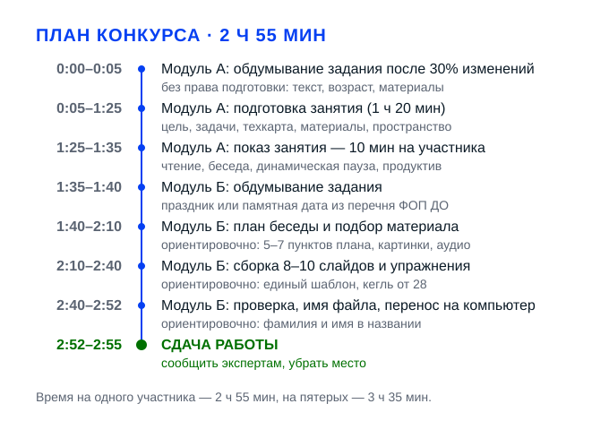
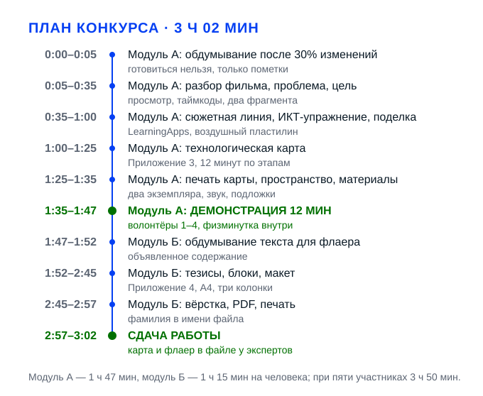
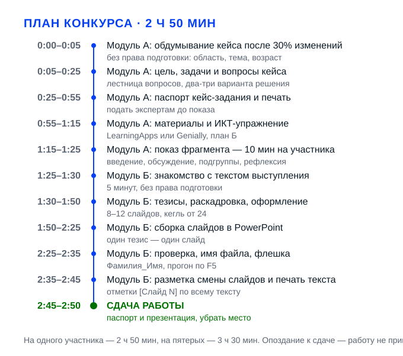

Дошкольное воспитание (Р,О)
Задания ниже — официальные файлы «Абилимпикс» (источник: abilympics-russia.ru), разложенные по категориям. Решения написаны по тексту задания, регламенту и критериям оценки; в них указано, что именно проверяет эксперт.
Школьник
14–16 лет, базовый уровень заданияВыдержка из официального конкурсного задания: страницы, относящиеся к категории «Школьник» (стр. 8–11, 14–15 источника).
Пошаговое решение
Школьная категория — два модуля и два часа пятьдесят пять минут на участника: час тридцать пять на интегрированное занятие по выразительному чтению и час двадцать на презентацию для беседы о празднике. В первом модуле вы получаете произведение и материалы после тридцати процентов изменений, за пять минут решаете, как из этого сделать занятие, час двадцать готовите карту, материалы и пространство и десять минут показываете работу экспертам: выразительное чтение с закреплением знаний, динамическая пауза и продуктивная деятельность по тому же сюжету. Второй модуль идёт без демонстрации: пять минут на осмысление выданной даты, час пятнадцать на план беседы, восемь-десять слайдов и игровое дидактическое упражнение внутри презентации, а в конце файл с фамилией в названии, перенесённый на компьютер площадки. Ошибки здесь редко бывают в технике: чаще рассыпается связка между частями занятия.

Задача 1. Спроектировать интегрированное занятие по выразительному чтениюМодуль А · 5 мин на обдумывание + 1 ч 20 мин подготовки
Первый модуль школьной категории длится час двадцать минут подготовки и десять минут показа, и всё это время вы проектируете одно занятие: выразительное чтение с закреплением знаний, динамическая пауза и продуктивная деятельность по тому же сюжету. Проектирование идёт не в свободном порядке, а по шагам из конкурсного задания: сначала текст и цель, потом фрагмент для чтения, задачи, единое содержание, материалы, двигательная активность и раскладка десяти минут. Ошибка на этом этапе не видна сразу, но она обязательно вылезет в показе, поэтому лучше потратить лишние десять минут на согласование частей, чем переписывать технологическую карту перед сдачей.
Действие 1.1. Разобрать задание после 30% изменений
Шаг 1.1.1
Берём распечатку произведения и читаем её целиком, медленно, с карандашом в руке, а не по диагонали: за пять минут обдумывания нужно понять, какое произведение дали вместо привычного, какие материалы для продуктивной деятельности положили на стол и для какого возраста группа. Читаем вполголоса, отмечая на полях слова, непонятные пятилетнему ребёнку, и подчёркиваем фрагмент в восемь-двенадцать строк, который пойдёт в выразительное чтение — он должен быть цельным по смыслу, с завязкой и развязкой внутри отрывка. У реплик ставим галочки: их можно отдать детям для проговаривания.
Пять минут даются без права подготовки: писать нельзя, но решить, что делать дальше, нужно. Критерий соответствия занятия предложенному произведению проверяется по технологической карте, и если вы возьмёте знакомую сказку вместо выданной, работа выйдет за рамки задания целиком. Тридцать процентов изменений меняют именно произведение и материалы, поэтому чтение текста — первое обязательное действие.
Вы можете своими словами пересказать, о чём текст, кто в нём главный герой и чем заканчивается история, и показали пальцем отрывок, который пойдёт в чтение вслух. Если после прочтения не получается назвать главное событие и мораль, читайте второй раз, а не начинайте заполнять карту: переписывать её потом дороже по времени.
Самая частая ошибка — просмотреть первые две строки, решить, что произведение знакомо, и обнаружить другой сюжет уже на середине чтения. Тогда вопросы беседы повисают, продуктивная деятельность не связывается с текстом, и вся конструкция занятия рассыпается на глазах эксперта.
Эксперт подходит в первые минуты и смотрит, с чем участник работает: с выданным текстом или с тем, что принёс из дома. Отдельно фиксируется, отмечен ли фрагмент для чтения, потому что это признак вдумчивой работы, а не спешки.
Шаг 1.1.2
Определяем возрастную группу по тексту задания и держим её в голове при каждом следующем решении: чаще всего это старшая или подготовительная группа, то есть дети пяти-семи лет. Из возраста выводим три цифры, которые защищают от перегруза: чтение не дольше двух с половиной минут, не больше четырёх вопросов по содержанию, продуктивная работа три минуты с готовым образцом. Сверяем, к какой области относится произведение — это речевое развитие — и решаем, какие области подключаем дополнительно: познавательное через беседу, художественно-эстетическое через поделку, физическое через паузу.
Критерий соответствия возрасту снимает баллы быстрее всех: длинный текст и десять вопросов подряд превращают занятие в допрос, а слишком простой текст не даёт закрепления, ради которого всё затевалось. Федеральная образовательная программа дошкольного образования задаёт и объём чтения, и продолжительность этапов, поэтому возраст — не формальность, а рамка, внутри которой принимаются все остальные решения по занятию.
Проговорите вслух фразу целиком: «старшая группа, пять-шесть лет, чтение две с половиной минуты, четыре вопроса, продуктивная работа три минуты». Если формулировка расплывается и цифры не называются, вернитесь к заданию и выпишите возрастной ориентир на черновик, чтобы он был перед глазами до конца подготовки.
Ошибка — проектировать «для дошкольников вообще»: тогда в сценарии остаются восемь минут чтения и слова вроде «безмолвствовать» или «укоризна», а эксперт фиксирует несоответствие возрасту и снижает оценку за содержательную часть модуля.
Смотрит на возрастную адресность в технологической карте и на то, как участник говорит с воображаемыми детьми: темп речи, длина фраз, простота лексики. Речь, обращённая к взрослым, на показе слышна сразу.
Шаг 1.1.3
Пересчитываем то, что лежит на столе, и выбираем ровно один материал для продуктивной деятельности. В наборе обычно три варианта: магнитная мозаика «Всякая всячина» на восемьдесят четыре элемента, акварельные маркеры для скетчинга, набор из двадцати четырёх двусторонних фломастеров с наконечниками кисть и линер, и воздушный пластилин «Луч», двенадцать цветов по десять граммов. Смешивать техники в трёхминутной работе нельзя, поэтому берём ту, что быстрее даёт узнаваемый образ: для животного удобнее мозаика, для сюжетной картинки — маркеры, для объёма — пластилин.
Материал — часть тридцати процентов изменений, и эксперт проверяет две вещи: что работа выполнена выданным набором и что она связана с текстом занятия. Один набор читается как продуманное решение, три набора подряд — как попытка успеть всё и не успеть ничего. Критерий связи продуктивной деятельности с темой занятия как раз про это: поделка должна быть не «просто красивой», а про того же героя, о котором только что читали.
На столе остался один набор, элементов и цветов хватает на каждого ребёнка с запасом, наконечники маркеров не засохшие и пластилин не заветренный. Проверьте, что заготовок хватает по числу детей в подгруппе: обычно это четыре-пять человек, и лучше добавить одну лишнюю.
Взять пластилин и мозаику одновременно, рассчитывая, что дети выберут сами: половина группы начнёт лепить, половина собирать, а вы за три минуты не успеете ни помочь, ни показать результат. Вторая ошибка — выбрать материал, который не даёт узнаваемого результата за три минуты, например рисование сложного сюжета линером.
Эксперт смотрит на стол в начале подготовки и потом на показе: совпадает ли то, что заявлено в карте, с тем, что реально лежит и используется. Отдельно он отмечает, назван ли материал в карте так же, как на упаковке.
Действие 1.2. Сформулировать цель и задачи занятия
Шаг 1.2.1
Пишем цель одной фразой из трёх частей: что дети закрепят, каким способом и на каком материале. Рабочая формулировка выглядит так: «Закрепить знания детей старшей группы о содержании сказки через выразительное чтение фрагмента, динамическую паузу и продуктивную деятельность по сюжету». Слово «познакомить» не используем: знакомство уже состоялось на предыдущем занятии, а в задании прямо сказано «закрепление знаний», и это разные типы занятия с разной логикой. Цель ставим так, чтобы её можно было проверить по ответам детей в последнюю минуту, а не по красоте вашей речи.
Цель в технологической карте — первое, что читает эксперт, и по ней он сверяет всё остальное: чтение, вопросы, паузу, поделку. Критерий соответствия занятия заявленной цели работает буквально: если в цели только чтение, а вы пять минут лепите ёжика, эксперт отмечает расхождение и снимает баллы за целостность. Тип занятия тоже важен: закрепление требует узнавания, а не первого знакомства с текстом.
Прочитайте цель и проверьте, можно ли ответить на неё «да» или «нет» после занятия. Если формулировка позволяет сказать «мы старались» и остаться при этом правым, она не годится. Хороший признак — в цели назван конкретный материал и конкретный вид деятельности, а не «всестороннее развитие личности».
Ошибка — написать цель на сорок слов с тремя придаточными: её невозможно ни проверить, ни удержать в голове во время показа, и эксперт видит, что цель написана для отчёта, а не для работы. Вторая ошибка — подменить закрепление знакомством и читать текст так, будто дети слышат его впервые.
Эксперт читает цель в карте до показа и потом слушает вступление: совпадает ли то, что участник обещает, с тем, что он делает в первые тридцать секунд.
Шаг 1.2.2
Разбиваем цель на три-четыре задачи и первую группу делаем читательской: дети должны вспомнить последовательность событий, узнавать героя по реплике и воспроизводить интонацию. Формулируем через глаголы, которые можно увидеть в действии: «называть», «соотносить», «передавать голосом», «договаривать». Отдельно пишем задачу на детскую выразительность, например «упражнять в передаче вопросительной интонации при проговаривании реплики лисы», потому что именно она превращает занятие по чтению в занятие по выразительному чтению, а не в пересказ.
Задачи — это шкала, по которой эксперт смотрит показ: он сопоставляет заявленное с прозвучавшим. Три-четыре задачи ещё удерживаются в десятиминутном занятии, шесть уже нет, и тогда половина заявленного просто не прозвучит, что читается как несоответствие карты и показа. Глаголы наблюдения нужны ещё и потому, что по ним легко построить вопросы и задания: каждая задача превращается в один-два вопроса по содержанию.
Проверьте себя просто: напротив каждой задачи мысленно поставьте минуту занятия, в которую она прозвучит. Если задача не привязывается ни к одному этапу, она декоративная и её надо либо убрать, либо переписать под конкретный момент.
Ошибка — переписать в задачи общие образовательные фразы из программы: «развивать речь, память, внимание». Такие задачи невозможно проверить, и эксперт не увидит их реализации, даже если занятие прошло хорошо. Вторая ошибка — заявить пять задач и не успеть ни одной.
Эксперт сверяет количество и содержание задач с этапами показа и отдельно смотрит, прозвучала ли задача на детскую интонацию, потому что её выполнение видно по голосам детей.
Шаг 1.2.3
Вторую и третью группы задач пишем отдельно и привязываем к конкретному материалу и конкретному движению. По продуктивной деятельности формулируем так, чтобы был виден результат: «собрать из магнитной мозаики силуэт героя по образцу, передав характерную деталь», «дорисовать линером фон и обвести контур». По двигательной активности — «выполнить четыре имитационных упражнения с переходом из круга врассыпную и обратно, сохраняя дистанцию вытянутых рук». Задачи не дублируют друг друга: чтение отвечает за речь, продуктив — за мелкую моторику, пауза — за крупную.
Требование про двигательную активность обязательное: в результате модуля отдельно указано, что выполнена необходимая двигательная активность дошкольников для сохранения и укрепления здоровья. Это значит, что пауза оценивается не как украшение, а как отдельная содержательная часть, у которой есть свои задачи, своё место в структуре и своя продолжительность. Продуктивную часть оценивают отдельно, её задача не может быть расплывчатой.
Проверьте, что каждая из трёх групп задач начинается с глагола и называет результат, который можно увидеть: собранный силуэт, выполненное упражнение, произнесённую реплику. Если в задаче нет ни результата, ни материала, переписывайте.
Ошибка — сформулировать паузу как «отдохнуть» и провести её без связи с текстом: тогда эксперт видит разрыв, а дети теряют нить и не возвращаются к сюжету. Вторая ошибка — задачи продуктивной деятельности написать под материал, которого нет на столе, например про пластилин, когда выбран мозаичный набор.
Эксперт смотрит на три блока задач как на каркас показа и проверяет, что ни один из них не выпал: чтение, движение и продуктив должны быть видны в равной мере.
Действие 1.3. Сшить единое содержание занятия
Шаг 1.3.1
Строим одну сюжетную линию, в которой чтение, пауза и поделка держатся за один образ. Самый надёжный приём — «мы вместе с героем»: читаем фрагмент, где герой попадает в трудную ситуацию; в паузе дети изображают, как он выбирается, повторяя движения из текста; в продуктивной части собирают то, что герою помогло. Так переход между частями не требует слов «а теперь мы полепим», потому что каждая часть продолжает предыдущую. На черновике рисуем три стрелки и подписываем над ними образ и действие, чтобы увидеть разрыв, если он есть.
Требование продумать единое содержание интегрированного занятия стоит в задании отдельным пунктом, и это самая частая точка потери баллов: три хорошие части, не связанные между собой, дают ощущение набора упражнений. Интеграция и оценивается по связкам — насколько естественно пауза вырастает из текста, а поделка из паузы. Когда связка есть, дети сами удерживают тему, и занятие идёт легче.
Проверьте связки вопросом: если убрать чтение, пауза и поделка рассыпаются или остаются осмысленными? Если остаются, значит интеграции нет, и надо переделывать сюжет, а не придумывать вступительные фразы. Хороший признак — в каждой части звучит одно и то же ключевое слово из текста.
Ошибка — соединять части формально, одной фразой «а теперь про героя». Дети в такой схеме не переносят знание из чтения в деятельность, и эксперт видит три разных задания подряд. Вторая ошибка — строить сюжет вокруг материала, а не вокруг текста: тогда занятие превращается в мастер-класс.
Эксперт смотрит именно на переходы: как участник вводит паузу и как возвращает детей к тексту после поделки. Связки видны в первые секунды каждой части.
Шаг 1.3.2
Раскладываем десять минут показа по частям и записываем это в карту с точностью до половины минуты: полторы минуты на вступление и мотивацию, две с половиной на выразительное чтение фрагмента, две на беседу с вопросами, полторы на динамическую паузу, две с половиной на продуктивную деятельность и полминуты на рефлексию. Сумма ровно десять, и каждая цифра привязана к этапу, который видно. Если фрагмент длиннее двух с половиной минут чтения, его надо сокращать сейчас, а не на показе, потому что на показе вы уже не имеете права импровизировать с временем.
Время показа жёстко задано в конкурсном задании: десять минут на человека, и оно входит в общий расчёт модуля вместе с часом двадцатью минутами подготовки. Раскладка по этапам — это ещё и критерий: эксперт видит, уложился ли участник в десять минут и не съел ли паузу и продуктив ради чтения. Раскладка, записанная в карте, защищает вас и в спорной ситуации: видно, что вы планировали.
Проверьте арифметику вслух и добавьте к каждому этапу одну фразу-переход, чтобы не тратить на связки отдельное время. Если сумма получается одиннадцать минут, убирайте из беседы вопрос, а не из паузы: пауза и продуктив обязательны по заданию.
Ошибка — планировать «примерно» и оставлять время на импровизацию: на показе импровизация всегда уходит в чтение, потому что оно приятнее, и последние две части скомкиваются. Вторая ошибка — отводить продуктивной деятельности минуту, за которую дети не успевают ничего собрать.
Эксперт держит секундомер и отмечает длительность каждого этапа: соответствие раскладке в карте видно по факту, и расхождение больше минуты фиксируется.
Шаг 1.3.3
Подбираем приёмы закрепления под свой текст, а не «на всякий случай». Работают четыре приёма: вопрос по содержанию с опорой на иллюстрацию, «доскажи словечко» с последним словом строки, восстановление порядка событий по двум-трём картинкам и узнавание героя по реплике. Для десятиминутного занятия хватает двух приёмов и четырёх вопросов, причём вопросы строим от простого к сложному: сначала «кто пришёл», потом «почему он так поступил», и обязательно один вопрос, где ребёнок должен сам продолжить фразу героя.
Закрепление — это и есть суть задания, поэтому приёмы оцениваются как содержание занятия, а не как техника. Вопросы по иллюстрации дают опору для памяти, «доскажи словечко» тренирует чувство ритма и интонацию, восстановление последовательности проверяет понимание сюжета. Без приёмов занятие превращается в чтение вслух, а знание текста при этом никак не проверяется.
Проверьте вопросы на себе: на каждый должен быть короткий ответ, известный из текста, и ни один не должен начинаться со слова «как вы думаете» в качестве единственной опоры. Если на вопрос нельзя ответить по содержанию, это вопрос не по тексту.
Ошибка — задать четыре вопроса подряд без опоры на картинку: дети отвечают по одному, остальные выпадают, и закрепления не происходит. Вторая ошибка — задать вопрос, ответ на который прозвучал в вашем же чтении дословно, и получить хоровое повторение вместо понимания.
Эксперт слушает, как участник формулирует вопросы и как реагирует на ответы: повторяет ли за ребёнком, уточняет ли, помогает ли наводящим вопросом. Особенно его интересует, прозвучал ли вопрос с опорой на иллюстрацию, а не все вопросы на память.
Действие 1.4. Подготовить материалы и оборудование
Шаг 1.4.1
Готовим заготовки под выбранную технику и раскладываем их по числу детей. Для магнитной мозаики делим восемьдесят четыре элемента на четыре-пять кучек так, чтобы в каждой был полный набор форм для силуэта, и выкладываем на поднос с образцом-схемой размером с ладонь. Для маркеров готовим листы плотной бумаги формата А5 с заранее обведённым контуром, потому что за три минуты ребёнок не нарисует контур сам, а обведёт готовый и дорисует деталь. Для воздушного пластилина скатываем четыре-пять шариков основы и раскладываем по доскам, оставляя цветные брусочки в общей коробке.
Предварительная работа к продуктивной деятельности прямо предусмотрена заданием, и это единственный способ уложиться в две с половиной минуты. Заготовка не считается подсказкой: оценивается результат ребёнка, а не его скорость рисования контура. Отдельно это важно для школьной категории, где показ идёт с воображаемыми детьми и вы одновременно играете роль педагога и помогаете — лишние движения съедают минуты из десяти.
Проверьте, что заготовок на одну больше числа детей, контуры не просвечивают насквозь, кучки мозаики не рассыпаются, пластилин мягкий и не липнет к столу. Разложите всё на подносе в том порядке, в котором будете выдавать: сначала основа, потом детали.
Ошибка — выдать материал в общую кучу и ждать, что дети разберутся: три минуты уходят на дележ, а не на работу. Вторая ошибка — сделать заготовку слишком подробной, когда ребёнку остаётся только закрасить, и тогда продуктивная деятельность теряет смысл.
Эксперт смотрит на заготовки до показа и оценивает, продумана ли подготовка: ровные контуры, разделённые наборы, свободное место на столе. Если заготовки лежат россыпью, а не по числу детей, это видно сразу и читается как непродуманная подготовка.
Шаг 1.4.2
Собираем демонстрационную часть: книгу или распечатку с крупным шрифтом для чтения, две-три иллюстрации к фрагменту формата А4 и карточку с ключевым словом. Иллюстрации ставим на подставку слева от себя, чтобы не закрывать лицо рукой во время чтения и не поворачиваться спиной к детям. Если иллюстрация нужна в середине чтения, её лучше держать второй по порядку, а не искать на столе — поиск картинки посреди фрагмента разрушает интонацию сильнее, чем любая ошибка в тексте.
Демонстрационный материал поддерживает закрепление: вопрос по иллюстрации в опоре на картинку задавать проще, а детям легче вспомнить событие. Кроме того, открытая книга и подставка с картинками создают то самое предметно-развивающее пространство, которое требуется смоделировать по заданию, и его наличие видно эксперту без объяснений.
Проверьте, что шрифт в распечатке читается с двух метров, иллюстрации не бликуют под светом и карточка не падает с подставки. Если карточку приходится придерживать рукой, значит подставка не годится и её надо заменить до показа.
Ошибка — читать с телефона или с экрана ноутбука: мелкий шрифт заставляет наклоняться, поза ломается, голос уходит вниз, и выразительность пропадает. Вторая ошибка — разложить иллюстрации в стопку, из которой нужную приходится вытаскивать наугад.
Эксперт оценивает выразительность чтения в том числе по позе и по тому, видно ли текст участнику без наклона: книга на уровне груди, лицо открыто. Он также проверяет, не закрывает ли участник лицо книгой в первые секунды чтения.
Шаг 1.4.3
Проверяем оборудование до показа, а не во время: ноутбук включается и держит заряд, колонка подключена и звук выставлен на средней громкости, флешка с материалом вставлена и открывается, на рабочем столе нет лишних окон. Если по сценарию есть музыкальное сопровождение паузы, заранее находим трек и ставим его на паузу в плеере, чтобы включить одним нажатием. Отдельно проверяем, что презентация или слайд с иллюстрацией открывается за две секунды: долгая загрузка на показе выглядит как потеря контроля.
В школьной категории показ идёт десять минут, и любая техническая заминка съедает время из двигательной активности или продуктивной части, за которые ставятся отдельные баллы. Проверка оборудования — это часть подготовки, которая входит в час двадцать минут, поэтому откладывать её на последнюю минуту нельзя. Кроме того, на площадке компьютеры могут быть незнакомыми, и лучше познакомиться с ними заранее.
Нажмите каждую кнопку, которую планируете нажимать на показе, и убедитесь, что все окна закрываются одним движением. Проверьте, что флешка читается и файл открывается именно в той программе, которая стоит на площадке.
Ошибка — рассчитывать на музыку из телефона и обнаружить на показе, что звук идёт из динамика тихо и с задержкой. Вторая ошибка — оставить открытыми окна с чужими файлами: на показе они видны на экране и сбивают внимание.
Эксперт фиксирует готовность оборудования в начале подготовки: включённый ноутбук, проверенный звук, открытый файл — это часть критерия организации рабочего места.
Действие 1.5. Смоделировать предметно-развивающее пространство
Шаг 1.5.1
Планируем посадку детей и зоны на бумаге, а потом переносим на площадку. Основная часть занятия идёт в полукруге на стульях: так все дети видят лицо педагога, иллюстрации и книгу одновременно. Для продуктивной части нужны столы, поставленные буквой П или двумя рядами, чтобы вы могли подойти к каждому ребёнку за десять секунд. Зону паузы освобождаем заранее: отодвигаем стулья к стене и оставляем ковёр или свободный участок пола не меньше двух метров в диаметре.
Моделирование пространства стоит в задании отдельным пунктом, потому что от него зависит, уложитесь ли вы в десять минут: перестановка мебели посреди занятия съедает полторы-две минуты и разрушает темп. Продуманное пространство ещё и снимает половину дисциплинарных проблем, которых на конкурсе боятся больше всего: дети, сидящие в полукруге, не толкаются и не отвлекаются на спины друг друга.
Проверьте расстояния шагами: от вашего места до дальнего ребёнка не больше трёх шагов, проход между столами не уже полуметра, ковёр не скользит. Сядьте на детский стул сами: если колени выше стола или обзор перекрыт, посадку надо менять.
Ошибка — оставить привычную расстановку «как было» и работать в ней: тогда половина детей сидит спиной к иллюстрациям, а вы вынуждены говорить громче. Вторая ошибка — не освободить место для паузы и проводить её между столами, где дети задевают подносы.
Эксперт обходит площадку до показа и отмечает, смоделировано ли пространство под три вида деятельности или всё сведено к одному столу. Отдельно фиксируется, есть ли свободная зона для паузы: если её нет, этап двигательной активности проводить негде.
Шаг 1.5.2
Организуем зону для динамической паузы с точки зрения безопасности: пол не скользкий и сухой, в пределах площадки нет острых углов, стоек и провода на полу, между детьми при упражнениях остаётся дистанция вытянутых рук. Заранее решаем, где дети встают в круг, где — врассыпную, и как они возвращаются на места: маршрут проговариваем на показе одной фразой. Обувь и одежда на паузе не меняются, поэтому упражнения подбираем без бега и прыжков с опорой на одну ногу.
Двигательная активность по заданию должна сохранять и укреплять здоровье, а не создавать риск: в чужом помещении с гладким полом и тесной расстановкой бег и эстафеты превращаются в травмоопасный элемент, который эксперт обязательно отметит. Продуманная зона позволяет провести паузу за полторы минуты без остановок на замечания, а остановки на замечания — это потерянные секунды из десяти минут.
Проверьте зону, пройдя по ней и раскинув руки: вы не должны касаться мебели. Убедитесь, что ковёр не сдвигается ногой и что возвращаться к столам дети будут по свободному проходу, а не через центр площадки.
Ошибка — проводить паузу на месте, у столов, с поднятыми руками: дети задевают подносы и соседей, а сама пауза не даёт разгрузки. Вторая ошибка — забыть про маршрут возвращения и потратить минуту на то, чтобы собрать группу обратно.
Эксперт смотрит на паузу глазами инструктора по безопасности: дистанция, отсутствие помех, темп выполнения и дыхание детей. Он засекает и время паузы: полторы минуты на четыре упражнения — норма, три минуты — уже потеря темпа.
Шаг 1.5.3
Раскладываем материалы по этапам и делаем финальную проверку за пять минут до показа. Демонстрационное (книга, иллюстрации, карточка) — на отдельном краю стола, чтобы не мешать; раздаточное (подносы, листы, доски) — на дальнем столе, накрытое или сложенное так, чтобы дети не отвлекались в начале; оборудование — сбоку, с доступом одной рукой. Проходим по площадке с контрольным списком из пяти пунктов: карта распечатана, материалы разложены, оборудование включено, зона паузы свободна, руки вымыты.
Пять минут перед показом — единственное время, когда можно спокойно поправить то, что разъехалось. После начала показ уже нельзя останавливать: любая пауза на «сейчас найду» оценивается как потеря организации. Разложенные по этапам материалы дают ещё и внешний эффект: эксперт видит систему, а не кучу на столе, и это отдельная строка в оценке организации пространства.
Проверьте, что вы можете дотянуться до каждого нужного предмета, не вставая с места и не поворачиваясь спиной к детям. Если для этого нужно сделать два шага, перенесите предмет ближе. Отдельно проверьте, что подносы для продуктивной части накрыты или убраны с линии взгляда детей.
Ошибка — держать всё под рукой одной кучей, включая подносы для продуктивной части: дети видят материал с первой минуты и перестают слушать чтение. Вторая ошибка — оставить финальную проверку на последние тридцать секунд и обнаружить, что карта не распечатана.
Эксперт подходит за пять минут до показа и смотрит на площадку целиком: готовность видна без слов, и именно в этот момент снимается часть баллов за организацию.
Задача 2. Оформить технологическую карту и провести занятиеМодуль А · 10 мин показа на участника · итого 1 ч 35 мин
Вторая половина модуля А — это перевод замысла в документ и в живую речь. Технологическая карта по форме приложения к конкурсному заданию сдаётся экспертам до показа, и по ней они сверяют каждую минуту занятия; затем идёт показ на десять минут, где оценивают и выразительность чтения, и беседу, и двигательную активность, и продуктивную деятельность. Карта и показ должны совпадать дословно по этапам, иначе самая сильная часть работы теряет смысл: эксперт видит расхождение и снижает оценку сразу за два пункта.
Действие 2.1. Заполнить технологическую карту
Шаг 2.1.1
Заполняем шапку карты: тема занятия, возрастная группа, цель, три группы задач, интегрируемые образовательные области, материалы и оборудование, предварительная работа. Тему пишем так, как она прозвучит для детей, а не как она называлась в задании: «Как лиса зайца перехитрила» понятнее, чем «Закрепление знаний по русской народной сказке». В строке материалов перечисляем ровно то, что лежит на столе, включая название набора и количество элементов, потому что эксперт сверяет карту с фактическим набором.
Шапка — это то, что читают до показа, и по ней складывается первое впечатление об уровне работы. Критерий соответствия карты заданию проверяется по этим строкам: если в карте не указана двигательная активность или продуктивная деятельность, считается, что они не запланированы. Точные названия материалов нужны ещё и потому, что тридцать процентов изменений меняют набор, и эксперту важно видеть, что участник работал именно с выданным.
Проверьте шапку по четырём вопросам: есть ли возраст, есть ли цель в одну фразу, перечислены ли все три вида деятельности, совпадают ли материалы с тем, что на столе. Если хотя бы один ответ отрицательный, карту нельзя сдавать.
Ошибка — оставить строку материалов общей («наглядность, раздаточный материал»): тогда связь с тридцатью процентами изменений не видна и баллы за соответствие теряются. Вторая ошибка — указать возраст, не соответствующий тексту задания, например «средняя группа» для фрагмента, рассчитанного на старших.
Эксперт читает шапку целиком и делает пометки напротив строк, которые собирается проверять на показе. Если шапка заполнена до показа, он успевает сверить материалы с тем, что лежит на столе, и делает пометку.
Шаг 2.1.2
Расписываем ход занятия таблицей по этапам, и в каждой строке указываем время, задачи этапа, деятельность педагога, деятельность детей и ожидаемый результат. Этапы берём те, что запланированы: мотивация, выразительное чтение, беседа с закреплением, динамическая пауза, продуктивная деятельность, рефлексия. В графе деятельности детей пишем конкретные действия, а не «слушают» и «отвечают», а в графе результатов — то, что можно увидеть: назвали героя, воспроизвели реплику с вопросительной интонацией, выполнили четыре упражнения, собрали силуэт по образцу.
Таблица по этапам — рабочий инструмент показа: по ней удобно проверять себя, не выпадая из роли. Оценивается и качество заполнения: если деятельность педагога и детей описана симметрично, видно, что участник понимает структуру занятия, а не пересказывает конспект. Отдельно эксперты смотрят, выделены ли пауза и продуктив как самостоятельные этапы со своими задачами.
Проверьте таблицу на сходимость: сумма времени по этапам должна давать ровно десять минут, а каждый заявленный результат должен попадать в тот этап, где он действительно появляется. Пройдите по строкам пальцем и назовите вслух, что делает педагог и что делают дети.
Ошибка — переписать в карту конспект сплошным текстом без разбивки на этапы и время: эксперт не сможет сопоставить показ с планом, и это читается как отсутствие структуры. Вторая ошибка — в графе результатов написать «дети закрепили знания», то есть переписать цель вместо результата этапа.
Эксперт сверяет таблицу с показом построчно: особенно внимательно смотрит на строки паузы и продуктивной деятельности, потому что по ним чаще всего бывают расхождения.
Шаг 2.1.3
Распечатываем карту в одном экземпляре для экспертов и оставляем себе второй, потому что по нему удобно вести показ. Проверяем печать: таблица не разъехалась, шрифт читается без прищуривания, время этапов видно, страницы пронумерованы и скреплены. Карту сдаём экспертам до начала показа, а не после, и в этот момент коротко называем, на каком этапе будет пауза и на каком продуктивная часть, чтобы они успели подготовить листы оценки.
Порядок сдачи карты прописан в задании отдельным пунктом: сначала предоставить технологическую карту экспертам, потом проводить занятие. Нарушение последовательности фиксируется, даже если сама карта хорошая. Печатный вид тоже оценивается: мятая страница с обрезанной таблицей создаёт впечатление небрежности во всей работе, а исправить это на площадке уже нечем.
Убедитесь, что у вас на руках два экземпляра и оба читаемы, что в карте не осталось пустых ячеек и что номер страницы не потерялся при печати. Проверьте, что время в карте совпадает с тем, что вы собираетесь делать.
Ошибка — сдавать карту после показа, объясняя, что «хотелось сначала посмотреть, как пойдёт»: это прямое нарушение последовательности задания. Вторая ошибка — сдать единственный экземпляр и остаться без плана перед глазами на десять минут показа.
Эксперт принимает карту, ставит на ней отметку времени и держит её перед собой во время показа. Отдельно он смотрит время сдачи: карта, отданная после начала показа, отмечается как нарушение порядка.
Действие 2.2. Провести занятие по этапам
Шаг 2.2.1
Начинаем с мотивации на полторы минуты: садимся на детский стул так, чтобы глаза были на уровне глаз детей, и первыми двумя фразами создаём повод слушать. Работает приём «закрытая книга»: показываем обложку или иллюстрацию и спрашиваем, кто из героев спрятался, а потом обещаем, что сегодня мы узнаем, чем всё закончилось. Говорим короткими фразами по пять-семь слов, с паузой после каждого вопроса, и не начинаем чтение, пока не получили хотя бы два ответа — пусть неверных, это нормально на этапе закрепления.
Вступление задаёт темп всего занятия: если первые полторы минуты прошли в быстром темпе без пауз, дети не включаются, и дальше чтение идёт в пустоту. Критерий владения аудиторией и установления контакта оценивается именно здесь, в первые секунды, и потом уже не переигрывается. Мотивация нужна ещё и для закрепления: вопрос про спрятавшегося героя сразу поднимает в памяти текст, с которым дети знакомились раньше.
Проверьте себя по признакам: дети повернулись к вам, прозвучало не меньше двух ответов, вы не начали читать раньше времени. Если ответов нет, задайте вопрос с выбором из двух вариантов — он всегда снимает ступор.
Ошибка — начать сразу с чтения, пропустив мотивацию: тогда первые строчки звучат в шум, и приходится останавливаться, а остановка на показе стоит дорого. Вторая ошибка — растянуть вступление на три минуты и съесть время у продуктивной части.
Эксперт смотрит на первый контакт: сядет ли участник на уровень детей, задаст ли вопрос и выдержит ли паузу для ответа. Ему важно увидеть паузу после вопроса: если участник отвечает сам за детей, контакт не складывается.
Шаг 2.2.2
Читаем фрагмент две с половиной минуты, стоя или сидя с прямой спиной, держа книгу на уровне груди так, чтобы лицо оставалось открытым. Перед началом делаем короткую паузу в одну-две секунды и называем название, а дальше ведём текст в среднем темпе, чуть медленнее обычной речи, с паузами между смысловыми частями. Логическое ударение ставим на словах, которые несут событие: «выглянула», «обманула», «убежал», — и меняем силу голоса на репликах героев, чтобы каждый герой звучал по-своему. Последнюю фразу читаем тише и медленнее, а после неё держим паузу в две-три секунды, не заполняя её словами.
Выразительное чтение — центральный критерий модуля, ради него задание и названо интегрированным занятием. Оценивается не артистизм, а техника: интонация, темп, паузы, логическое ударение, соответствие голоса образу. Пауза после чтения нужна, чтобы смысл дошёл: без неё дети не успевают пережить эпизод, и беседа начинается с пустоты. Открытое лицо и книга на уровне груди — тоже критерий, потому что закрытое книгой лицо убивает контакт.
Проверьте себя по трём признакам: вас слышно в дальнем углу без напряжения, на каждой реплике героя голос меняется, после последней фразы выдержана пауза не меньше двух секунд. Если по ходу чтения вы сбились, не начинайте заново — продолжайте с ближайшей фразы, восстановив интонацию.
Ошибка — читать ровным голосом на одной ноте: текст воспринимается как информация, и вся выразительная часть пропадает, даже если слова произнесены верно. Вторая ошибка — смотреть в книгу целиком: контакт с аудиторией теряется, и эксперт отмечает, что чтение было «в лист».
Эксперт слушает с секундомером и отмечает три вещи: темп, смену интонации на репликах и паузу после фрагмента. Поза и книга в руках тоже фиксируются. Он отмечает и то, куда направлен взгляд: в книгу, в сторону или на детей, — от этого зависит оценка контакта.
Шаг 2.2.3
Проводим беседу на две минуты, задавая не больше четырёх вопросов, и строим их от простого к сложному. Первый вопрос — про факт: кто пришёл, что случилось. Второй — про деталь с опорой на иллюстрацию: покажите картинку и спросите, что на ней происходит. Третий — про причину: почему герой так поступил. Четвёртый — приём «доскажи словечко»: начинаете фразу из текста, дети договаривают последнее слово. После каждого ответа повторяем его своими словами с лёгким уточнением, чтобы ребёнок услышал, что его услышали, и переходим к следующему, не задерживаясь на одном говорящем.
Беседа — это и есть закрепление знаний, указанное в теме задания, поэтому она оценивается по содержанию: вопросы должны проверять знание текста, а не общую эрудицию. Опора на иллюстрацию даёт детям вторую опору памяти и заодно показывает, что вы умеете пользоваться наглядностью. Приём «доскажи словечко» проверяет чувство ритма и одновременно тренирует интонацию, то есть работает на ту же задачу выразительности.
Проверьте, что прозвучали все четыре вопроса и что хотя бы один ответ вы уточнили встречным вопросом. Если дети отвечают хором, переформулируйте вопрос так, чтобы он требовал выбора, а не готовой фразы.
Ошибка — задать десять вопросов и превратить беседу в допрос: времени на паузу и поделку не остаётся, и две части из четырёх выпадают. Вторая ошибка — принимать только «правильный» ответ и поправлять ребёнка на глазах у эксперта.
Эксперт слушает формулировки вопросов и реакцию на ответы: повторяет ли участник ответ ребёнка, уточняет ли, помогает ли наводящим вопросом. Отдельно фиксируется, прозвучал ли приём «доскажи словечко»: он проверяет и знание текста, и интонацию.
Шаг 2.2.4
Проводим динамическую паузу на полторы минуты: четыре упражнения, связанные с сюжетом, каждое по три-четыре повтора. Начинаем с команды встать в круг и проверить дистанцию вытянутыми руками, затем идём по кругу «как герой», показываем движение и проговариваем его одной фразой, добавляем упражнение на потягивание вверх и наклон, заканчиваем дыхательным: вдох через нос, руки вверх, выдох через рот, руки вниз, три раза. Темп держим средний, чтобы дети успевали за показом, и после последнего упражнения сразу называем, куда возвращаемся.
Двигательная активность заявлена в результате модуля отдельно: должна быть выполнена необходимая активность для сохранения и укрепления здоровья. Значит, пауза оценивается по существу — есть ли разгрузка, снято ли статическое напряжение, восстановлено ли дыхание, а не просто «дети подвигались». Связь упражнений с сюжетом держит интеграцию: пауза становится частью занятия. Дыхательное упражнение в конце возвращает группу в рабочее состояние.
Проверьте три признака: все дети выполняют движения одновременно с вами, никто не задевает соседа, после дыхательного упражнения слышно, что дыхание выровнялось. Если кто-то выпал, повторите движение ещё раз, не переходя к следующему.
Ошибка — провести паузу без показа, только словами: половина детей не понимает задание, и вместо движения получается толпа. Вторая ошибка — затянуть паузу до трёх минут и не оставить времени на продуктивную часть, которая тоже несёт отдельные баллы.
Эксперт смотрит на паузу как на отдельный этап: связь с текстом, показ движения, темп, дыхание и безопасную дистанцию между детьми. Он отмечает и возвращение в рабочий ритм: затянувшийся переход съедает время продуктивной части.
Шаг 2.2.5
Переходим к продуктивной деятельности: две с половиной минуты на работу и полминуты на рефлексию. Садим детей за столы, ставим на середину образец, выдаём подносы с заготовками и даём инструкцию одной фразой из двух частей: что собрать и по какому образцу. Дальше работаем руками: подходим к каждому, помогаем там, где ребёнок застрял, и не забираем работу. За тридцать секунд до конца предупреждаем, что заканчиваем, и в последнюю минуту собираем работы на один стол, просим каждого назвать одним словом, что у него получилось, и хвалим за конкретную деталь, а не «молодцы».
Продуктивная деятельность должна быть выполнена по теме занятия: оценивается и связь с текстом, и аккуратность, и то, что работа доведена до результата за отведённое время. Рефлексия в конце нужна не для красоты: эксперт смотрит, умеет ли участник завершать занятие вопросом к детям, а не обрывом на полуслове. Выставка работ на одном столе показывает, что результат виден и что вы управляете пространством до последней минуты.
Проверьте, что у каждого ребёнка есть законченная работа, что образец был на виду и что вы успели подойти ко всем хотя бы по разу. Если кто-то не успел, дайте ему десять секунд и одно конкретное действие, а не начинайте объяснять заново.
Ошибка — объяснять технику три минуты и оставить на работу минуту: дети не успевают, и часть модуля проваливается. Вторая ошибка — доделывать поделку за ребёнка, после чего на выставке видно взрослую руку, и это отдельно отмечается экспертом.
Эксперт подходит к столам во время работы и смотрит, как участник инструктирует, помогает и удерживает время; результат оценивается по готовым работам в конце.
Действие 2.3. Завершить показ и убрать рабочее место
Шаг 2.3.1
Заканчиваем занятие словами благодарности детям и сразу сообщаем экспертам, что показ завершён: подходим к их столу, называем своё имя и говорим, что занятие закончено и карта сдана. Это отдельный пункт в последовательности выполнения задания, и он защищает от неприятной ситуации, когда эксперты не понимают, идёт ещё работа или уже нет, и часть времени показ «висит» без оценки. Если предусмотрены вопросы, остаёмся рядом и отвечаем стоя, не уходя к своему столу.
Сообщение о завершении — формальность, которая оценивается: эксперты фиксируют время окончания показа, и оно должно укладываться в десять минут. Если вы молча собираете материалы, время показа растягивается, а за превышение снимают баллы, даже когда само занятие прошло хорошо. Короткое и точное сообщение ещё и показывает, что участник контролирует процесс от начала до конца.
Проверьте, что вы назвали себя, сказали про карту и услышали в ответ, что показ принят. Если эксперты задают вопрос, отвечайте одним-двумя предложениями и возвращайтесь к уборке только после того, как вопрос закрыт.
Ошибка — уйти собирать подносы молча, решив, что «и так видно»: эксперты могут решить, что показ не закончен, и время будет идти дальше. Вторая ошибка — начать объяснять всю свою подготовку без вопроса, затягивая процедуру на лишние минуты.
Эксперт фиксирует время окончания показа и делает отметку о том, что участник сообщил о завершении сам. Если участник ушёл к столу молча, время показа продолжает идти, и это может стоить баллов за регламент.
Шаг 2.3.2
Отвечаем на вопросы экспертов по карте и по занятию, держа карту в руках и показывая нужную строку. Отвечаем по существу: на вопрос «почему пауза именно здесь» говорим, что после чтения идёт статическая нагрузка и её надо снять до продуктивной работы; на вопрос «почему такой материал» — что он выдан в тридцати процентах изменений и даёт узнаваемый образ за три минуты. Если ответа нет, честно говорим, что не предусмотрели, и называем, что изменили бы, — это оценивается выше, чем попытка защитить случайное решение.
Вопросы после показа — не допрос, а часть оценки понимания собственной работы. Эксперты проверяют, может ли участник объяснить связки: почему выбрано это произведение, почему такая раскладка времени, почему пауза стоит именно на этом месте. Умение объяснить замысел входит в критерий методической грамотности, и на нём легко потерять баллы, если карта заполнялась механически.
Проверьте, что ответы не длиннее трёх предложений и опираются на карту или на конкретное действие в занятии. После ответа возвращайте взгляд к эксперту и ждите следующего вопроса, не заполняя паузу. Каждый ответ заканчивайте взглядом к эксперту и короткой паузой.
Ошибка — защищать каждое решение и спорить: спор воспринимается как неуверенность и затягивает процедуру. Вторая ошибка — отвечать общими словами про любовь к детям вместо конкретного методического обоснования.
Эксперты задают два-три вопроса по карте и по ходу показа и оценивают точность ответов, а не красноречие. Он отмечает, ссылается ли участник на строку карты или отвечает по памяти: второе слабее.
Шаг 2.3.3
Убираем рабочее место: материалы складываем в контейнеры по наборам, подносы протираем, бумагу и обрезки собираем в мусор, столы вытираем насухо, стулья ставим на место, оборудование выключаем. Карту забираем или оставляем по указанию экспертов. Всё это делается в том же порядке, в котором раскладывалось, чтобы на следующем модуле не искать элементы по всей площадке: до модуля Б остаётся меньше пяти минут, и они уйдут на обдумывание задания.
Уборка — часть организации рабочего места, и она видна экспертам, которые проходят по площадке между модулями. Кроме того, чистое место нужно вам самим: магнитная мозаика, рассыпанная по столу, и открытые маркеры будут мешать при работе над презентацией. Требование убрать рабочее место стоит в конце последовательности выполнения задания и относится к обоим модулям.
Проверьте, что на столе не осталось мелких элементов, маркеры закрыты, пластилин в коробке, мусор вынесен. Пройдите по площадке и посмотрите на неё как на чужое рабочее место: если бы вам здесь работать следующему, всё в порядке?
Ошибка — оставить материалы на столе «до конца конкурса»: к модулю Б они мешают, а эксперты фиксируют небрежность. Вторая ошибка — выбросить заготовки и остатки набора, которые ещё понадобятся, и потом обнаружить нехватку элементов.
Эксперт обходит площадку после показа и отмечает состояние рабочего места в листе оценки организации. Ему видно и то, разложены ли материалы по контейнерам: это признак готовности к следующему модулю.
Задача 3. Разработать презентацию для беседы с дошкольникамиМодуль Б · 5 мин на обдумывание + 1 ч 15 мин подготовки
Второй модуль школьной категории идёт без демонстрации: его результат — файл презентации и технологическая карта беседы, а не живой показ. Пять минут даётся на осмысление тридцати процентов изменений, а дальше час пятнадцать на всё остальное: выбрать праздник из перечня федеральной программы, составить план беседы, подобрать иллюстрации и аудио, собрать восемь-десять слайдов и встроить в них игровое дидактическое упражнение. Оценивают содержание, соответствие возрасту, оформление и работающее упражнение, причём проверять будут именно на компьютере площадки, поэтому файл должен открываться без сюрпризов.
Действие 3.1. Определить цель и составить план беседы
Шаг 3.1.1
Читаем выданное задание и находим, какой праздник или какая памятная дата попали в тридцать процентов изменений: перечень даётся по федеральной образовательной программе, и брать тему «из головы» нельзя. Сверяем дату с возрастом детей: для старшей группы подходят даты с понятным детям событием и наглядным образом — День космонавтики с ракетой и первым спутником, День Победы с вечным огнём и парадом, День народного единства с площадью и памятником, День Государственного флага с самим флагом. Сразу выписываем три-четыре факта, которые дети смогут удержать, и один образ — опору всей беседы.
Тридцать процентов изменений в модуле Б меняют именно праздник, и это первое, что проверяет эксперт: совпадает ли тема презентации с выданной датой. Если участник приносит заготовленную дома презентацию про другое событие, работа не соответствует заданию целиком. Возрастной отбор фактов тоже важен: дат с длинной историей много, но дошкольнику нужен один образ и два-три действия, а не хронология.
Проверьте себя: вы можете назвать дату, возрастную группу и главный образ беседы одной фразой каждый. Если образ не складывается, значит факты подобраны неверно и надо взять другую опору, пока не начата презентация.
Ошибка — выбрать дату, о которой сами мало знаете, и потом искать материал наугад: беседа получается рыхлой, а слайды — набором случайных картинок. Вторая ошибка — взять событие, которое дети не могут себе представить без длинного объяснения, например дату из истории города.
Эксперт сверяет тему в заголовке презентации и в карте беседы с выданным перечнем праздников и дат. Если дата не из перечня, работа не соответствует тридцати процентам изменений, и это фиксируется отдельной строкой.
Шаг 3.1.2
Формулируем цель беседы одной фразой и обязательно через результат: «дать детям старшей группы первоначальные представления о Дне космонавтики и вызвать чувство гордости за первых космонавтов». Рядом пишем две-три задачи: познакомить с одним-двумя фактами, объяснить значение символа, побудить к высказыванию. Задачи отделяем от цели по признаку проверяемости: цель показывает направление, задачи — то, что прозвучит в беседе и что можно услышать в ответах детей.
Цель и задачи — первая страница карты беседы, по ним эксперт оценивает, понимает ли участник разницу между беседой и лекцией. Для дошкольников беседа строится на вопросах и коротких сообщениях, поэтому в задачах обязательно появляется побуждение к высказыванию. Если в задачах только «рассказать» и «показать», беседа превращается в монолог, и это видно по самим слайдам с длинным текстом.
Проверьте, что цель не длиннее двадцати пяти слов, а задач не больше трёх, и что каждая задача начинается с глагола. Если задача звучит как «воспитывать патриотизм», замените её на конкретное действие, которое прозвучит в беседе.
Ошибка — написать цель из пяти строк с перечислением всего курса дошкольного образования: её невозможно связать с восемью слайдами. Вторая ошибка — поставить задачу «познакомить с историей праздника» и затем пытаться уложить в беседу всю хронологию.
Эксперт читает цель и задачи до просмотра файла и потом проверяет, соответствует ли им содержание слайдов. Ему важно увидеть в задачах побуждение к высказыванию: без него беседа превращается в монолог.
Шаг 3.1.3
Составляем план беседы по форме приложения к заданию: пять-семь пунктов, каждый — одна мысль и один вопрос к детям. Логика для дошкольников простая: сначала зацепка и вопрос «что вы видите», потом одно новое сведение, потом второй факт с иллюстрацией, потом объяснение символа, потом игровое упражнение, в конце — обобщающий вопрос и короткий вывод. Напротив каждого пункта ставим номер слайда, чтобы план сразу превращался в структуру презентации и не пришлось перестраивать её на середине.
План беседы — обязательный элемент результата модуля: разрабатывается технологическая карта беседы, и презентация должна ей соответствовать. Пять-семь пунктов удерживаются в беседе на десять-двенадцать минут, а большее количество превращает разговор в перечисление. Нумерация слайдов в плане экономит время: вы собираете презентацию по готовой схеме, а не придумываете порядок по ходу.
Проверьте, что в плане есть вопрос к детям почти в каждом пункте и что пунктов не больше семи. Пройдите по плану и назовите вслух, что вы скажете и что спросите в каждом пункте — если на пункт не находится вопроса, это не беседа, а сообщение.
Ошибка — составить план из десяти пунктов и потом обнаружить, что на слайдах не хватает места. Вторая ошибка — поставить игровое упражнение в самое начало, когда дети ещё не получили сведений, и упражнение превращается в угадайку без опоры.
Эксперт сопоставляет план беседы и порядок слайдов: расхождение между ними фиксируется как несоответствие карты и презентации. Он сверяет не только порядок, но и количество пунктов: семь — предел, за которым беседа рассыпается.
Действие 3.2. Подобрать материал для слайдов
Шаг 3.2.1
Подбираем иллюстрации под каждый пункт плана: одна крупная картинка на слайд, без коллажей и без мелких деталей. Ищем в поиске по точному запросу на русском, отбираем изображения шириной не меньше тысячи двухсот точек, чтобы они не расплывались на проекторе, и обязательно смотрим, что на картинке нет лишнего: водяных знаков, посторонних надписей, современной техники, которой не было в описываемое время. Скачиваем в отдельную папку с понятными именами по номерам слайдов, чтобы вставлять по порядку.
Иллюстрация — основной носитель информации для дошкольника: он читает картинку, а не текст, поэтому качество изображения напрямую влияет на оценку содержания и оформления. Размытая или растянутая картинка портит впечатление от всей презентации, даже если текст написан хорошо. Водяные знаки и случайные надписи на изображении читаются как неаккуратность и небрежный отбор материала.
Проверьте каждую картинку на весь экран: она не размытая, не растянутая, без чужих надписей и логотипов. Убедитесь, что главный объект занимает не меньше трети слайда и хорошо виден с расстояния двух метров.
Ошибка — взять первую картинку из выдачи и не посмотреть на неё в полном размере: на слайде обнаруживаются пиксели, водяной знак или несоответствие теме. Вторая ошибка — поставить три картинки на один слайд и получить мелкий коллаж, в котором ничего не разобрать.
Эксперт оценивает подбор наглядности по возрасту и по качеству: крупно, понятно, без лишнего. Отдельно отмечается, нет ли на картинках посторонних надписей и логотипов: это портит впечатление от всей работы.
Шаг 3.2.2
Подбираем аудио и видео только там, где они несут смысл: короткий фрагмент записи объявления о полёте, тридцать секунд парадной музыки, двадцать секунд кадров салюта. Видео вставляем ссылкой на файл в той же папке или встраиваем в презентацию, но обязательно с проверкой, что оно играет без интернета. Звук ставим на отдельный слайд и настраиваем так, чтобы он запускался по щелчку, а не автоматически: автоматический звук на первом слайде сбивает начало беседы.
Аудиовизуальный материал оживляет беседу, но в дошкольной аудитории работает только короткий фрагмент: тридцать секунд держат внимание, две минуты — уже нет. Техническая надёжность тоже входит в оценку: если видео не запускается на компьютере площадки, слайд оказывается пустым, и это видно сразу. Запуск по щелчку даёт вам управление темпом: вы включаете фрагмент в нужный момент, а не боретесь с ним в начале.
Проверьте каждый медиафайл двойным щелчком на площадке или на своём компьютере с отключённой сетью: изображение идёт, звук слышен, длительность не больше сорока секунд. Убедитесь, что файл лежит рядом с презентацией, а не в облаке.
Ошибка — вставить видео ссылкой на сайт и на площадке без интернета получить чёрный прямоугольник. Вторая ошибка — поставить музыку на весь показ, из-за чего голос педагога не слышен. Третья ошибка — включить звук на титульном слайде, из-за чего начало беседы теряется.
Эксперт проверяет файл на своём компьютере: работает ли медиа и уместно ли оно по длительности и содержанию. Он проверяет длительность фрагментов: всё, что дольше сорока секунд, превращается в просмотр вместо беседы.
Шаг 3.2.3
Пишем текст слайдов короткими строками: заголовок в три-пять слов и две-три подписи, всего не больше двадцати пяти-тридцати слов на слайде. Формулируем так, как скажете вслух, а не как пишут в реферате: «Первым в космос полетел Юрий Гагарин» лучше, чем «12 апреля 1961 года состоялся первый в истории человечества пилотируемый полёт». Даты оставляем только те, которые нужны для понимания, и обязательно рядом с образом: год без картинки дошкольнику ничего не говорит.
Текст на слайде — не конспект для педагога, а опора для детей и для вас: его читают с экрана, поэтому длинные абзацы исключены. Ограничение в двадцать пять-тридцать слов связано с физиологией восприятия: больше дошкольник не удерживает, и слайд превращается в фон. Критерий соответствия содержания возрасту проверяется именно по формулировкам и по объёму текста.
Проверьте слайд на ладони: если текста больше, чем помещается на вашу ладонь при чтении с экрана, сокращайте. Прочитайте вслух: фраза должна звучать так, как вы говорите с детьми, без канцелярских оборотов.
Ошибка — перенести в слайды текст из энциклопедии: дети перестают смотреть, а эксперт фиксирует перегрузку текстом. Вторая ошибка — выровнять даты и термины, которые вы сами не сможете объяснить в беседе.
Эксперт читает слайды как ребёнок: понимает ли он, о чём речь, и не приходится ли ему вчитываться. Отдельно он смотрит на даты: если год стоит без образа, дети не понимают, о чём речь.
Действие 3.3. Собрать презентацию в PowerPoint
Шаг 3.3.1
Открываем PowerPoint и строим каркас: титульный слайд с темой и возрастом, шесть-семь содержательных слайдов по пунктам плана, слайд с игровым упражнением и финальный слайд с вопросом к детям. Всего восемь-десять слайдов — этого хватает на десятиминутную беседу. Сначала вставляем только заголовки и пустые рамки для картинок, без оформления, и проверяем логику: если порядок читается как рассказ, можно переходить к дизайну. Нумерацию слайдов включаем сразу, чтобы видеть, где вы находитесь относительно плана.
Каркас экономит время: правки в структуре на готовой презентации занимают втрое больше, чем на пустых рамках. Восемь-десять слайдов — оптимум для беседы с дошкольниками: меньше — не раскрыть тему, больше — беседа растягивается и теряет темп. Соответствие количества слайдов и пунктов плана проверяется экспертом как признак продуманной структуры.
Проверьте, что каждый пункт плана беседы имеет свой слайд и что ни один слайд не остался без пункта. Прокрутите презентацию в режиме показа и послушайте, складывается ли из заголовков связный рассказ.
Ошибка — начать с оформления и потом переставлять слайды местами, теряя подобранные картинки. Вторая ошибка — сделать пятнадцать слайдов, после чего сокращать текст и выбрасывать половину материала в спешке.
Эксперт смотрит на титульный слайд и на порядок: есть ли тема, возраст, логика от вопроса к выводу. Отдельно фиксируется титульный слайд с темой и возрастом: без него работа выглядит незавершённой.
Шаг 3.3.2
Оформляем в едином стиле: один светлый фон на всех слайдах, не больше двух шрифтов без засечек, три-четыре цвета, крупный кегль — заголовок сорок-сорок четыре пункта, основной текст двадцать восемь-тридцать два. Картинку ставим на половину слайда, текст — на свободную половину, не наоборот. Выравниваем все заголовки по одному краю, чтобы при смене слайдов ничего не прыгало. Отдельно проверяем контраст: тёмный текст на светлом фоне, без текста на пёстрой фотографии.
Кегль и контраст — не вкусовщина, а условие читаемости: при меньшем размере текст на проекторе в аудитории не виден, а критерий оформления учитывает именно читаемость и единообразие. Прыгающие заголовки и разные фоны на каждом слайде создают ощущение сборки из чужих файлов. Ограничение по шрифтам и цветам заодно ускоряет работу: вы не тратите время на выбор между десятком вариантов.
Проверьте презентацию в режиме показа на весь экран и отойдите на два метра: заголовок читается, текст читается, картинка понятна. Пролистайте все слайды подряд и посмотрите, не смещается ли заголовок.
Ошибка — использоватьдекоративный шрифт с засечками и завитками: он красив вблизи и нечитаем на проекторе. Вторая ошибка — положить светлый текст на светлую фотографию, из-за чего подписи исчезают. Третья — оставить подписи под картинками серым по серому, из-за чего их не видно вовсе.
Эксперт оценивает оформление по единообразию, читаемости и уместности: кегль, контраст, отсутствие пестроты. Он измеряет кегль на нескольких слайдах и смотрит, одинаковы ли отступы заголовков.
Шаг 3.3.3
Настраиваем анимацию и переходы по минимуму: появление картинки по щелчку и смена слайдов простым растворением, без вращений, вылетов и звуков. Анимация нужна только там, где она помогает: например, поочерёдное появление трёх символов праздника, чтобы вы называли их по одному. Всё остальное убираем. Если в презентации есть гиперссылки на упражнение, проверяем, что каждая возвращает на нужный слайд, а не в начало файла.
Избыточная анимация отвлекает дошкольников и сбивает темп беседы: дети ждут следующего «вылета», а не слушают. Оценивается и управляемость презентации — умение показать слайд в нужный момент. Гиперссылки проверяются потому, что ошибка в них обнаруживается только на показе, а исправить её в этот момент уже нельзя.
Пройдите презентацию в режиме показа, нажимая только те клавиши, которые будете нажимать на беседе, и убедитесь, что ни один слайд не запускает лишнего. Проверьте возврат из упражнения на место. Отдельно проверьте, что при открытии файла не запускается ни один ролик.
Ошибка — поставить анимацию на каждый объект, из-за чего беседа превращается в демонстрацию эффектов. Вторая ошибка — забыть проверить гиперссылку и на показе улететь в конец файла. Третья — настроить смену слайдов по времени, и тогда темп беседы задаёт файл, а не вы.
Эксперт смотрит презентацию в режиме показа и отмечает, помогает ли анимация или мешает. Отдельно он проверяет, не запускается ли что-то автоматически при открытии файла.
Действие 3.4. Встроить игровое дидактическое упражнение
Шаг 3.4.1
Выбираем тип упражнения под свою тему и возраст: «четвёртый лишний», «найди пару», «что сначала, что потом», «собери целое из частей». Для праздничной темы чаще всего работает «четвёртый лишний» — три картинки по теме и одна посторонняя, — потому что правило объясняется одной фразой и результат виден сразу. Упражнение должно опираться на те сведения, которые прозвучали в беседе: если дети ещё не знают символов праздника, упражнение превращается в угадывание.
Игровое дидактическое упражнение — обязательная часть задания, и эксперты проверяют, что оно включено в презентацию, а не описано словами. Выбор простого типа упражнения снижает риск, что на показе дети не поймут задание, и оставляет время на объяснение правила. Связь упражнения с содержанием беседы — отдельный критерий: оно должно закреплять то, о чём говорили, а не развлекать.
Проверьте, что на каждый слайд упражнения приходится ровно один вопрос и один правильный вариант, и что правило формулируется одной фразой из шести-восьми слов. Если для объяснения нужен абзац, тип упражнения слишком сложен для дошкольников.
Ошибка — выбрать упражнение с шестью вариантами и тремя правилами: дети теряются, а время беседы уходит на объяснение. Вторая ошибка — построить упражнение на материале, которого в беседе не было. Третья — включить упражнение в конец и не оставить времени на объяснение правила.
Эксперт проверяет не только наличие упражнения, но и его дидактическую ценность: чему оно учит и как связано с темой. Он смотрит и на формулировку правила: одна фраза — хорошо, три предложения — уже перегруз.
Шаг 3.4.2
Собираем слайд упражнения по той же сетке, что и остальные: заголовок-правило, четыре картинки в один ряд или сеткой два на два, крупные, с одинаковым размером. На следующем слайде даём ответ с выделением: правильная картинка обведена цветной рамкой, остальные приглушены. Текстом добавляем подсказку для педагога в заметках к слайду, а не на экран. Если упражнение делается в LearningApps или Genially, вставляем его по ссылке и оставляем резервный статичный слайд с тем же заданием на случай, когда интернета на площадке не будет.
Обратная связь в упражнении нужна, чтобы беседа не заканчивалась на «кто хочет ответить»: дети видят результат и слышат подтверждение. Заметки к слайду — удобное место для вашей реплики: на экране их не видно, а вы не читаете с листа перед детьми. Резервный статичный слайд — страховка, которая не стоит почти ничего, но спасает упражнение при отсутствии сети, а надёжность входит в оценку.
Проверьте, что все четыре картинки одного размера и выровнены, ответ выделен заметно, а правило читается с двух метров. Прокрутите пару «задание — ответ» и убедитесь, что переход работает по щелчку. Проверьте и то, что подсказка для педагога осталась в заметках, а не вылезла на экран.
Ошибка — сделать упражнение в облачном сервисе без резервного варианта и потерять его на площадке. Вторая ошибка — спрятать ответ в заметки и не показать детям, из-за чего упражнение остаётся без развязки.
Эксперт открывает слайд упражнения и слайд с ответом и проверяет, виден ли дидактический результат. Отдельно он проверяет, выделен ли правильный ответ так, чтобы это было видно с последнего стола.
Шаг 3.4.3
Проверяем работоспособность упражнения в том виде, в котором оно будет на площадке: открываем файл на другом компьютере, щёлкаем по всем интерактивным элементам, смотрим, что происходит при неверном ответе и можно ли вернуться к заданию. Если упражнение собрано в стороннем сервисе, открываем его в браузере площадки и проверяем вход без пароля. Всё, что не работает, либо починяем сразу, либо заменяем статичным слайдом, чтобы не тащить в сдачу нерабочий элемент.
Требование задания прямо говорит о включении игрового дидактического упражнения в презентацию, поэтому неработающий элемент читается как невыполненный пункт. Проверка на другом компьютере нужна из-за разницы версий офисных программ и шрифтов: на вашей машине всё открывается, а на площадке макет может разъехаться. Отказ от нерабочего элемента в пользу статичного слайда — профессиональное решение, а не потеря.
Проверьте по списку: упражнение открывается, правило видно, ответ показывается, возврат работает, интернет не требуется. Если хотя бы один пункт не выполняется, переделывайте до сдачи. Отдельно проверьте, что при неверном ответе экран не зацикливается и занятие можно продолжить.
Ошибка — проверять упражнение только в режиме редактирования: в показе гиперссылки ведут себя иначе. Вторая ошибка — оставить в презентации нерабочую кнопку и надеяться, что эксперты не заметят. Третья — проверять файл с включённым интернетом и не заметить, что упражнение тянет данные из сети.
Эксперт открывает презентацию на площадке и щёлкает по упражнению сам, поэтому проверять надо ровно так же. Если элемент не работает, это фиксируется как невыполненный пункт задания, а не как техническая случайность.
Задача 4. Проверить, сохранить и сдать презентациюМодуль Б · 5 мин на проверку и сохранение
Последние минуты модуля Б решают, дойдёт ли работа до эксперта в том виде, в котором вы её собирали. Здесь проверяют содержание по чек-листу, прогоняют беседу вслух с хронометражом, сохраняют файл с фамилией и именем в названии и переносят его на рабочий компьютер площадки. Дальше остаётся сообщить экспертам о завершении, ответить на вопросы по карте беседы и убрать место. На этот отрезок уходит около пяти минут, и именно на нём теряются баллы, которые были уже заработаны содержанием.
Действие 4.1. Проверить презентацию по требованиям
Шаг 4.1.1
Проходим чек-лист содержания по пунктам: тема совпадает с выданным праздником, на титульном слайде есть тема и возраст, слайды идут в порядке плана беседы, игровое дидактическое упражнение присутствует и связано с темой, в конце есть обобщающий вопрос. Читаем заголовки подряд, без картинок: если из них складывается связный рассказ из шести-семи шагов, содержание в порядке. Отдельно проверяем, что каждый факт на слайде вы сможете объяснить своими словами за две фразы — иначе он лишний.
Содержание проверяется по результату модуля: разработана технологическая карта беседы и презентация, соответствующая карте, и в ней есть пример игрового дидактического упражнения. Расхождение между картой и файлом фиксируется отдельно, поэтому сверять нужно именно пару «карта — презентация», а не файл сам по себе. Факты, которые вы не можете объяснить, при первом же вопросе эксперта превращаются в слабое место.
Проверьте, что ни один пункт чек-листа не остался без ответа «да». Если на слайде есть факт, о котором вы не можете сказать две фразы, уберите его или замените на тот, который понимаете. Отдельно проверьте, что тема на титульном слайде совпадает с формулировкой в карте беседы.
Ошибка — проверять презентацию по памяти, листая её быстро: расхождение с планом беседы не замечается, и эксперты видят его сразу. Вторая ошибка — оставить в файле слайд с фактом из черновика, который вы не собирались использовать.
Эксперт читает карту беседы и параллельно листает файл: совпадение структуры видно в первые полминуты. Отдельно он проверяет, сможет ли участник объяснить каждый факт своими словами, и спрашивает об одном из них.
Шаг 4.1.2
Проходим чек-лист оформления и техники: единый фон, не больше двух шрифтов, кегль заголовков не ниже сорока, основного текста не ниже двадцати восьми, не больше тридцати слов на слайде, картинки не растянуты, анимации и переходы минимальны. Отдельно проверяем, что не осталось пустых рамок, обрезанных подписей и текста, вылезающего за край. Затем смотрим, что в презентации нет ссылок на файлы, которых нет рядом: такие ссылки на другом компьютере превращаются в пустые места.
Оформление — отдельный критерий, и он проверяется формально: кегль, количество шрифтов, объём текста, единообразие. Пустые рамки и обрезанный текст читаются как небрежность, даже когда содержание хорошее. Битые ссылки на локальные файлы — самая коварная ошибка: на вашем компьютере всё видно, а на площадке картинка исчезает, и слайд остаётся пустым.
Проверьте каждый слайд в режиме показа на весь экран, а не в редакторе: именно там видно, что вылезает за край и что не читается. Пролистайте весь файл до конца и обратно, чтобы убедиться, что нет лишних слайдов.
Ошибка — оставить декоративный шрифт в заголовках и получить нечитаемый текст на проекторе. Вторая ошибка — вставить картинку, которая на площадке не откроется, и потерять половину наглядности. Третья — не внедрить шрифты, из-за чего на площадке текст подменяется и съезжает.
Эксперт оценивает оформление по формальным признакам и обязательно открывает файл в режиме показа, а не в редакторе. Он открывает файл именно в режиме показа, потому что в редакторе часть дефектов не видна.
Шаг 4.1.3
Прогоняем беседу вслух целиком, с часами в руке, от титульного слайда до финального вопроса, и засекаем время. Нормальная беседа с дошкольниками по восьми-десяти слайдам идёт десять-двенадцать минут, и если прогон занимает шесть минут, значит слайдов мало и материал не раскрыт; если двадцать — вы читаете текст со слайда. Во время прогона проверяем связки: после каждого слайда должна быть фраза-переход к следующему, а после картинки — вопрос к детям.
Прогон вслух — единственный способ поймать то, что не видно в файле: неловкие формулировки, длинные фразы, отсутствие вопросов. Оценивается и готовность к беседе: эксперты проверяют, владеет ли участник материалом без подглядывания. Хронометраж важен и потому, что беседа рассчитана на определённое время, а не на «сколько получится».
Проверьте, что прогон уложился в десять-двенадцать минут и что вы не прочитали ни одного слайда дословно. Если пришлось читать — сокращайте текст на слайде и оставляйте в заметках. Отдельно отметьте, в каком месте прогона вы сбились: именно там нужен дополнительный вопрос к детям.
Ошибка — не прогонять беседу и на защите обнаружить, что половина формулировок не складывается в речь. Вторая ошибка — прогонять молча, глазами, и не заметить, что вопросы к детям нигде не сформулированы.
Эксперт может попросить рассказать фрагмент беседы по слайду: готовность видна по тому, говорит участник своими словами или читает. Может прозвучать просьба рассказать один слайд: по интонации слышно, читает участник или говорит.
Действие 4.2. Сохранить файл и перенести на компьютер площадки
Шаг 4.2.1
Сохраняем файл в формате PowerPoint с именем, в котором есть фамилия и имя: например, «Иванова_Мария_День космонавтики.pptx». Пробелы заменяем подчёркиваниями, чтобы файл гарантированно открывался и на старых компьютерах, и в облачных хранилищах. Сохраняем в двух форматах: pptx для правок и pdf для страховки, причём pdf делаем из того же файла и проверяем, что он открывается. Рядом в папке оставляем карту беседы в docx, чтобы всё, что относится к модулю, лежало вместе.
Требование указать в наименовании файла фамилию и имя записано в последовательности выполнения задания, и его проверяют буквально: файл «Презентация1.pptx» находит среди десятка других работ с трудом, и это задерживает оценку. Pdf-копия спасает, если на площадке другая версия офисного пакета или не хватает шрифтов. Единая папка нужна, чтобы при сдаче не искать карту по всему рабочему столу.
Проверьте имя файла посимвольно: фамилия, имя, тема, расширение. Откройте pdf и убедитесь, что в нём та же презентация, а не старая версия, сохранённая час назад. Отдельно проверьте, что в имени файла нет пробелов и что оно целиком видно в списке папки.
Ошибка — оставить автоматическое имя вида «Презентация1» и потерять баллы за формальное требование. Вторая ошибка — сохранить pdf из черновика, а pptx из финала, и получить две разные работы. Третья — сохранить файл в режиме совместимости, из-за чего часть эффектов пропадает.
Эксперт ищет файл по фамилии в списке участников: правильное имя ускоряет проверку и снимает вопросы. Он ищет работу по фамилии в общем списке, поэтому имя файла должно совпадать с фамилией в заявке.
Шаг 4.2.2
Копируем папку с презентацией и картой на флешку, а затем переносим её на рабочий компьютер площадки, как требует задание. После переноса открываем файл именно с компьютера площадки, а не с флешки: проверяем, что картинки на месте, шрифты не подменились, упражнение работает. Флешку не вынимаем до конца модуля: если на площадке сбой, копия останется источником восстановления.
Задание прямо предписывает перенести файл на рабочий компьютер площадки, и работа, оставшаяся только на флешке, может быть не принята. Проверка после переноса нужна из-за разницы в шрифтах и версиях программ: текст, набранный нестандартным шрифтом, на другом компьютере съезжает и обрезается. Открытие с рабочего компьютера — это и есть финальная проверка всех предыдущих усилий.
Проверьте, что файл открывается двойным щелчком с рабочего стола и показывает то же, что на вашем экране. Пролистайте два-три слайда и щёлкните по упражнению. Отдельно проверьте, что упражнение щёлкается именно с рабочего компьютера, а не с флешки.
Ошибка — перенести файл, но не открыть его и обнаружить проблему уже после сдачи. Вторая ошибка — вынуть флешку сразу после копирования и потерять резерв. Третья — открыть файл из папки загрузок и проверять не тот документ, который сдаёте.
Эксперт открывает работу с компьютера площадки: если файл не найден или не открывается, оценивать нечего. Если работа открывается только с флешки, это отмечается как неперенесённый файл.
Шаг 4.2.3
Приводим папку в порядок: в корне лежат презентация, pdf-копия и карта беседы, а все картинки и медиафайлы — во вложенной папке с понятным названием. Убираем черновики, дубликаты и файлы с других модулей. Проверяем, что в названиях нет символов, которые не любят старые системы: кавычек, двоеточий, звёздочек. Если презентация весит больше двадцати мегабайт из-за видео, заменяем видео ссылкой на файл рядом или сжимаем его.
Порядок в папке — часть организации работы, которую видно при сдаче. Тяжёлый файл может не скопироваться на флешку за отведённое время или открываться с задержкой, а на площадке счёт идёт на минуты. Недопустимые символы в именах иногда приводят к тому, что файл не открывается вовсе, и это самая обидная потеря баллов, потому что работа была готова.
Проверьте размер папки и каждого файла, отсутствие запрещённых символов и то, что в корне не осталось ничего лишнего. Откройте каждый файл из папки по одному. Отдельно проверьте, что в корне папки не осталось черновиков с названием «копия».
Ошибка — оставить в папке три версии презентации с разными названиями, и на сдаче не вспомнить, какая финальная. Вторая ошибка — вставить видео на сто мегабайт и не суметь скопировать папку. Третья — оставить в имени файла дату с точками, из-за чего система считает её расширением.
Эксперт может попросить показать папку: порядок в ней читается как признак аккуратной работы. Он может открыть папку и посмотреть, нет ли в ней двух одинаковых файлов с разными именами.
Действие 4.3. Сообщить экспертам и убрать рабочее место
Шаг 4.3.1
Подходим к столу экспертов и сообщаем о завершении работы: называем себя, говорим, что модуль Б закончен, и указываем, где лежит файл — на рабочем столе площадки и на флешке, с таким-то именем. Если эксперты просят открыть, открываем сами и оставляем презентацию на первом слайде в режиме показа. Не уходим сразу: ждём, пока эксперт подтвердит, что файл найден и открывается.
Сообщение о завершении — обязательный пункт последовательности выполнения задания, и он снимает риск, что работа останется незамеченной. Называние места и имени файла экономит время экспертов и показывает, что участник контролирует результат. Ожидание подтверждения нужно, чтобы не возникло ситуации, когда файл не открылся, а вы уже ушли.
Проверьте, что эксперт подтвердил получение и что файл открыт на его экране. Если что-то не открывается, сразу открывайте pdf-копию и показывайте её. Отдельно проверьте, что презентация открыта на первом слайде, а не в редакторе с панелями.
Ошибка — сказать «я закончил» и отойти, не убедившись, что файл найден. Вторая ошибка — оставить презентацию в редакторе с открытыми панелями, где эксперту трудно оценить оформление. Третья — оставить файл в папке загрузок и затруднить поиск при проверке.
Эксперт фиксирует время сдачи и наличие файла, а затем просматривает презентацию в режиме показа. Он фиксирует, названо ли место хранения файла: это ускоряет проверку.
Шаг 4.3.2
Отвечаем на вопросы экспертов по карте беседы и по презентации: почему выбрана эта дата, почему такой порядок слайдов, как связано упражнение с содержанием, для какого возраста составлена беседа. Держим карту в руках и показываем строку, о которой идёт речь. Отвечаем в два-три предложения, с конкретным обоснованием: «упражнение стоит после слайда о символах, потому что дети уже знают, что относится к празднику».
Вопросы после сдачи проверяют понимание собственной работы, и это отдельная часть оценки. Конкретное обоснование читается как методическая грамотность, общие слова про важность патриотического воспитания — как отсутствие замысла. Ответ по карте показывает, что структура продумана, а не сложилась случайно.
Проверьте, что ответ опирается на строку карты или на конкретный слайд и что он не длиннее трёх предложений. Если вопрос непонятен, переспросите и уточните, о каком слайде речь. На второй вопрос отвечайте так же коротко, не возвращаясь к первому.
Ошибка — отвечать общими фразами о значении праздника вместо объяснения своих решений. Вторая ошибка — спорить с замечанием и доказывать, что так тоже можно. Третья — отвечать вопросом на вопрос, что читается как неуверенность.
Эксперт задаёт один-два вопроса и оценивает точность и краткость ответа, а не красноречие. Ответ, в котором назван конкретный слайд, оценивается выше общего рассуждения о теме.
Шаг 4.3.3
Убираем рабочее место: закрываем все программы, сохраняем и закрываем файлы, убираем флешку после подтверждения, что копия на компьютере площадки цела, приводим в порядок бумаги и выбрасываем черновики. Стол оставляем пустым, стул на месте, мусор в контейнере. Уходя, проверяем, что ничего из своих материалов не осталось на площадке и ничего чужого вы с собой не забрали.
Уборка рабочего места — последний пункт последовательности выполнения задания в обоих модулях, и она видна экспертам, которые проходят по площадке после сдачи. Пустой стол читается как завершённая работа, а разбросанные черновики — как незаконченная. Отдельно важно не забыть свои материалы: восстановить их после конкурса невозможно, а карту беседы иногда просят оставить.
Проверьте стол, системный блок и место под стулом: пусто, чисто, всё ваше собрано. Убедитесь, что флешка у вас, а файлы на площадке остались в том виде, в котором их будут смотреть. Отдельно проверьте, что флешка у вас, а копия на площадке осталась открываемой.
Ошибка — оставить открытые окна и черновики на рабочем столе площадки: следующая смена увидит чужие файлы. Вторая ошибка — забрать флешку до того, как убедились в целостности копии. Третья — выбросить карту беседы, которую эксперты могут попросить оставить.
Эксперт обходит площадку после сдачи и отмечает состояние рабочего места в листе оценки организации. Пустой стол и закрытые программы он отмечает как завершённую работу.
Студент
учащиеся колледжей и техникумовВыдержка из официального конкурсного задания: страницы, относящиеся к категории «Студент» (стр. 8–15 источника).
Пошаговое решение
Категория «Студенты» — два модуля на 3 часа 02 минуты. Модуль А: 5 минут обдумывания после объявления 30% изменений без права подготовки, 1 час 30 минут подготовки и 12 минут демонстрации с волонтёрами в роли детей (от одного до четырёх человек) — этическая беседа по анимационному фильму из Приложения 8 к ФОП ДО с игровым упражнением на ИКТ и продуктивной деятельностью. Модуль Б: 5 минут обдумывания и 1 час 10 минут работы над флаером для родителей по предложенному тексту. Самое дорогое в этом задании — не техника, а связность: проблема, вычлененная из фильма, должна прозвучать в беседе, повториться в упражнении на экране и вернуться в поделке, а все 12 минут демонстрации расписаны по этапам, включая физминутку. Ниже — пятьдесят шагов в том порядке, в котором их удобно делать, с цифрами из КЗ и ошибками, которые стоят баллов.

Задача 1. Вычленить морально-этическую проблему фильма и поставить цель беседыМодуль А · 5 мин обдумывания и первые минуты из 1 ч 30 мин подготовки
Модуль А начинается не с картинок и не с пластилина, а с пяти минут, в которые нельзя готовиться: объявляют 30% изменений, и в них входит сам анимационный фильм из Приложения 8 к ФОП ДО, поэтому заранее заготовленный сценарий не работает. За эти пять минут нужно понять, о каком нравственном выборе снят фильм. Дальше идут 1 час 30 минут подготовки, и первый расход времени — разбор фильма: без сформулированной проблемы морально-этического характера беседа превращается в пересказ мультфильма. Цель и задачи пишутся до технологической карты, потому что карта только фиксирует уже принятые решения.
Действие 1.1. Войти на площадку и зафиксировать 30% изменений
Шаг 1.1.1
Заходим на площадку заранее, в одежде, в которой можно сесть на ковёр: брюки, закрытая обувь без каблука, кофта с рукавом. С собой — только ручка и блокнот: особые указания КЗ запрещают приносить любые предметы и технические средства, кроме индивидуальных корректирующих, например ИСА для коррекции слуха, а телефон запрещён полностью, не «в беззвучном режиме». Телефон и наушники оставляем в комнате для вещей, бейдж крепим на груди так, чтобы он читался с двух метров.
Соблюдение правил конкурса эксперт фиксирует первым, и от него зависит, будет ли работа оценена по существу. Запрет на телефон в КЗ появился не случайно: в модуле А разрешён интернет для поиска картинок, музыки и видео, поэтому эксперт должен видеть, что решение родилось на площадке, а не принесено в кармане. С волонтёрами в роли детей это важно вдвойне: взрослый, проверяющий телефон между этапами, разрушает игровую ситуацию.
Проверьте себя у входа в площадку: в руках блокнот и ручка, бейдж на месте, телефон и наушники остались вне зоны, обувь закрытая и не скользит по линолеуму. Спросите у эксперта, где стоит вода и куда складывать верхнюю одежду, чтобы не искать это в середине подготовки, когда каждая минута из 90 уже расписана.
Частая ошибка — прийти в юбке, в которой невозможно сесть на ковёр: через десять минут вы начнёте придерживать одежду вместо работы с детьми. Вторая — оставить телефон в кармане «на всякий случай»: это прямое нарушение особых указаний, и вопрос решается не баллами, а разговором с главным экспертом.
Эксперт смотрит на участника в первые две минуты, до объявления изменений: пришёл ли вовремя, опрятен ли, свободны ли руки. К этому критерию он возвращается ещё раз, если увидит телефон в течение конкурса.
Шаг 1.1.2
Слушаем объявление 30% изменений с ручкой в руке и записываем дословно три вещи: название анимационного фильма, комплект материалов для продуктивной деятельности и точку, к которой привязан текст для флаера в модуле Б. По КЗ изменения касаются именно этих позиций: фильм берётся из Приложения 8, материалы — из перечня воздушный пластилин «Луч» 12 цветов по 10 граммов, кинетический песок Attivio 2 кг в сундуке с формочками, 3D-ручка с пластиком и трафаретами. Записываем так, как объявили: «пластилин» и «воздушный пластилин» — разные материалы, и на столе будет лежать тот, который назвали.
Запись изменений — страховка от самой обидной потери: если готовить беседу по одному фильму, а объявили другой, все 90 минут уходят впустую, и заменить ничего нельзя, потому что готовиться в пять минут обдумывания запрещено. Точная запись материалов определяет и продуктивную деятельность: на кинетическом песке не сделать объёмную фигурку с мелкими деталями, а воздушный пластилин не держит форму выше десяти сантиметров.
В блокноте появились три строки, и каждая проверяема: название фильма записано полностью, перечень материалов выписан с количеством, позиция для флаера отмечена. Сверьте запись с тем, что объявили, ещё раз вслух про себя — если сомневаетесь в названии фильма, переспросите эксперта сразу, это разрешено и занимает десять секунд.
Ошибка новичка — записать только фильм, а материалы «посмотреть на столе». На столе в чемодане лежит весь набор, и по нему невозможно понять, что именно входит в изменения для вашей категории: в перечне для школьников другие материалы, и легко спланировать аппликацию из фломастеров, которых в вашем комплекте нет.
Эксперт проверяет, слушает ли участник объявление и делает ли пометки; на апелляции именно записи участника служат доказательством того, какие изменения были объявлены.
Шаг 1.1.3
Пять минут обдумывания — время без права подготовки: нельзя открывать файлы, лепить пробную фигурку, раскладывать материалы и писать карту, можно только думать и делать пометки. Тратим их на три вопроса: о каком нравственном выборе снят фильм, какой возраст беру (старшая группа 5–6 лет или подготовительная 6–7 лет), какой материал из объявленных даст продукт, понятный детям за три минуты. Ответы пишем тремя строками и рядом — грубую раскладку 90 минут: 20 на разбор фильма и цель, 25 на сюжетную линию с ИКТ-упражнением, 25 на карту, 15 на печать и материалы.
Пятиминутное окно введено, чтобы участник не начал лепить и печатать раньше времени, но вошёл в задание осмысленно. Кто сидит без дела, теряет десять минут на старте; кто пытается «чуть-чуть начать», нарушает регламент. Раскладка нужна ещё и потому, что печать карты в конце всегда съедает больше, чем кажется: очередь к принтеру складывается из всех участников сразу.
К концу пяти минут в блокноте три предложения и план по минутам, сумма которого даёт 90. Если сумма больше — сокращайте разбор фильма, а не карту: карта без печати и сдачи означает, что эксперты оценивают беседу без документа, а это самая дорогая потеря модуля.
Классическая ошибка — потратить обдумывание на спор с собой «какой фильм лучше подойдёт», хотя фильм уже объявлен и выбора нет. Вторая — начать писать технологическую карту в эти пять минут: печатный текст на экране в период обдумывания эксперт расценивает как подготовку, которая запрещена.
В пять минут обдумывания эксперт обходит площадку и смотрит, чем занят участник: думает и записывает или уже открыл файл. Второе фиксируется как нарушение регламента.
Действие 1.2. Разобрать анимационный фильм по кадрам
Шаг 1.2.1
Открываем фильм на рабочем компьютере и смотрим целиком один раз, не останавливаясь, с блокнотом в руке. По ходу отмечаем примерное время четырёх-пяти моментов, где герой стоит перед выбором: делится, жалеет, обманывает, прощает. Пометки делаем в формате «1:40 — отдаёт цветок», короче не надо, потом по этим строкам вы будете выбирать фрагменты. Если фильм короткий, до пяти минут, второго полного просмотра не требуется; если длинный, полный просмотр всё равно нужен, потому что нравственный выбор часто спрятан в финале, а финал в пересказе теряет интонацию.
Беседа по КЗ строится «на основе анимационного фильма, с использованием фрагмента или фрагментов», и проблема должна быть вычленена из содержания, а не придумана рядом с ним. Пока фильм не просмотрен целиком, вы не знаете, чем он кончается, и легко формулируете проблему, которая в финале снимается сама: дети в беседе назовут это первыми, и вы потеряете управление разговором на второй минуте демонстрации.
В блокноте пять пометок с таймкодами, и по каждой понятно, что происходит на экране. Проверьте, что среди пометок есть момент до выбора и момент после: обсуждать поступок можно только тогда, когда видны оба состояния героя.
Ошибка — смотреть фильм «по диагонали», перематывая к знакомым сценам: знакомый фильм кажется изученным, но конкретные реплики забываются, а в беседе нужна цитата, а не пересказ. Вторая ошибка — смотреть без блокнота: к моменту выбора фрагментов таймкоды уже не восстановить, и придётся прокручивать фильм заново, теряя по пять-семь минут.
Эксперт не наблюдает за просмотром, но в карте видит, на какие именно минуты фильма вы ссылаетесь: точные таймкоды сразу показывают, что фильм разобран, а не пересказан по памяти.
Шаг 1.2.2
Выбираем два фрагмента по 45–90 секунд. Первый — эпизод, в котором герой совершает поступок или отказывается от него; второй — эпизод-последствие, где видно, что изменилось для героя и для окружающих. Фрагмент должен быть законченным по смыслу: начинаться со смены сцены и заканчиваться до следующей, без обрыва на середине реплики. Вырезаем в редакторе из разрешённого списка — Киностудия Windows, Movavi, для звука Audacity — и сохраняем файлами вида «фрагмент-1-качели».
Два фрагмента вместо полного просмотра нужны из-за регламента: на всю демонстрацию даётся 12 минут, и полнометражный показ в них не входит физически. Законченный эпизод не требует догадок о контексте: пятилетний ребёнок, который видит кусок с середины, теряет нить и перестаёт отвечать, а вся беседа держится на ответах. Разделение «поступок» и «последствие» даёт вам готовую структуру обсуждения: сначала «что сделал», потом «что из этого вышло».
Проверьте фрагменты на волонтёре или на себе: включите первый и, не подсказывая, ответьте на вопрос «что происходит и почему». Если для ответа нужен контекст, который остался за кадром, фрагмент обрезан не там. Хронометраж проверяется таймером, а не на глаз: полторы минуты на экране — это ровно 1:30, а не «около двух».
Типичная ошибка — взять фрагмент на три минуты «там самый сильный момент»: он съедает четверть демонстрации, а обсуждение после него приходится сокращать до одного вопроса. Вторая — смонтировать так, что звук начинается на полсекунды раньше картинки: дети слышат реплику без изображения и теряют смысл.
В технологической карте эксперт смотрит на графу с фрагментами: указаны ли минуты, длительность и что именно обсуждается после каждого. Совпадение карты и реального показа проверяется во время демонстрации.
Шаг 1.2.3
Заполняем в блокноте небольшую таблицу из трёх столбцов: что герой делает, что он при этом говорит или как выглядит, что из этого следует для других. По каждой строке сразу пишем вопрос для детей, но не «правильный ответ», а именно вопрос: «Как вы думаете, почему он не взял цветок себе?», «Что почувствовал второй герой?». Вопросы формулируем так, чтобы на них нельзя было ответить «да» или «нет», и так, чтобы ответ опирался на увиденное, а не на догадку.
Таблица нужна, потому что беседа морально-этического содержания держится на вопросах, а не на морали в конце. Воспитатель, который объясняет детям правильный вывод, лишает их собственного выбора, и эксперт это слышит сразу: дети перестают говорить и начинают ждать одобрения. Открытый вопрос, привязанный к конкретному кадру, даёт ответ, за который можно зацепиться следующей репликой.
Проверьте таблицу простым тестом: закройте столбец с поступком и попробуйте ответить на вопрос только по вопросу. Если ответ не восстанавливается из увиденного, вопрос слишком общий — «а как надо относиться к друзьям?» вместо «почему он вернулся?».
Частая ошибка — писать вопросы-подсказки: «Ведь он поступил хорошо, правда?». Такой вопрос содержит ответ, дети хором соглашаются, и беседа формально есть, а обсуждения нет. Вторая ошибка — задавать вопрос сразу после эпизода, где герой ещё не принял решение: ответить нечем, и наступает пауза, которую вы начнёте заполнять сами.
Эксперт слушает именно вопросы: открытые, с опорой на кадр, по одному смыслу за раз. Вопросы из карты он сверяет с тем, что звучит на площадке.
Действие 1.3. Сформулировать проблему, цель и задачи
Шаг 1.3.1
Проблему формулируем одним предложением и в форме вопроса, доступного детям 5–6 лет: «Почему человеку важно поделиться тем, что у него есть, даже если его об этом не просят?» или «Что помогает человеку остаться добрым, когда ему самому грустно?». В формулировке не должно быть слов «толерантность», «эмпатия», «нравственные ценности» — их произносят для эксперта, а детям нужен язык поступка. Рядом с вопросом пишем вторую строку: противоположные позиции, между которыми выбирает герой, — «отдать или оставить себе», «промолчать или признаться».
Эта строка — «проблема морально-этического характера, вычлененная из содержания фильма» — первый пункт последовательности по КЗ. Если проблема звучит как «воспитание доброты», она приклеена к фильму, и беседа распадается на нравоучения. Формулировка в виде вопроса задаёт структуру: ввод, обмен мнениями, вывод, и дети отвечают на один и тот же вопрос.
Проверьте формулировку на взрослом, который не смотрел фильм: если он после вашего вопроса может предположить, о чём история, — формулировка рабочая. И второе: может ли пятилетний ребёнок понять каждое слово в вопросе. Слова «поступать по совести» проверку не проходят, «делиться» и «жалеть» проходят.
Ошибка — сформулировать две проблемы и вести беседу про обе: в 12 минутах это гарантирует, что ни одна не будет обсуждена. Вторая ошибка — взять проблему, которой в фильме нет: дети увидят историю о дружбе, а вы будете спрашивать про бережное отношение к природе, и разговор умрёт на первом же вопросе.
Эксперт ищет формулировку проблемы в технологической карте и слушает, возвращаетесь ли вы к ней в ходе беседы. Расхождение карты и беседы — отдельное замечание.
Шаг 1.3.2
Цель пишем одной фразой, начиная с отглагольного существительного: «формирование представлений о ценности отзывчивости через обсуждение поступка героя фильма». Внутри цели держим три слоя и записываем их рядом: воспитательный (отношение — что дети начнут ценить), обучающий (умение — что дети научатся делать в разговоре: слушать, отвечать полным предложением, аргументировать), развивающий (процесс — речь, внимание, эмоциональная отзывчивость).
Цель — отдельный пункт последовательности по КЗ, и она связывает три части модуля: беседу, упражнение с ИКТ и продуктивную деятельность. Если цель только про воспитание, упражнение и поделка оказываются иллюстрацией «рядом», и эксперт отмечает отсутствие единой сюжетной линии. Три слоя дают язык для каждого этапа: в беседе работает развивающий, в упражнении — обучающий, в поделке — воспитательный.
Проверьте цель вопросом «как я узнаю, что она достигнута»: если ответ звучит как наблюдаемое поведение детей (дети называют поступок, объясняют, почему он важен, выбирают, чем помочь герою), цель рабочая. Если ответ «дети станут добрее» — это не проверяемо и в карте выглядит общим местом.
Классическая ошибка — написать цель длиной в абзац, где перечислены все образовательные области: читать её на площадке никто не будет, а эксперту трудно понять, что именно оценивать. Вторая — подменить цель темой: «тема: дружба» — это не цель, тема не показывает, что изменится в детях.
Эксперт читает цель в карте и слушает вводное слово: совпадает ли то, что обещано, с тем, что происходит. Формулировка цели — обязательная графа Приложения 3.
Шаг 1.3.3
Задачи разбиваем по образовательным областям ФОП ДО и пишем тремя-четырьмя глаголами: социально-коммуникативное — «воспитывать отзывчивость, умение договариваться», речевое — «учить отвечать полным предложением, подбирать антонимы к поступку», познавательное — «уточнить представления о последствиях поступка», художественно-эстетическое — «учить передавать образ героя в лепке из воздушного пластилина». Физическое развитие закрываем физминуткой: двигательная активность входит в результат модуля наравне с беседой и поделкой.
Задачи — это то, по чему эксперт проверяет, выполнено ли задание: каждая строка в карте должна иметь продолжение в ходе беседы. Если задача про антонимы есть, а в сценарии нет ни одного упражнения на подбор слов, строка остаётся декларацией. Четыре области — не формальность: они распределяют 12 минут на разные виды деятельности, а значит, дают вам законное основание вставить физминутку и поделку внутрь беседы, а не «после неё».
Сверьте задачи с хронометражом: на каждую задачу в 12 минутах должно приходиться не меньше полутора минут реального действия. Если какая-то задача не укладывается, её надо либо слить с другой, либо убрать — лишняя строка в карте хуже, чем четыре точные.
Ошибка — переписать задачи из методички без привязки к своему фильму и своей поделке: эксперт это узнаёт по стилю и по несовпадению с ходом беседы. Вторая ошибка — забыть физическое развитие, хотя двигательная активность прямо названа в результате модуля А.
Эксперт сверяет задачи с ходом беседы и с продуктивной деятельностью: каждая задача должна быть видна в конкретном этапе, а не только в шапке карты.
Задача 2. Сшить единую сюжетную линию: беседа, ИКТ-упражнение, продуктивная деятельностьМодуль А · 25 минут из 1 ч 30 мин подготовки
Четвёртый пункт последовательности по КЗ звучит буднично — «продумать единую сюжетную линию беседы, игрового упражнения и продуктивной деятельности», — но именно он отличает сильную работу от набора упражнений. Единая линия означает, что дети весь модуль внутри одной истории: видят поступок героя, сами решают такую же задачу на экране, а потом руками создают то, что эту задачу закрепляет. Проверяется просто: если убрать любой из трёх элементов, остальные теряют смысл.
Действие 2.1. Определить возраст детей и требования к речи
Шаг 2.1.1
Выбираем возраст и фиксируем его в блокноте одной строкой: «старшая группа, 5–6 лет» или «подготовительная к школе, 6–7 лет». Под этот выбор подгоняем всё остальное: длину фрагментов, число вопросов, размер деталей поделки, формулировки в упражнении. Для старшей группы фрагмент держим в 45–60 секунд и задаём не больше трёх вопросов на эпизод, для подготовительной можно 90 секунд и четыре вопроса, включая «как бы ты поступил». Возраст пишется в шапке карты, менять его позже нельзя без переписывания.
Требование «в соответствии с возрастом» эксперт проверяет по трём вещам: понятен ли вопрос, посилен ли продукт, выдерживают ли дети статичную позу. Пятилетние не удерживают внимание на экране дольше полутора минут без движения, поэтому физминутка в 12 минутах обязательна; семилетним нужен более сложный продукт. Ошибка в возрасте тянет за собой весь сценарий.
Проверьте выбор по трём признакам: дети сидят на стульях или на ковре не дольше двух минут подряд, в сценарии есть минимум одна смена позы, в поделке нет деталей мельче пяти миллиметров. Если хотя бы один признак нарушен, вы выбрали слишком младший или слишком старший возраст для своего продукта.
Частая ошибка — объявить подготовительную группу, а говорить как с четырёхлетними: вопросы перестают работать, и волонтёры отвечают односложно. Обратная — построить беседу со старшей группой на аргументации «докажи, почему ты так думаешь»: дети этого возраста не спорят абстрактно.
Возраст — первая строка шапки Приложения 3, и эксперт сверяет с ней речь, темп и продукт. Несоответствие фиксируется отдельным замечанием.
Шаг 2.1.2
Под выбранный возраст переписываем вопросы короче и конкретнее: не больше семи-восьми слов, один смысл на вопрос, в каждом есть опора на увиденное («что сделал мальчик, когда…»). Готовим к каждому вопросу по два варианта: основной и упрощённый — на случай, если группа молчит. Упрощённый вариант отличается не смыслом, а формой: вместо «почему герой так поступил» спрашиваем «что он почувствовал, когда увидел…». В блокноте рядом с каждым вопросом пишем предполагаемый детский ответ, чтобы на площадке не додумывать реакцию.
Волонтёры в роли детей — не актёры, они отвечают так, как ответили бы настоящие дети: коротко и не всегда по теме. Заготовленный упрощённый вопрос — это способ не потерять темп, когда первый ответ не прозвучал. Кроме того, в карте графа «предполагаемые ответы детей» обязательна, и заполнять её формально нельзя: именно по ней видно, понимает ли участник, что дети могут ответить иначе.
Прочитайте каждый вопрос вслух и посчитайте слова. Если вопрос длиннее одной строки блокнота, дети его не удержат. И проверьте, что ни в одном вопросе нет скрытого ответа: «Он же пожалел котёнка, да?» — это не вопрос.
Ошибка — задать вопрос и тут же ответить на него самому через две секунды паузы. Эксперт видит, что участник не умеет держать паузу, и беседа превращается в монолог. Вторая ошибка — использовать в вопросах слова, которых дети не знают: «равнодушие», «милосердие» вместо «не пожалел», «пожалел».
Эксперт слушает формулировки и паузы: умеет ли участник дать детям три-четыре секунды на ответ, повторяет ли вопрос другими словами, не отвечает ли за детей.
Действие 2.2. Выстроить сюжетную линию и микротемы
Шаг 2.2.1
Рисуем линию из четырёх точек и подписываем их: «увидели поступок», «разобрались, почему так», «решили похожую задачу сами», «сделали руками то, что закрепляет решение». Каждая точка — микротема беседы, и у каждой есть свой вопрос и свой фрагмент или кадр. Точку «сделали руками» ставим последней не случайно: поделка идёт после обсуждения, иначе дети лепят героя, не понимая, что в нём главное. На подготовку этой линии уходит около десяти минут, и они окупаются: дальше технологическая карта пишется почти механически, по готовым точкам.
Единая линия — это то, что проверяет четвёртый пункт последовательности КЗ. Без неё три части модуля существуют отдельно: беседа про доброту, упражнение про сортировку, поделка про ёжика. Эксперт в таком случае пишет «части не связаны единым сюжетом», и это замечание бьёт по всем трём критериям сразу. С точками на линии вы получаете ещё и естественные переходы: каждую следующую часть можно начать с вопроса, который остался от предыдущей.
Проверьте линию тестом на удаление: уберите точку «решили похожую задачу» — и дети переходят от разговора к поделке без действия, теряется смысл упражнения; уберите поделку — и решение остаётся словами. Если при удалении ничего не меняется, точка лишняя и её надо убрать, а не защищать в карте.
Ошибка — выстроить линию, в которой упражнение идёт до беседы: дети решают задачу, смысл которой ещё не обсуждён, и упражнение превращается в развлечение. Вторая ошибка — придумать сюжет, которого нет в фильме: единая линия должна вырастать из истории, а не из вашей фантазии рядом с ней.
Эксперт ищет в карте связки между этапами и слушает переходы в беседе. Отсутствие переходов — самое частое замечание по этому критерию.
Шаг 2.2.2
Расписываем микротемы по минутам и словам. В старшей группе на одну микротему уходит примерно полторы минуты: вопрос, два-три ответа, короткий вывод ребёнка, а не ваш. Вывод формулируем детскими словами и записываем его в карту как образец: «он поделился, потому что увидел, что другому грустно». Между микротемами ставим связки по 10–15 секунд: «а теперь посмотрим, что было дальше» — так разговор не распадается на отдельные вопросы.
Микротемы задают ритм и защищают от главной беды — растянутого вступления. В 12 минутах вступление дольше полутора минут означает, что на обсуждение останется восемь, а на поделку три с половиной, и поделка будет смазана. Связки нужны потому, что дети удерживают нить только при явных переходах: без них каждый следующий вопрос звучит как новый, и группа теряет историю.
Проверьте микротемы по секундомеру на репетиции с волонтёром: если одна микротема съедает две с половиной минуты, значит, ответы детей длиннее, чем вы рассчитывали, и вопрос надо упростить. Запишите фактическое время рядом с плановым — расхождение больше тридцати секунд на этап исправляется сейчас, а не на площадке.
Ошибка — планировать микротемы по числу вопросов, а не по времени: пять вопросов по двадцать секунд в реальности занимают четыре минуты. Вторая — оставить микротему без вывода: дети обсудили поступок, но не сформулировали отношение, и поделка потом ни к чему не привязана.
Эксперт следит за темпом: успевает ли участник пройти все запланированные микротемы и не сокращает ли поделку из-за разговора.
Шаг 2.2.3
Связываем поделку с поступком героя так, чтобы продукт был ответом на вопрос беседы. Если проблема — «почему важно делиться», дети лепят из воздушного пластилина не «любимого героя», а два предмета, которые делят: цветок и ладошку, яблоко и корзинку. Формулируем задание одной фразой, которую скажем детям дословно: «Слепите то, чем герой поделился, и то, кому он это отдал». Продукт должен читаться без подписи: две фигуры, между ними связь. Материал выбираем из объявленных изменений и проверяем, что он даёт нужную форму за три минуты.
Связка «вопрос беседы — продукт» и есть та самая единая линия, которую ищет эксперт. Поделка, изображающая просто героя, оценивается как работа по теме, но не как продолжение разговора, и часть баллов за продуктивную деятельность уходит. Кроме того, конкретная пара предметов решает проблему времени: дети лепят два простых элемента, а не сцену с фоном, и укладываются в отведённые минуты без спешки.
Проверьте задание на себе: возьмите материал и слепите продукт за три минуты, не торопясь. Если у вас, взрослого, уходит пять, у детей уйдёт восемь. И проверьте, читается ли результат: покажите фигурку человеку, который не знает задания, и спросите, что это.
Ошибка — предложить детям лепить героя «как в мультфильме»: все силы уходят на сходство, смысл теряется, и половина группы не заканчивает. Вторая ошибка — выбрать материал, который не держит форму: воздушный пластилин слишком мягок для высокой фигуры, кинетический песок осыпается в тонких деталях.
Эксперт смотрит на продукт и на задание: связан ли он с проблемой беседы, посилен ли возрасту, все ли дети успели.
Действие 2.3. Спроектировать игровое упражнение с ИКТ
Шаг 2.3.1
Выбираем формат упражнения и платформу. Из разрешённых КЗ вариантов проще LearningApps: там есть шаблоны «Найди пару», «Классификация», «Хронологическая линейка», и упражнение собирается за десять-пятнадцать минут. Genially даёт более красивую картинку, но требует времени на освоение, поэтому его берут, если уже работали с ним. Упражнение решает ту же задачу, что и беседа: дети раскладывают поступки на «так поступают друзья» и «так — нет» или собирают последовательность «увидел — пожалел — помог».
Пятый пункт последовательности КЗ — «определить содержание игрового упражнения с применением ИКТ», и в результате модуля оно названо отдельно. Значит, это не украшение, а вид деятельности, где дети действуют сами. Механика на три-четыре хода выбрана не из лени: в 12 минутах на упражнение приходится полторы минуты, а за это время пятилетние успевают сделать ходы с одного экрана.
Проверьте упражнение на волонтёре: он должен справиться с первого показа, без ваших объяснений сверх одной инструкции. Если приходится объяснять дважды, механика сложна. И проверьте, что все элементы читаются с трёх метров — с того расстояния, с которого дети смотрят на экран.
Ошибка — собрать упражнение из десяти заданий: показываются три, остальные остаются в файле, а время уходит на переключение экранов. Вторая ошибка — взять шаблон с текстовыми подписями, которые пятилетние не читают: в упражнении для этого возраста всё должно быть на картинках и звуке.
Эксперт смотрит на экран вместе с детьми: понятна ли задача с первого взгляда, действуют ли дети, или участник нажимает кнопки за них.
Шаг 2.3.2
Собираем упражнение и готовим его к показу: подбираем картинки в интернете (это разрешено особыми указаниями), обрезаем до квадрата 300 на 300 пикселей, чтобы не было полей и растянутых пропорций, подписываем звуком, если есть возможность записать голос. Скачиваем готовое упражнение в формате, который откроется без интернета, — на площадке сеть может подвиснуть именно в момент показа. Проверяем на том компьютере, который стоит в зоне демонстрации, а не только на своём: шрифты и разрешение экрана на разных машинах отличаются.
Скачивание и проверка на месте — вопрос не удобства, а выполнения задания: если упражнение не открывается во время показа, весь пятый пункт КЗ остаётся невыполненным, и никакие объяснения про «оно работало» не восстанавливают баллы. Картинки без полей нужны потому, что на большом экране любая рамка превращается в цветную полосу, и дети начинают показывать на неё пальцем вместо задания.
Проверка простая: откройте файл на компьютере площадки, пройдите упражнение целиком, замерьте время — оно должно быть меньше полутора минут. Убедитесь, что звук идёт через колонки, а не через наушники, и что громкость слышна с последнего ряда.
Ошибка — оставить упражнение в облаке и открывать по ссылке: без сети оно не запустится. Вторая ошибка — не проверить звук: дети видят анимацию, но не слышат инструкцию, и приходится дублировать её голосом, теряя время.
Эксперт фиксирует, работает ли упражнение технически и сколько времени дети реально с ним взаимодействуют.
Действие 2.4. Определить содержание продуктивной деятельности
Шаг 2.4.1
Выбираем материал из объявленных изменений и проверяем на пробном образце. Воздушный пластилин «Луч», 12 цветов по 10 граммов, даёт матовую поверхность и держит простые формы, но расползается, если фигура выше десяти сантиметров, поэтому лепим предметы размером с грецкий орех. Кинетический песок Attivio, 2 кг в сундуке с формочками, хорош для отпечатков, но не держит мелких деталей. 3D-ручка с трафаретами требует уверенной руки и времени на разогрев — в 12 минутах это риск.
Материал определяет, что именно дети смогут сделать за три минуты, а не что красиво выглядит на фотографии. Ошибка в выборе материала обходится дороже ошибки в реплике: если дети не успевают, продуктивная деятельность в результате модуля не выполнена, и это видно на итоговом столе. Пробный образец снимает неопределённость: вы заранее знаете, сколько материала уходит на одного ребёнка и как выглядит готовый продукт.
Слепите пробный продукт, положите рядом линейку и сфотографируйте: на фото видно размер и качество поверхности. Замерьте расход — на две фигурки уходит примерно треть брусочка 10 граммов, значит, двенадцати цветов хватает на четверых детей с запасом.
Ошибка — взять 3D-ручку, потому что она «современная»: разогрев ручки занимает время, дети боятся горячего сопла, и вместо продукта получается инструктаж по технике безопасности. Вторая ошибка — планировать поделку из песка без подложки: песок оказывается на полу, и уборка съедает остаток времени.
Эксперт смотрит на готовые продукты на столе и на то, чем именно работали дети: материал должен соответствовать заявленному в карте.
Шаг 2.4.2
Формулируем задачи продуктивной деятельности и порядок работы: что дети делают сначала, что потом, где оставляют готовое. Пишем три строки: техническая задача (разделить брусок на две части, скатать шар, расплющить в лепёшку), изобразительная (передать образ — «цветок» и «ладошка»), воспитательная (поделиться материалом с соседом, помочь тому, у кого не получается). Отдельно продумываем организацию: клеёнка или подложка на каждого, влажные салфетки, место для готовых работ — поднос в центре стола.
Задачи продуктивной деятельности в КЗ идут отдельным пунктом, и оценивают их не по красоте, а по тому, решает ли работа техническую и изобразительную задачу и все ли дети участвуют. Воспитательная задача «поделиться материалом» здесь не украшение: она повторяет проблему беседы в действии, и эксперт видит, что линия замкнулась. Организация с салфетками и подложкой — это ещё и про то, что уборка после демонстрации входит в работу.
Проверьте порядок на себе: положите перед собой материал и проговорите инструкцию за 20 секунд. Если инструкция длиннее, дети начнут работать, не дослушав. И проверьте, что все материалы разложены до начала беседы: искать салфетки в середине поделки — потеря минуты и внимания группы.
Ошибка — объяснять технику лепки пошагово каждому ребёнку: в 12 минутах это невозможно, инструкция даётся один раз для всех и подкрепляется показом. Вторая ошибка — не предусмотреть, куда ставить готовые работы: дети держат фигурки в руках, мнут их и расстраиваются.
Эксперт смотрит на организацию рабочего места детей и на то, все ли получили материал и успели закончить.
Задача 3. Разложить 12 минут и заполнить технологическую картуМодуль А · 25 минут подготовки и печать карты
Технологическая карта по Приложению 3 — единственный документ, который остаётся у экспертов после вашей демонстрации, и по нему они сверяют каждый шаг. Поэтому карта пишется не как сочинение о любви к детям, а как рабочий документ: возраст, тема, цель, задачи, оборудование, этапы с минутами, деятельность педагога и деятельность детей, предполагаемые ответы. Отдельно и раньше всего раскладываются 12 минут: на демонстрацию по КЗ даётся ровно 12 минут на одного участника, включая двигательную активность, и этот хронометраж — самый жёсткий параметр всего модуля.
Действие 3.1. Разложить 12 минут по этапам
Шаг 3.1.1
Чертим в блокноте таблицу «этап — минуты — что делают дети» и заполняем её сверху вниз: ввод в тему и загадка — 1,5 минуты; показ первого фрагмента — 1 минута; обсуждение поступка — 2 минуты; физминутка — 1 минута; упражнение на экране — 1,5 минуты; показ второго фрагмента или возврат к первому — 1 минута; обсуждение последствия — 1,5 минуты; продуктивная деятельность — 2,5 минуты; рассматривание работ и вывод — 0,5 минуты; прощание и уборка — 0,5 минуты. Сумма ровно 12. Каждый переход помечаем стрелкой, чтобы на площадке не искать, что дальше.
Регламент 12 минут — это не рекомендация: превышение означает, что вы не успели показать продуктивную деятельность или рефлексию, а они названы в результате модуля по КЗ. Раскладка по этапам нужна ещё и потому, что демонстрация идёт с волонтёрами от одного до четырёх человек, и время на организацию группы (посадить, раздать, собрать) реально существует, хотя в методичках его не пишут.
Проверьте сумму в столбце минут — она должна давать 12,0 без округлений в «плюс-минус». Отдельно измерьте на репетиции два самых длинных этапа: обсуждение и поделку. Если обсуждение идёт на 40 секунд дольше плана, режьте не поделку, а количество вопросов.
Самая частая ошибка — планировать 12 минут «по ощущению», где вступление занимает три минуты: на поделку остаётся минута, дети не заканчивают, и результат модуля не выполнен. Вторая ошибка — не заложить время на физминутку, хотя двигательная активность прямо входит в задание.
Эксперт засекает время с начала демонстрации и отмечает, на каком этапе участник оказался к седьмой и к десятой минуте.
Шаг 3.1.2
Встраиваем физминутку не «в середину для галочки», а в тот момент, когда дети после экрана начинают ёрзать, — обычно после второго обсуждения. Подбираем движения под содержание: если фильм про то, как герой нёс цветок, дети встают и «несут» воображаемый цветок через круг, наклоняются, тянутся вверх. Три-четыре движения, каждое по 3–4 повтора, общий хронометраж — минута. Текст физминутки записываем в карту дословно, включая слова, которые произносите вы, и ответные движения детей.
Двигательная активность — обязательная часть результата модуля А по КЗ наравне с беседой, упражнением и поделкой, поэтому физминутка оценивается как отдельный вид деятельности, а не как пауза. Содержательная физминутка держит сюжет: дети не выходят из истории, а продолжают её телом. Формальная «раз, два — мы проснулись» разрывает линию, и эксперт это отмечает.
Проверьте физминутку на себе: минута движений должна действительно менять дыхание, но не утомлять. Если после неё дети возбуждены и не садятся, движения слишком быстрые — замените бег на ходьбу и наклоны. И убедитесь, что для всех четырёх волонтёров есть место встать, не задев столы.
Ошибка — провести физминутку в самом начале, «пока дети не устали»: эффект теряется, а к экрану дети возвращаются уже возбуждёнными. Вторая ошибка — делать движения без слов, тогда дети смотрят на вас и ждут инструкции, и минута превращается в две.
Эксперт смотрит, вовлечены ли дети в движения и связана ли физминутка с темой беседы.
Действие 3.2. Заполнить шапку карты
Шаг 3.2.1
Открываем бланк Приложения 3 и заполняем верхние графы в таком порядке: тема беседы, возрастная группа, образовательная область, цель, задачи, предварительная работа, оборудование и материалы, фрагменты фильма с таймкодами. Тему пишем так, как она прозвучит для детей: «Почему важно делиться: история про цветок», а не «Формирование нравственных представлений». Оборудование перечисляем по факту, с количеством: экран или ноутбук, колонки, воздушный пластилин 12 цветов, подложки по числу детей, влажные салфетки, поднос для работ.
Шапка карты — то, что эксперт читает первым, часто до начала демонстрации, и по ней он решает, что именно будет проверять. Точное оборудование с количеством сразу показывает, что участник продумал организацию: если написано «пластилин», а детей четверо, эксперт не знает, хватит ли материала. Тема на детском языке нужна потому, что она же произносится вслух в начале беседы, и расхождение между картой и речью заметно.
Проверьте шапку вопросами: могу ли я по этой строке собрать стол за три минуты; поймёт ли эксперт, что за фильм, по таймкодам; совпадает ли тема в карте с тем, что я скажу детям. Ответ «да» на все три — шапка рабочая.
Ошибка — оставить графы «предварительная работа» и «материалы» пустыми или с прочерком: проверяющий считает, что участник не готовил материалы. Вторая ошибка — указать оборудование, которого на площадке нет: на демонстрации это выяснится сразу.
Эксперт сверяет шапку с реальным столом и с тем, что участник говорит детям в первые тридцать секунд.
Шаг 3.2.2
Заполняем графу «предварительная работа» и графу «словарная работа» — даже если по заданию они кажутся необязательными. В предварительной работе перечисляем, что дети уже должны были сделать в группе: смотреть фрагменты, знать слова «поделиться», «пожалеть», «помочь». В словарной — три-четыре слова, которые вы введёте или закрепите: «отзывчивый», «равнодушный», «щедрый». Формулировки пишем такие, чтобы их можно было объяснить пятилетнему через поступок, а не через определение.
Эти две графы показывают, что беседа встроена в образовательный процесс, а не существует как отдельный спектакль. Для детей с особенностями здоровья и для волонтёров в роли детей это ещё и подсказка: какие слова уже понятны, а какие надо объяснить на месте. Словарная работа напрямую поддерживает речевую задачу, которую вы записали в задачах, — эксперту видно, что задачи не повисли в воздухе.
Проверьте каждое слово из словарной работы: сможете ли вы объяснить его за две фразы через действие. «Отзывчивый — тот, кто замечает, что другому плохо, и что-то делает» проверку проходит, «толерантный» — нет.
Ошибка — записать в словарную работу десять слов: за 12 минут их не ввести, и в карте остаётся список, которого нет в беседе. Вторая ошибка — придумать предварительную работу, которой не было: дети на площадке не знают слов, и первый же вопрос повисает.
Эксперт сверяет словарную работу с речью участника: прозвучали ли заявленные слова и объяснены ли они.
Действие 3.3. Описать ход беседы по этапам
Шаг 3.3.1
Основную часть карты заполняем таблицей по этапам: этап и время, деятельность педагога (что говорю и делаю), деятельность детей (что делают они), предполагаемые ответы. Речь педагога пишем дословно, в кавычках, а не «объясняет». Например: «Посмотрите, что мальчик держит в руках. Как вы думаете, почему он не оставил цветок себе?». Ответы детей записываем реалистичные, включая ошибочные: «потому что ему не нужен», «потому что жалко» — и рядом строку, как вы на них отреагируете.
Дословная речь в карте — это то, что отличает подготовленного участника от импровизатора: эксперт видит, что формулировки продуманы, а не придумываются на ходу. Графа «предполагаемые ответы» дисциплинирует: вы заранее решаете, что делать с ответом не по теме, и не спорите с ребёнком на площадке. Кроме того, карта с дословной речью потом проверяется на соответствие возрасту — по ней это видно без демонстрации.
Прочитайте столбец речи педагога подряд, без столбца детей. Если получается связный монолог длиннее двух предложений, значит, вы говорите, а не спрашиваете. Хорошая карта даёт соотношение примерно одна реплика педагога на два-три ответа детей.
Ошибка — писать в графе «деятельность педагога» глаголы: «спрашивает, уточняет, обобщает». Так карту заполняют все, и она перестаёт отличать вашу работу от любой другой. Вторая ошибка — писать только правильные ответы детей, а потом растеряться от неожиданного.
Эксперт читает карту и слушает демонстрацию одновременно: совпадает ли записанная речь с реальной.
Шаг 3.3.2
Вписываем в карту ИКТ-этап отдельным блоком с указанием файла, платформы и количества заданий: «упражнение LearningApps «Друзья и не друзья», 3 пары, 1,5 минуты». Рядом записываем инструкцию дословно — ту самую, которую произнесёте один раз: «Разложите картинки: сюда — то, что делает друг, сюда — то, что друг не делает». Отдельной строкой фиксируем, что делает педагог, если экран погас: переходит на заранее распечатанные карточки тех же пар.
Упражнение с ИКТ названо в результате модуля отдельно, и в карте оно должно читаться как самостоятельный этап с собственной инструкцией, а не как «показ слайдов». Запасной вариант на бумаге нужен не для перестраховки ради перестраховки: техника на площадке общая, и сбой в момент показа не редкость; наличие резервного плана в карте эксперт отмечает как продуманность организации.
Проверьте блок по трём признакам: указано имя файла, есть дословная инструкция, есть план на случай сбоя. И проверьте время: 1,5 минуты на три пары — это с запасом; если пар пять, время вырастет до двух с половиной минут, и его придётся забирать у поделки.
Ошибка — записать «использование ИКТ: презентация» без деталей: неясно, что именно делают дети. Вторая ошибка — не предусмотреть, что дети не поймут drag-and-drop на большом экране: инструкцию надо показать движением, а не только словами.
Эксперт смотрит на экран и на детей: взаимодействуют ли они с упражнением или просто смотрят, как педагог нажимает кнопки.
Шаг 3.3.3
Заполняем графу «рефлексия и вывод» и графу «дальнейшая работа». В рефлексии пишем два вопроса, которые задаёте детям после поделки: «Что мы сегодня узнали про то, как важно делиться?» и «Кому вы хотели бы отдать свою фигурку?». В дальнейшей работе — одну строку о том, что будет в группе после: выставка работ, чтение похожей истории, игра. Затем перечитываем всю карту целиком и проверяем нумерацию этапов и совпадение минут с раскладкой из блокнота.
Рефлексия — это момент, когда звучит вывод, ради которого строилась беседа; без него этическая беседа не завершена, и эксперт отмечает, что вывода не прозвучало. Графа о дальнейшей работе показывает, что деятельность не закончилась на площадке, — это часть оценки содержания. Сплошная вычитка нужна потому, что минуты в шапке и в таблице почти всегда расходятся на полминуты, а это первое, что видит проверяющий.
Проверьте две вещи механически: сумма минут по этапам равна 12, а номера этапов идут подряд без пропусков. Затем прочитайте карту вслух за три минуты: если вслух она длиннее, значит, в тексте есть повторы, и их надо убрать до печати.
Ошибка — закончить карту на поделке, не описав рефлексию: эксперт не увидит, что беседа завершается выводом. Вторая ошибка — написать в рефлексии вопрос с готовым ответом: «Мы сегодня поняли, что делиться хорошо, да?».
Эксперт проверяет наличие рефлексии в карте и слушает её на площадке: кто формулирует вывод — дети или взрослый.
Действие 3.4. Распечатать карту и сдать её экспертам
Шаг 3.4.1
Перед печатью проверяем карту на читаемость: шрифт не мельче 11 пунктов, таблица не разъезжается по страницам, заголовки граф видны, нет пустых ячеек и «хвостов» от вырезанного текста. Сохраняем файл с фамилией и именем в названии — по особому указанию все итоговые файлы именуются так, — и отправляем на печать в двух экземплярах: один сдаёте экспертам, второй держите при себе на площадке как шпаргалку.
Карта, которую невозможно прочитать, оценивается хуже, чем скромная, но аккуратная: эксперт не должен всматриваться, он читает быстро. Два экземпляра — практическая необходимость, потому что сданную карту вам не вернут до конца демонстрации, а держать в голове 12 минут с точными формулировками нереально. Имя файла с фамилией нужно, чтобы работу не перепутали при оценке.
Проверьте распечатку физически: возьмите лист в руки, прочитайте верхнюю и нижнюю строку без наклона, посчитайте страницы — их должно быть столько, сколько вы планировали. Если таблица уехала на второй лист одной строкой, уменьшите поля до 1,5 сантиметра и перепечатайте.
Ошибка — печатать в последние пять минут, когда к принтеру стоит очередь из всех участников: карта остаётся нераспечатанной, и эксперты оценивают беседу без документа. Вторая ошибка — печатать один экземпляр и отдавать его до начала, оставаясь без плана.
Эксперт получает карту до демонстрации и делает по ней пометки; наличие двух экземпляров он отмечает положительно.
Шаг 3.4.2
Передаём карту экспертной комиссии до начала демонстрации, коротко представившись: фамилия, имя, тема беседы, возраст детей. По КЗ карта предоставляется экспертам до проведения беседы, и это единственный момент, когда можно уточнить организационные вопросы: где встать, куда поставить поднос с работами, можно ли включить звук на колонках. Уточнения задаём одним блоком, а не по одному в ходе демонстрации.
Сдача карты — формальная точка, после которой работа оценивается уже по документу: если в карте написано одно, а делается другое, пометки пойдут не в вашу пользу. Уточняющие вопросы до старта экономят время внутри 12 минут: искать розетку на третьей минуте — потеря темпа и внимания детей.
Убедитесь, что карта у эксперта, а у вас остался второй экземпляр, дети посажены, экран показывает рабочий стол, звук проверен, материалы разложены. Это и есть состояние готовности, после которого можно начинать отсчёт.
Ошибка — отдать карту и сразу начать, не проверив звук и посадку: первые сорок секунд уходят на организацию, а они уже идут в счёт двенадцати минут. Вторая ошибка — оправдываться в момент сдачи («тут не всё получилось»): эксперт оценивает работу, а не намерения.
Эксперт фиксирует время сдачи карты и готовность площадки; по этим двум признакам видно, умеет ли участник работать по регламенту.
Задача 4. Смоделировать пространство и провести беседу за 12 минутМодуль А · проведение 12 минут с волонтёрами (1–4 человека)
Демонстрация — это 12 минут, за которые эксперт видит всё: как вы держите группу, как говорите, как реагируете на неожиданные ответы, укладываетесь ли в регламент и доводите ли продуктивную деятельность до результата. Волонтёры в роли детей участвуют от одного до четырёх человек, и от их числа зависит ваша посадка: с одним ребёнком беседа идёт глаза в глаза, с четырьмя нужен круг. Пространство моделируется до начала, потому что переставлять столы в первые минуты — значит отдать эти минуты из двенадцати.
Действие 4.1. Смоделировать пространство и разложить материалы
Шаг 4.1.1
Приносим и расставляем всё до начала отсчёта, по зонам. Зона экрана: ноутбук или монитор на уровне глаз сидящего ребёнка, не ниже — иначе дети тянут шеи; колонки по бокам, звук проверен на последнем ряду. Зона беседы: стулья или подушки полукругом на расстоянии полутора метров от экрана, чтобы вы видели лицо каждого ребёнка, а не затылки. Зона продуктивной деятельности: стол с подложками, салфетками и подносом для работ, поставленный так, чтобы к нему можно было подойти, не перешагивая через сидящих.
Три зоны нужны потому, что в 12 минутах происходит три разных вида деятельности с разной организацией: смотреть, говорить и делать руками. Если всё происходит на одном пятачке, дети мешают друг другу, а вы тратите время на пересаживание. Полукруг на расстоянии полутора метров — рабочее расстояние для беседы: ближе — дети запрокидывают голову, дальше — теряется контакт глаз, а именно он держит разговор.
Проверьте пространство из позиции ребёнка: сядьте на его стул. Экран должен быть виден целиком, вас должно быть слышно, до стола с материалом должно быть два шага. Затем проверьте из своей позиции: видно ли лицо каждого ребёнка и не перекрывает ли кто-то экран.
Ошибка — поставить экран на стол и сажать детей на пол: изображение оказывается выше линии взгляда, дети смотрят вверх и быстро устают. Вторая ошибка — разложить пластилин заранее на столе, где сидят дети: за минуту до поделки всё уже размято в руках.
Эксперт обходит площадку до старта и смотрит, готова ли она: видно ли экран, свободен ли подход к столу, нет ли лишних предметов.
Шаг 4.1.2
Проверяем технику по короткому чек-листу из четырёх пунктов: фильм открывается с нужного таймкода, упражнение запускается без интернета, звук идёт через колонки на комфортной громкости, ни один файл не требует обновления или входа в аккаунт. Проверяем именно в той последовательности, в которой будете показывать: сначала фрагмент, потом упражнение. После проверки экран оставляем на рабочем столе, а не на заставке с вашими файлами.
Технический сбой в середине беседы — самая обидная потеря: дети уже вовлечены, и пауза на поиск файла разрушает контакт, а время из двенадцати минут уходит. Проверка в реальной последовательности нужна потому, что именно переход между фрагментом и упражнением чаще всего ломается: плеер остаётся в полноэкранном режиме, и браузер не выходит на передний план.
Проверьте переход руками: включите фрагмент на десять секунд, остановите, сверните плеер, откройте упражнение. Если на это уходит больше пяти секунд, сделайте оба файла закладками в одном окне или вынесите упражнение в отдельную вкладку заранее.
Ошибка — проверять только видео и не проверять упражнение: оно открывается с запросом входа, и показать его не удаётся. Вторая ошибка — оставить громкость на максимуме: на первом же фрагменте дети закрывают уши руками.
Эксперт отмечает, была ли пауза на технические неполадки; каждая такая пауза видна и засчитывается как потеря темпа.
Шаг 4.1.3
Раскладываем материалы продуктивной деятельности по числу детей: на каждого подложка, два брусочка воздушного пластилина разных цветов, влажная салфетка. Брусок 10 граммов делим пополам заранее, чтобы дети не тратили время на деление, а сразу начинали лепить. Поднос для готовых работ ставим в центр стола. Если объявлен кинетический песок, вместо брусков ставим по формочке и небольшой лоток песка на подложке; если 3D-ручка — раскладываем трафареты и проверяем, что ручки разогреты заранее, а сопла не касаются стола.
Разложенные материалы — это половина успеха продуктивной деятельности: дети, которым нужно сначала делить брусок, теряют минуту из двух с половиной и почти всегда не заканчивают. Заранее разогретая 3D-ручка снимает главный риск этого материала — ожидание нагрева и связанную с ним суету. Салфетка на каждого нужна ещё и потому, что после работы дети должны сами поставить фигурку и вытереть руки, не пачкая стол.
Посчитайте комплекты: их должно быть на один больше, чем детей, — запасной на случай, если волонтёров окажется больше, чем вы ждали (по КЗ их может быть от одного до четырёх). Проверьте, что все брусочки мягкие: воздушный пластилин на открытом воздухе подсыхает за двадцать-тридцать минут.
Ошибка — выложить весь набор из двенадцати цветов: дети выбирают цвет дольше, чем лепят, и начинается спор за один и тот же брусок. Вторая ошибка — не проверить, что ручка для 3D-печати разогрета: дети ждут, и время уходит.
Эксперт смотрит на стол перед началом: всё ли готово, по числу ли детей комплекты, могут ли дети начать работать без беготни.
Действие 4.2. Ввести детей в тему и показать фрагмент
Шаг 4.2.1
Начинаем с приветствия по именам и короткой загадки, а не с объяснения темы. Садимся на уровень глаз детей, называем каждого по имени, затем задаём вопрос-зацепку, который отсылает к истории: «Сегодня я расскажу вам про одного мальчика, который нёс цветок. Как вы думаете, кому он его нёс?». На всё вступление — не больше полутора минут, и внутри него обязательно есть пауза после вопроса: три-четыре секунды молчания, чтобы дети успели подумать и ответить.
Вступление задаёт тон всей беседе: если первые тридцать секунд ребёнок слышит живой вопрос, он включается; если слышит «сегодня мы с вами поговорим о нравственности», он выключается. Пауза после вопроса — профессиональный приём, который эксперты отмечают отдельно: большинство участников не выдерживают и двух секунд, отвечая за детей, и беседа превращается в монолог взрослого.
Проверьте себя по секундомеру: от первого слова до включения фрагмента проходит не больше 90 секунд. Если дольше, вы объясняете то, что дети должны увидеть сами. И проверьте, что за это время прозвучало хотя бы два детских ответа.
Ошибка — начать с длинного рассказа о том, что сейчас будет: дети теряют интерес раньше, чем включается экран. Вторая ошибка — задать вопрос и не дождаться ответа, а сразу ответить самой формулировкой «правильно, он нёс его другу».
Эксперт смотрит на первые полторы минуты: устанавливает ли участник контакт, называет ли детей по именам, держит ли паузу.
Шаг 4.2.2
Включаем первый фрагмент и встаём так, чтобы видеть и экран, и лица детей: сбоку, чуть впереди, не перекрывая изображение. Во время показа не комментируем и не подсказываем — дети должны получить цельный эпизод. Заранее решаем, что делаем, если кто-то отвлекается: подходим, кладём руку на плечо, но не делаем замечание вслух. По окончании фрагмента сразу ставим на паузу первый кадр, чтобы вернуться к нему в разговоре.
Фрагмент в 45–60 секунд — отрезок, на котором внимание пятилетних держится полностью; после него обязательно нужен разговор, иначе просмотр превращается в киносеанс. Молчание во время показа — часть методики: комментарий взрослого поверх реплик героя мешает детям услышать интонацию, а вся этическая беседа строится на интонации и на том, что герой переживает.
Проверьте, что во время фрагмента дети смотрят на экран, а не на вас: если смотрят на вас, вы стоите слишком близко к экрану или уже начали говорить. После паузы убедитесь, что кадр остановлен именно на том моменте, к которому привязан первый вопрос.
Ошибка — говорить поверх фильма: «видите, он жалеет котёнка» — это готовый ответ вместо обсуждения. Вторая ошибка — показать фрагмент целиком с начала, включая титры: на титрах теряется двадцать секунд из двенадцати минут.
Эксперт смотрит на поведение детей во время показа и на то, останавливает ли участник кадр для обсуждения.
Шаг 4.2.3
Сразу после фрагмента задаём первый вопрос, не делая паузы на «ну что, понравилось?». Вопрос конкретный и про увиденное: «Что мальчик сделал с цветком?». Дальше идём по цепочке «что — почему — как почувствовал»: сначала факт, потом причина, потом чувство. На каждый ответ реагируем повтором его же слов, а не оценкой: «ты думаешь, он отдал, потому что ему стало жалко» — так ребёнок слышит, что его услышали, и продолжает говорить.
Порядок «факт — причина — чувство» соответствует возрастным возможностям старших дошкольников: сначала они уверенно называют действие, затем с причиной помогают, и только потом выходят на переживание. Если начать с чувства, ответы зависают. Повтор детских слов вместо похвалы — приём, который держит разговор: похвала закрывает тему, повтор её открывает.
Проверьте, что после каждого вопроса прозвучало минимум два разных ответа, а не один. Если отвечает всегда один ребёнок, обратитесь по имени к другому: «А как ты думаешь, Саша?». Если ответов нет совсем, переформулируйте вопрос проще, а не отвечайте сами.
Ошибка — оценивать ответы словами «правильно» и «молодец»: дети начинают угадывать нужный ответ вместо того, чтобы думать. Вторая ошибка — задавать следующий вопрос, не отреагировав на предыдущий ответ: разговор рассыпается на отдельные реплики.
Эксперт слушает, как участник реагирует на детские ответы: повторяет, уточняет, развивает или обрывает.
Действие 4.3. Провести обсуждение и вывести детей на проблему
Шаг 4.3.1
Ведём разговор по микротемам, каждый раз возвращаясь к главному вопросу: «Почему важно делиться?». Вторая микротема — последствие поступка: показываем второй фрагмент или возвращаемся к остановленному кадру и спрашиваем, что изменилось для героя и для того, кому он помог. Между микротемами — короткая связка на 10–15 секунд своими словами: «а теперь посмотрим, что было дальше».
Возврат к одному и тому же вопросу — то, что делает беседу этической, а не просто разговором по картинке: дети слышат формулировку несколько раз и в конце могут ответить на неё сами. Последствие поступка обязательно обсуждается, потому что именно оно даёт детям основание для вывода: без него мораль приходится объяснять взрослому.
Проверьте по ходу: главный вопрос прозвучал уже дважды, и после второго раза ответы стали содержательнее. Если ответы не меняются, значит, вы задаёте вопрос в той же форме — попробуйте зайти со стороны «а если бы он не отдал?».
Ошибка — увлечься сюжетом и обсуждать «кто где стоял», забыв про главный вопрос: эксперт фиксирует, что проблема морально-этического характера не обсуждалась. Вторая ошибка — не показать последствие: дети не понимают, чем закончилась история.
Эксперт сверяет ход беседы с картой: прозвучали ли обе микротемы и вернулся ли участник к главному вопросу.
Шаг 4.3.2
Работаем с трудными ответами по заранее заготовленным схемам. Если ребёнок говорит «он плохой» — переводим с оценки на действие: «а что он сделал?». Если отвечает не по теме — принимаем и возвращаем: «да, там был пёс, а что в это время делал мальчик?». Если молчит — предлагаем выбор из двух: «он отдал цветок или оставил себе?». Если отвечает слишком коротко — уточняем одним словом: «а почему?».
Трудные ответы — не сбой, а норма: волонтёры отвечают как настоящие дети, и эксперты смотрят именно на реакцию участника. Заготовленные схемы нужны, чтобы не растеряться и не начать воспитывать ребёнка при всех. Перевод с оценки на действие — базовый приём этической беседы: он не спорит с ребёнком и не подтверждает ярлык.
Проверьте себя: после трудного ответа разговор продолжился, а не остановился. Если вы трижды услышали «не знаю» и перешли к следующему вопросу, значит, схема не сработала — упростите до выбора из двух вариантов и дайте больше времени.
Ошибка — поправлять ребёнка: «неправильно, он хороший». Так беседа превращается в экзамен с одним верным ответом. Вторая ошибка — игнорировать ответ не по теме и резко возвращаться к своему вопросу: дети перестают отвечать.
Эксперт отмечает гибкость: умеет ли участник развернуть ответ, переформулировать вопрос, удержать доброжелательный тон.
Шаг 4.3.3
Выводим детей к формулировке вывода их словами: «так почему же важно делиться?» — и после двух-трёх ответов собираем их в одну фразу, которую произносит кто-то из детей, а вы повторяете и записываете на доске или на листе. Эта фраза становится названием для работ: «Мы делимся, потому что…». Не подсказывайте окончание, даже если пауза затянулась до пяти секунд: пять секунд молчания в этом месте — нормальная цена за настоящий детский вывод.
Момент, когда вывод звучит из уст ребёнка, — формальная вершина беседы: по нему видно, что проблема не просто обсуждена, а присвоена. Записанная фраза нужна ещё и практически: она станет темой продуктивной деятельности и свяжет разговор с поделкой. Если вывод формулирует взрослый, вся предыдущая работа выглядит как подводка к заранее известному ответу, и это видно эксперту сразу.
Проверьте, что фраза записана и что её можно повторить: в ней не больше восьми-десяти слов, она начинается с «потому что» или «чтобы». Если получилось длинное предложение, сократите его вместе с детьми, а не оставляйте как есть.
Ошибка — записать свой вывод и выдать его за детский: стиль фразы выдаёт взрослого, и эксперты это слышат. Вторая ошибка — не записать вывод вообще: тогда поделка начинается без темы, и дети лепят «что-нибудь красивое».
Эксперт слушает, чьими словами сформулирован вывод, и проверяет, прозвучал ли он до продуктивной деятельности.
Действие 4.4. Провести упражнение с ИКТ и физминутку
Шаг 4.4.1
Объявляем переход одной фразой: «А теперь помогите мне разобраться, кто из героев поступил как друг». Открываем упражнение, показываем первый элемент сами и произносим инструкцию один раз, коротко: «Сюда — то, что делает друг, сюда — то, что друг не делает». Дальше к экрану выходит ребёнок и перетаскивает картинку; вы стоите рядом, но не держите его руку. Каждое правильное решение проговаривает ребёнок, а не вы.
Упражнение с ИКТ названо в результате модуля отдельно, и оценивается именно взаимодействие детей с материалом: если кнопки нажимает взрослый, формально упражнение проведено, а по сути дети остаются зрителями. Одна инструкция и один показанный элемент — это ровно тот объём, который пятилетние удерживают; повторная инструкция отнимает время у самой игры.
Проверьте, что каждый ребёнок сделал хотя бы один ход, а после каждого хода прозвучало объяснение: «почему сюда?». Если дети просто перетаскивают картинки молча, упражнение превращается в механическое действие, и связь с беседой теряется.
Ошибка — делать упражнение за детей, потому что они медлят: эксперт видит, что взаимодействия не было. Вторая ошибка — объяснять правила дважды и трижды: на второе объяснение уходит сорок секунд из полутора минут этапа.
Эксперт смотрит на экран и на детей: кто нажимает, кто объясняет, всем ли достался ход.
Шаг 4.4.2
Проводим физминутку сразу после упражнения, пока дети сидят у экрана. Встаём вместе с ними, показываем движение и называем его: «берём цветок, несём его через полянку — идём на носочках, руки вперёд». Три-четыре движения по три-четыре повтора, общий хронометраж — минута, темп средний: не бег, а ходьба, наклоны, потягивания. Заканчиваем хлопком и возвращаемся на места.
Двигательная активность входит в результат модуля по КЗ наравне с беседой и поделкой, и её отсутствие — прямое невыполнение задания. Содержательные движения, связанные с сюжетом, не разрывают беседу: дети продолжают историю телом и возвращаются к разговору с новым вниманием. Средний темп выбран специально: после быстрых движений дошкольники возбуждаются и не могут сесть и слушать.
Проверьте: все дети двигаются, а не смотрят на вас; через минуту дыхание учащено, но не сбито; после возвращения на места дети могут сразу включиться в разговор. Если не могут — движения были слишком быстрыми или длинными.
Ошибка — провести формальную разминку «руки вверх, руки вниз» без связи с темой: двигательная активность засчитывается, но единая линия рвётся. Вторая ошибка — затянуть физминутку до двух минут, отняв время у поделки.
Эксперт смотрит на включённость детей в движения и на связь физминутки с содержанием беседы.
Действие 4.5. Провести продуктивную деятельность и завершить работу
Шаг 4.5.1
Даём задание одной фразой и сразу показываем: «Слепите то, чем герой поделился, и то, кому он это отдал». Показ делаем на своём бруске за пятнадцать секунд: скатали шар, расплющили в лепёшку, прижали к подложке. Дальше дети работают сами, а вы обходите стол и говорите каждому одну фразу — по делу: «твой цветок держится, добавь стебель». Не поправляем руками и не лепим за ребёнка.
Продуктивная деятельность оценивается по результату, но и по организации: дети должны работать самостоятельно, иначе продукт не их. Показ на своём бруске решает главную проблему — пятилетние не переносят словесную инструкцию на действие, им нужен образец движения. Обход с одной фразой на ребёнка сохраняет вашу включённость, но не превращается в лепку за детей.
Проверьте через минуту после старта: все ли начали, у всех ли размятый пластилин, нет ли ребёнка, который сидит и смотрит. Через две минуты проверьте, у кого получается не то, что задумано: переориентируйте словом, а не переделкой.
Ошибка — объяснять технику лепки каждому отдельно: за 2,5 минуты вы успеете двоих, остальные останутся без внимания. Вторая ошибка — лепить за ребёнка, чтобы получилось красиво: эксперт видит разницу между детской и взрослой работой мгновенно.
Эксперт обходит детей во время работы и смотрит, самостоятельны ли они и помогает ли участник словом.
Шаг 4.5.2
За тридцать секунд до конца даём сигнал: «заканчиваем, ставим фигурки на поднос». Собираем работы на поднос, дети вытирают руки салфетками. Затем рассматриваем вместе: каждый говорит одну фразу о своей работе или о работе соседа — «я слепил цветок для мамы», «у Саши получилась ладошка». Вы не оцениваете, кто лучше, а связываете работы с выводом: «вот сколько всего можно отдать другому».
Сигнал за тридцать секунд — единственный способ закончить без слёз: дети, у которых работу забирают без предупреждения, расстраиваются, и рефлексия идёт на плохом фоне. Рассматривание работ — момент, когда вывод беседы закрепляется в конкретном действии: слова «я отдам это маме» показывают, что тема присвоена, а не просто обсуждена.
Проверьте, что на подносе столько работ, сколько детей, и каждая подписана именем — таблички готовим заранее. Убедитесь, что руки вытерты, стол чистый, а работы не разваливаются: если фигурка не держится, поставьте её на подложку и не трогайте.
Ошибка — выбирать «лучшую работу»: это превращает деятельность в соревнование и обижает остальных. Вторая ошибка — не дать сигнал и собирать работы силой, объясняя, что время вышло.
Эксперт смотрит на итоговый стол и на то, прозвучало ли от детей отношение к результату.
Шаг 4.5.3
Завершаем рефлексией: задаём два вопроса из карты — «что мы сегодня узнали про то, как важно делиться» и «кому вы хотели бы отдать свою фигурку», — и после двух-трёх ответов благодарим детей по именам. Затем сообщаем экспертам о завершении работы, коротко перечисляя, что сделано: карта сдана, беседа проведена, упражнение с ИКТ и продуктивная деятельность выполнены. После этого убираем рабочее место: материалы в контейнер, подложки и салфетки в мусор, стол протёрт, поднос с работами на видном месте.
Рефлексия закрывает модуль: без неё беседа выглядит оборванной, а эксперт отмечает, что вывод не прозвучал. Сообщение о завершении — формальное требование последовательности КЗ: пока участник не сказал о готовности, эксперты могут не знать, что работа закончена, и начнут отсчитывать время дальше. Уборка входит в оценку организации, и её видно без всяких измерений.
Проверьте перед докладом: карта у экспертов, работы на подносе, стол чистый, материалы убраны, экран выключен. Скажите о завершении громко и обращаясь к комиссии, а не в сторону.
Ошибка — уйти с площадки, не сообщив о завершении: эксперты ждут и могут зафиксировать нарушение регламента. Вторая ошибка — оставить разложенный пластилин и грязные подложки: это прямая потеря баллов за организацию.
Эксперт принимает доклад о завершении и осматривает рабочее место; по этим двум действиям заканчивается оценка модуля А.
Задача 5. Сверстать флаер для родителей по предложенному текстуМодуль Б · 5 мин обдумывания и 1 ч 10 мин работы · итого 1 ч 15 мин
Модуль Б — другой жанр: не беседа с детьми, а разговор с родителями через лист бумаги. По КЗ нужно разработать флаер, который повышает компетенцию родителей и привлекает их внимание к современным технологиям и направлениям в воспитании ребёнка, причём содержание берётся из предложенного текста в Word, написанного публицистическим стилем. На всё даётся 5 минут обдумывания и 1 час 10 минут работы, результат — разработанный, распечатанный и вложенный в файл флаер. Главная ловушка — сделать презентацию на слайдах: слайд и флаер оцениваются по-разному.
Действие 5.1. Прочитать текст и выделить тезисы
Шаг 5.1.1
Открываем предложенный файл и читаем целиком один раз, без выделений, чтобы понять общий замысел. При втором проходе подчёркиваем только те предложения, в которых есть мысль, а не украшение: что именно предлагается родителям делать, зачем и с какого возраста. В публицистическом тексте примерно треть строк — вводные рассуждения, и их во флаер не переносим. Рядом с каждым подчёркнутым предложением ставим пометку, это факт, призыв или пример, — это деление потом станет структурой блоков.
Модуль Б начинается с «ознакомиться с содержанием текста» и «выделить тезисы для блоков», и это не формальность: флаер оценивают на соответствие предложенному содержанию. Перенесённый целиком текст даёт лист мелкого шрифта, который не читают, а свои идеи уводят от задания. Деление на факты, призывы и примеры показывает, каких блоков больше и что будет главным.
Проверьте результат так: подчёркнутых предложений должно остаться не больше семи-восьми на весь флаер, и каждое укладывается в одну строку при кегле 14 пунктов. Если предложение длиннее, его надо сократить сейчас, на бумаге, а не в вёрстке, где места уже нет.
Ошибка — подчёркивать всё подряд: тогда структуры нет, и в вёрстке вы будете импровизировать, теряя по десять минут на переделку. Вторая ошибка — читать текст по диагонали и пропустить цифры или возраст детей, которые обязательно надо перенести точно.
Эксперт сверяет флаер с исходным текстом: сохранены ли ключевые мысли и не искажены ли цифры и термины.
Шаг 5.1.2
Формулируем цель флаера одной строкой и записываем её на черновике: например, «показать родителям, что такое современные образовательные технологии и как их использовать дома». Цель пишем с глаголом действия по отношению к родителю, а не к себе: не «рассказать о технологиях», а «помочь родителю выбрать одну технологию и попробовать её вечером». Сразу решаем, что родитель сделает после прочтения: перейдёт по QR-коду, задаст вопрос воспитателю, попробует одно упражнение.
Цель в модуле Б — второй пункт последовательности КЗ, и она определяет всё остальное: от цели зависит, что вынести в заголовок, сколько блоков делать и нужен ли QR-код. Требование «привлечение внимания» означает, что флаер должен работать как реклама, а не как методичка: у него есть один главный призыв и понятное действие. Формулировка через действие родителя сразу показывает, будет ли лист полезен.
Проверьте цель вопросом: может ли родитель, взявший флаер в руки на минуту, сказать, что от него хотят. Если ответ «понятно, но непонятно, что делать», цель сформулирована как тема, а не как действие.
Ошибка — написать целью «повышение педагогической компетенции родителей»: это язык отчёта, и он не подсказывает ни одного решения по вёрстке. Вторая ошибка — поставить три равноправных призыва: флаер с тремя целями не запоминается.
Эксперт ищет цель в самом флаере: читается ли она из заголовка и подзаголовка без пояснений.
Действие 5.2. Собрать структуру флаера по требованиям
Шаг 5.2.1
Размечаем лист на блоки до вёрстки, на бумаге: заголовок с подзаголовком занимает верхнюю треть, дальше два-три смысловых блока, внизу — призыв и контакты. Классическая схема для флаера А4 — три колонки: в первой проблема и вопрос родителю, во второй технология с примером, в третьей что сделать дома и куда обратиться. Если текст содержит несколько технологий, берём не больше трёх и на каждую отводим один блок: четыре и больше блоков на А4 превращаются в мелкий шрифт.
Требования к оформлению, структуре и содержанию в Приложении 4 задают обязательные элементы, и структура строится под них, а не под вкус. Три колонки выбраны потому, что это стандарт читаемости для листа А4: строка не длиннее 60–70 знаков, глаз не устаёт. Ограничение в три технологии — прямое следствие формата: флаер читают минуту, и три блока с примерами запоминаются, а шесть сливаются.
Проверьте разметку на черновике: подпишите, что будет в каждом блоке, и посчитайте слова. На лист А4 с кеглем 12–14 пунктов и картинками помещается примерно 250–350 слов, не больше. Если в плане больше — сокращайте сейчас.
Ошибка — начать сразу в программе, без бумажной разметки: половина времени уходит на перетаскивание блоков. Вторая ошибка — сделать флаер одной колонкой с текстом сверху вниз: он читается как памятка, а не как листовка, и внимание не удерживает.
Эксперт смотрит на структуру в целом: есть ли заголовок, блоки, призыв, контакты, и не перегружен ли лист.
Шаг 5.2.2
Подбираем иллюстрации и инфографику под блоки. Правило простое: одна картинка на блок, изображающая действие, а не абстракцию — не «дети и наука», а ребёнок, который что-то строит вместе с мамой. Картинки ищем в интернете, это разрешено особыми указаниями, и сохраняем их в папку рядом с файлом. Для цифр и шагов делаем простую инфографику средствами самой программы: три кружка с номерами, стрелка, плашка с возрастом. QR-код, если он нужен, генерируем заранее и проверяем телефоном.
Иллюстрация действия работает потому, что родитель примеряет её на себя: он видит, как это выглядит дома, и понимает, что feasibly. Абстрактная картинка не даёт такой примерки. Инфографика своими средствами выбрана не из экономии: любая вставленная чужая схема принесёт чужой шрифт и чужую палитру, а на флаере это сразу видно. QR-код проверяется телефоном потому, что битый код на печати выглядит нормально, а не работает.
Проверьте картинки на разрешение: при печати на А4 изображение должно быть не меньше 800 пикселей по ширине, иначе оно станет мыльным. И проверьте QR-код сканированием с экрана и с распечатанного листа — второе важнее.
Ошибка — вставить пять картинок на блок: лист превращается в коллаж, и текст теряется. Вторая ошибка — взять первую картинку из поиска с водяным знаком или в низком разрешении: на печати это видно сразу, а водяной знак читается как небрежность.
Эксперт оценивает оформление: читается ли лист, помогают ли картинки понять содержание или мешают.
Действие 5.3. Сверстать флаер в PowerPoint или Word
Шаг 5.3.1
Открываем программу из разрешённого списка — PowerPoint, Word, Publisher или аналог — и сразу задаём размер листа А4 и поля по 1,5 сантиметра. В PowerPoint удобнее: на слайде проще двигать блоки, а потом сохранить в PDF для печати. Создаём сетку из трёх колонок направляющими и держим все элементы внутри колонок: так лист выглядит собранным, а не рассыпанным. Шрифты берём два: один для заголовка, один для текста, без экзотики — на другом компьютере экзотический шрифт заменится и вёрстка поедет.
Размер и поля — первое, что проверяют при печати: флаер, у которого текст упирается в край, обрезается принтером, и часть содержания исчезает. Сетка из трёх колонок держит композицию и не даёт блокам съезжать при правках. Два шрифта и замена на другом компьютере — техническая деталь, которая спасает вёрстку: печатать вы будете на площадке, где ваших шрифтов нет.
Проверьте настройки страницы до того, как начнёте верстать: в окне размеров должно стоять А4, книжная ориентация, поля 1,5 сантиметра. После первых десяти минут проверьте, что ни один блок не выходит за направляющие.
Ошибка — верстать на слайде 16:9 и потом растягивать под А4: пропорции ломаются, картинки искажаются, текст плывёт. Вторая ошибка — взять декоративный шрифт для основного текста: читаемость падает, а на печати мелкие засечки сливаются.
Эксперт открывает файл и смотрит на макет в целом: сетка, поля, выравнивание, единые шрифты.
Шаг 5.3.2
Верстаем блоки по содержанию. Заголовок — не больше семи слов, кегль 28–36 пунктов, читается с двух метров. Подзаголовок — одна строка, в нём выгода для родителя. В блоках текст кеглем 12–14 пунктов, межстрочный интервал 1,15, выключка по левому краю: по центру читать длинный текст трудно. Каждый блок начинаем с глагола или вопроса — «попробуйте», «что делать, если». Внизу — плашка с призывом и контактами, отделённая цветом.
Кегли и выключка — не типографские придирки, а условие читаемости: родитель смотрит на лист в раздевалке, при плохом свете, с расстояния вытянутой руки. Заголовок в семь слов удерживает внимание, заголовок в двенадцать слов читается как абзац. Глагол в начале блока превращает описание в инструкцию, а инструкция — это то, зачем родитель взял флаер. Плашка с призывом отделяет действие от информации.
Проверьте макет в натуральную величину: распечатайте на черновике и посмотрите с расстояния двух метров — читается ли заголовок, различимы ли подписи в блоках. И проверьте, что в каждом блоке не больше пяти строк.
Ошибка — выключка по центру во всех блоках: строки разной длины и глаз не находит начало. Вторая ошибка — текст кеглем 9–10 пунктов, чтобы влезло всё: такой лист не читают, а значит, цель не достигнута.
Эксперт читает флаер как родитель: понимает ли он за тридцать секунд, о чём лист и что делать.
Шаг 5.3.3
Добавляем визуальный акцент и проверяем цветовую дисциплину: два основных цвета плюс один акцентный, акцентом выделяем только призыв и одну цифру. Следим за контрастом: тёмный текст на светлом фоне, не наоборот; цветной текст на цветной плашке не используем. Выравниваем всё по сетке и убираем элементы, которые «просто нравится»: каждая картинка и каждая плашка должны что-то объяснять. Последним шагом проверяем орфографию встроенной проверкой и читаем текст вслух.
Дисциплина цвета нужна потому, что пёстрый лист воспринимается как реклама скидок и не вызывает доверия, а флаер говорит о воспитании и должен выглядеть спокойно и профессионально. Контраст — вопрос доступности: часть родителей плохо видит, и светло-серый текст на белом для них не читается. Орфографические ошибки в тексте для родителей бьют по доверию ко всему содержанию.
Проверьте макет по чек-листу из пяти пунктов: два цвета плюс акцент, контраст текста и фона, всё выровнено по направляющим, нет лишних декоративных элементов, ошибок нет. Пройдите по листу взглядом по стрелке «заголовок — блоки — призыв»: взгляд должен идти именно так.
Ошибка — залить фон ярким цветом и положить текст поверх: читаемость падает до нуля. Вторая ошибка — оставить случайную рамку или тень от копирования: они выдают спешку и ломают сетку.
Эксперт оценивает оформление и грамотность: аккуратность листа и отсутствие ошибок — отдельные строки оценки.
Действие 5.4. Сохранить, распечатать и сдать флаер
Шаг 5.4.1
Сохраняем файл в двух форматах: рабочий редактируемый и PDF для печати. В имени файла обязательно фамилия и имя, как требует КЗ: «Флаер_Иванова_Мария.pdf». PDF нужен потому, что при печати на другом компьютере шрифты и картинки не поедут. Перед сохранением ещё раз проверяем, что на листе нет служебных надписей, направляющих и пустых рамок, которые видны только в режиме редактирования.
Имя файла с фамилией — прямое требование КЗ для модуля Б, и его проверяют при сдаче: файл без имени могут не найти в общей папке. PDF решает техническую проблему площадки, где на машине нет ваших шрифтов. Служебные элементы видны при печати и сразу выдают неаккуратность, поэтому проверка перед сохранением — часть работы, а не паранойя.
Откройте PDF и пролистайте: одна страница, всё на месте, ничего не обрезано по краям, картинки не мыльные. Проверьте имя файла по буквам — фамилия и имя без сокращений.
Ошибка — сохранить только редактируемый файл: на площадке он откроется с другими шрифтами. Вторая ошибка — назвать файл «флаер_final_2», и при сдаче эксперт не сможет сопоставить работу с участником.
Эксперт проверяет имя файла и открывает PDF; отсутствие фамилии в названии отмечается как нарушение требования.
Шаг 5.4.2
Печатаем на А4 в цвете, если принтер цветной, одним экземпляром, и сразу проверяем отпечаток: поля не обрезаны, цвета не поплыли, QR-код сканируется, мелкий текст читается. Если принтер чёрно-белый, заранее переводим макет в серую шкалу и проверяем контраст — цветные плашки в чёрно-белой печати становятся серыми пятнами и могут «съесть» текст. Готовый лист вкладываем в файл и сдаём экспертам, сообщив о завершении работы.
Печать — обязательный результат модуля Б: в КЗ прямо написано «разработан и распечатан флаер», и файл без отпечатка не закрывает задание. Проверка отпечатка нужна потому, что экран и бумага дают разный результат: то, что на мониторе кажется светло-серым, на бумаге исчезает. QR-код — единственный элемент, который проверяется действием, а не глазом.
Проверьте отпечаток по четырём признакам: поля целые, заголовок читается с двух метров, мелкий текст различим без лупы, QR-код открывается телефоном. Затем вложите лист в файл и подпишите его своей фамилией.
Ошибка — печатать сразу весь тираж из десяти экземпляров, не проверив первый: ошибка размножается. Вторая ошибка — сдать файл без отпечатка, рассчитывая, что «файл посмотрят на компьютере».
Эксперт берёт в руки распечатанный лист и оценивает его как конечный продукт: так, как его увидит родитель.
Специалист
работающие профессионалыВыдержка из официального конкурсного задания: страницы, относящиеся к категории «Специалист» (стр. 8–20 источника).
Пошаговое решение
Категория «Специалисты» компетенции «Дошкольное воспитание» — это два модуля и два часа пятьдесят минут на одного участника. Модуль А забирает час тридцать пять: пять минут на обдумывание кейса после тридцати процентов изменений без права подготовки, час двадцать на подготовку и десять минут на показ фрагмента образовательной деятельности, где вместе с детьми решается кейс с применением ИКТ. Модуль Б — час пятнадцать: пять минут на знакомство с текстом выступления, час десять на презентацию к родительскому собранию и разметку смены слайдов в самом тексте. Из ста баллов семьдесят дают работа с детьми и паспорт кейс-задания, тридцать — презентация, где двадцать один балл за технику. Детей играют волонтёры, от одного до четырёх, свои предметы и телефон проносить нельзя. Дальше — пять задач и сорок восемь шагов: что делать, почему именно так, как проверить и на что смотрит эксперт.

Задача 1. Разобрать кейс и поставить цель фрагмента образовательной деятельностиМодуль А · методическая компетентность · 17 баллов
Первый час работы начинается не с компьютера и не с раздаточного материала, а с чтения того, что вам выдали: кейс с обучающей ситуацией, возраст детей и направление. Пять минут на обдумывание даются без права подготовки — писать, раскладывать карточки и открывать программы в это время нельзя, но решить, о чём будет фрагмент, можно и нужно. Семнадцать баллов за методическую компетентность складываются из цели, задач и содержания паспорта кейс-задания, и всё это вырастает из первых пятнадцати минут: если проблема кейса понята неверно, дальше ни один слайд и ни одна карточка задание не спасут.
Действие 1.1. Разобрать выданный кейс после 30% изменений
Шаг 1.1.1
Берём выданный лист с кейсом и читаем его целиком дважды: сначала с карандашом, потом вслух, чтобы услышать, как ситуация звучит для ребёнка. На полях сразу выписываем четыре вещи: образовательную область, направление и тему, возраст детей и то, что именно поменяли тридцать процентов изменений. Для специалистов изменения касаются содержания кейсов: «Безопасность в общественных местах» с фото-кейсами, «Экология родного края» с анализом конкретных ситуаций или «Наши сказочные истории» с вариантами развития событий по сюжетной картине.
Семнадцать баллов методической компетентности ставят за то, насколько цель, задачи и паспорт соответствуют выданному кейсу. Тридцать процентов изменений в категории «Специалисты» меняют именно образовательную область и содержание кейса, поэтому участник, который пришёл с заготовленным дома кейсом про пожарную безопасность и не прочитал выданный лист, теряет баллы и на паспорте, и на демонстрации, когда вопросы не совпадают с ситуацией.
Проверьте себя тремя вопросами: какую образовательную область вы решаете, как называется тема и для какого возраста ситуация. Если ответы находятся в тексте листа без домысливания — разбор сделан. Дополнительно обведите в листе одну фразу, которая станет зерном проблемы: обычно это последнее предложение описания ситуации.
Самая частая ошибка — прочитать только заголовок и первый абзац, а потом достроить сюжет по памяти: на демонстрации выясняется, что в кейсе был не потерявшийся щенок, а брошенный в парке мусор, и вся линия вопросов рассыпается. Вторая ошибка — начинать с формулировки цели, не поняв ситуацию: цель получается красивой, но не про этот кейс.
Эксперт подходит в первые минуты и смотрит, с каким листом работает участник и делаются ли на нём пометки. Отмеченная тема и обведённая проблема читаются как признак вдумчивого разбора, а не спешки.
Шаг 1.1.2
Выделяем основную проблему и персоналий, которые могут реально на неё повлиять: это второй шаг алгоритма решения кейса из конкурсного задания. Проблему записываем одной фразой от лица ребёнка — «что случится, если...» или «почему так получилось, что...», — потому что именно в такой формулировке она понятна дошкольнику. Рядом выписываем тех, кто способен изменить ситуацию: сам ребёнок, друг, взрослый прохожий, родитель, сотрудник детского сада, сотрудник службы. Персоналии нужны, чтобы вопросы кейса не свалились в общие рассуждения, а вели к конкретному действию конкретного человека.
Критерий профессионально-педагогической компетентности на тридцать девять баллов оценивает работу с дошкольниками по решению кейс-задания, и первое, что видно эксперту, — умеет ли участник держать проблему. Кейс без персоналий превращается в беседу «о хорошем», где дети соглашаются кивать, но не решают ничего. Персоналии связаны с вариантами решения: без них не выдвинуть гипотезы и не оценить последствия.
Признак готовности — вы можете назвать героя ситуации, само затруднение и двух-трёх человек, которые могут на ситуацию повлиять, и всё это записано в листе обдумывания. Если проблема формулируется только словами «нужно воспитывать бережное отношение», значит, она ещё не выделена: в ней нет ни героя, ни выбора.
Типичная ошибка — записать проблему от лица взрослого: «недостаточная сформированность навыков безопасного поведения». Для ребёнка пяти-шести лет это не проблема, а термин, и обсуждать с ним нечего. Вторая ошибка — оставить персоналии за скобками, и тогда все ответы детей сводятся к «надо слушаться взрослых».
Эксперт слушает формулировку проблемы на демонстрации и сверяет её с листом обдумывания: совпадает ли то, что участник сказал детям, с тем, что было понято в первые минуты.
Шаг 1.1.3
Отдельно помечаем, что именно изменили тридцать процентов, и проговариваем для себя последствие: например, если тема сместилась с безопасности в общественных местах на экологию родного края, то вместо фото-кейсов нужны кейсы для анализа конкретных ситуаций, а вместо правил поведения на улице — причины и следствия поступков. Под эту замену перепроверяем всё, что уже придумали: подойдёт ли выбранный сюжет, лягут ли на него вопросы, есть ли в вашем наборе картинок подходящие изображения. Пометку делаем прямо в листе, чтобы не возвращаться к ней на середине подготовки.
Изменения на тридцать процентов — это и есть механизм, который не даёт привезти готовое решение. Участник, который замечает замену и перестраивает замысел под неё, получает баллы за соответствие кейсу; участник, который тянет прежнюю заготовку, теряет их и на паспорте, и на демонстрации, потому что эксперты видят расхождение между выданным листом и тем, что происходит с детьми.
Сформулируйте вслух одну фразу: «Раньше кейс был про..., теперь он про..., поэтому я меняю...». Если фраза складывается без запинки и в ней названо конкретное действие, замена отработана. Если фраза вязнет, вернитесь к первому абзацу листа и перечитайте формулировку темы.
Ошибка — заметить замену, но оставить прежние вопросы «по инерции»: дети обсуждают переход дороги, а тема про экологию. Вторая ошибка — увлечься новизной и полностью сменить образовательную область, тогда задачи кейса перестают соответствовать заявленному направлению.
Эксперт сверяет заявленную в паспорте образовательную область с тем, что реально решается на демонстрации, и расхождение фиксирует отдельной строкой. Отдельно он смотрит, не подменена ли тема: замена на экологию при вопросах про дорогу — типичный случай.
Действие 1.2. Сформулировать цель и задачи фрагмента
Шаг 1.2.1
Цель записываем так, чтобы она читалась как результат ребёнка, а не как намерение взрослого: не «формировать основы безопасного поведения», а «дети смогут объяснить, какие действия сделать опасно и почему, и предложат свой вариант решения ситуации». Формула простая: кто (дети старшей или подготовительной группы), что сделает (объяснит, назовёт, выберет, предложит, обоснует), на каком материале (ситуация кейса). Одна цель, максимум две — фрагмент идёт десять минут, и в нём физически не уместить обучение, развитие и воспитание в трёх независимых формулировках.
Цель — первый пункт, который эксперт ищет в паспорте кейс-задания, и от неё зависит, признают ли работу соответствующей заявленному направлению. В конкурсном задании цель фрагмента стоит первым же пунктом последовательности выполнения, то есть её отсутствие или невнятность ломает всю логику документа.
Проверьте цель тремя вопросами: можно ли её увидеть в действии детей за десять минут, есть ли в ней глагол результата и назван ли материал кейса. Если цель начинается со слова «формировать» или «развивать», она не проверяема на фрагменте — переписывайте через наблюдаемое действие.
Частая ошибка — ставить три цели сразу и потом ни одну не показать: занятие расползается, а эксперт фиксирует несоответствие цели и результата. Вторая ошибка — формулировать цель для себя, а не для детей: «познакомить детей с правилами» звучит как действие воспитателя, и в отчёте это читается сразу.
Эксперт смотрит паспорт до демонстрации и отмечает, сформулирована ли цель диагностично; после показа он сверяет её с тем, что дети действительно сделали.
Шаг 1.2.2
Под цель подбираем три-четыре задачи, и каждая должна быть реализуема внутри кейс-задания, а не висеть рядом с ним. Первая задача — понять ситуацию (рассмотреть фото, выслушать описание, назвать, что произошло). Вторая — выделить проблему и обсудить её в кругу, сформулировав несколько вариантов. Третья — выбрать и обосновать последовательность действий. Четвёртая, если помещается, — договориться в подгруппе и представить решение с помощью зарисовок, знаков и символов. Формулируем их глаголами детской деятельности: рассмотрят, назовут, сравнят, выберут, объяснят, покажут.
Задачи — это то, по чему эксперты видят, что кейс не превратился в беседу и не превратился в игру ради игры. В конкурсном задании отдельным пунктом стоит «выделить задачи, реализуемые в кейс-задании», то есть задачи должны прорастать из ситуации, а не прикладываться к ней. Кроме того, задачи задают структуру паспорта: под каждую задачу в нём отводится этап и время.
Сложите задачи в цепочку и проверьте, что каждая отталкивается от предыдущей: поняли ситуацию — увидели проблему — предложили решение — представили его. Если между двумя задачами есть разрыв, на демонстрации в этом месте возникнет пауза, которую придётся заполнять дисциплинарными замечаниями.
Ошибка — списать задачи из методички по другой теме и подставить название кейса: они не связаны между собой, и дети выпадают из логики уже на втором шаге. Вторая ошибка — оставить только обучающие задачи, забыв про коммуникативные, хотя обсуждение в подгруппах оценивается отдельно.
Эксперт читает задачи в паспорте и на демонстрации отмечает, прозвучала ли каждая из них в действиях детей или осталась на бумаге. Считается и то, сколько задач прозвучало в речи участника, а не только записано в документе.
Шаг 1.2.3
Прогоняем формулировки через простую проверку на диагностичность: к каждому глаголу задаём вопрос «как я увижу, что это произошло». Если ответ есть — формулировка рабочая. Дальше убираем слова, которые нельзя проверить: «активизировать», «совершенствовать», «приобщать», «воспитывать уважение». Полезно сразу подписать рядом с каждой задачей, на каком этапе и в какой форме она решается: в кругу, в подгруппе, у экрана.
Формулировки проверяются не ради красоты: по ним эксперт сопоставляет паспорт и показ, и именно здесь чаще всего возникают расхождения, которые стоят баллов. Диагностичная задача — это ещё и страховка для самого участника: во время демонстрации видно, куда двигаться, и не приходится импровизировать перед волонтёрами, которые играют детей.
Проверка занимает минуту: прочитайте задачи вслух и попробуйте к каждой придумать конкретное детское действие, которое вы увидите. Если придумывается — задача остаётся; если вместо действия приходит только прилагательное, задача переписывается.
Ошибка — оставить в задачах взрослые термины из ФОП ДО, потому что «так солиднее»: эксперт видит подмену и снижает балл за методическую компетентность. Вторая ошибка — перегрузить список: пять задач на десять минут означают, что ни одна не будет решена.
Эксперт отмечает, совпадает ли количество заявленных задач с количеством этапов в паспорте; несовпадение читается как формальность. Отмечается и то, правил ли участник задачи по ходу подготовки, то есть работал ли паспорт как рабочий документ.
Действие 1.3. Доработать содержание кейса, вопросы и речевые инструкции
Шаг 1.3.1
Даём кейс-заданию название и прописываем обучающую ситуацию — три-пять предложений, из которых ребёнок понимает, где он, что случилось и что от него хотят. Название делаем коротким и образным, в нём должен быть герой или предмет: «Куда побежал шарик», «Почему завял цветок на клумбе», «Кто помог Маше в парке». Ситуацию описываем в настоящем времени и без морали в конце: задача ребёнка — самому увидеть затруднение, поэтому текст заканчивается вопросом, а не выводом. В ситуации обязательно оставляем одну-две детали, за которые можно зацепиться вопросом: предмет, место, время суток.
Обучающая ситуация — сердцевина паспорта: в конкурсном задании отдельно указано, что нужно определить название, содержание и основные вопросы кейс-задания. Если ситуация описана вяло, у детей нет материала для анализа, и обсуждение идёт по кругу. Кроме того, ситуация — это то, что эксперт читает в паспорте до показа, и по ней он уже понимает уровень проработки.
Прочитайте ситуацию так, как её услышит ребёнок, и проверьте: понятно ли, кто участник событий, где это происходит и что непонятно герою. Если приходится объяснять самому — в тексте лишние взрослые слова, их надо заменить.
Типичная ошибка — превратить ситуацию в готовый ответ: «Дети увидели, что мусор надо убирать в контейнер». Тогда обсуждать нечего, кейс схлопывается. Вторая ошибка — перегрузить ситуацию деталями, из-за которых десятиминутный фрагмент уходит на пересказ.
Эксперт обращает внимание, есть ли в ситуации реальная неопределённость — то есть выбор, который детям предстоит сделать. Кейс без выбора он называет иллюстрацией, и это снижает оценку за содержание ситуации.
Шаг 1.3.2
Строим вопросы к кейсу лестницей из трёх ступеней: сначала на понимание факта (что произошло, кто здесь, где это), потом на причину (почему так вышло, что было бы, если), потом на решение (как поступить, что сделать сначала, кто может помочь). Достаточно шести-восьми вопросов на весь фрагмент, и записывать их надо дословно, вместе с ожидаемыми ответами: это единственный способ проверить, что вопрос не длиннее двух строк и не содержит двух вопросов в одном. Формулировки держим короткими, по шесть-восемь слов, и по возможности с опорой на материалы, которые лежат перед детьми.
Вопросы — рабочий инструмент кейс-технологии: третий и четвёртый шаги алгоритма требуют формулирования проблемы детьми и выдвижения гипотез, а это происходит именно через вопросы. Дословные формулировки с ожидаемыми ответами нужны и на показе: они позволяют не теряться, когда волонтёры отвечают не так, как вы предполагали, и удержать нить.
Проверьте вопросы на слух: если в вопросе больше восьми слов или в нём есть союз «и» между двумя вопросительными словами, ребёнок ответит только на вторую половину. И проверьте лестницу: есть ли хотя бы по два вопроса на каждую ступень.
Ошибка — задавать вопросы, на которые есть единственный «правильный» ответ взрослого: тогда обсуждение превращается в угадывание. Вторая, ещё более частая — задать вопрос и через секунду ответить на него самому, не выдержав паузы.
Эксперт считает паузы после вопросов и слушает, кому они адресованы: вопрос группе или вопрос одному активному ребёнку. Отмечается и то, задан ли хотя бы один вопрос на причину, а не только на факт.
Шаг 1.3.3
Прописываем речевые инструкции и варианты решения — те два-три пути, которыми кейс может разрешиться на фрагменте. Для каждого варианта записываем цепочку из трёх-четырёх действий ребёнка и последствие: «если сразу позвать взрослого — помощь придёт быстро, но нужно объяснить, что случилось», «если попробовать самому — можно не справиться и испугаться». Инструкции формулируем одной фразой, в повелительном наклонении и без частицы «не»: «Сейчас каждый возьмёт по одной карточке и положит её в тот круг, который считает правильным».
Пятый шаг алгоритма прямо требует предложить несколько вариантов последовательности действий, указать важные проблемы и механизмы их предотвращения. Без заготовленных вариантов обсуждение скатывается к одному ответу, и эксперту нечего оценивать в части анализа последствий. Речевые инструкции при этом влияют на другой критерий — коммуникативную компетентность, шесть баллов, где смотрят, насколько точно и спокойно участник говорит с детьми.
Проверьте, что у вас записаны формулировки для трёх моментов: как вы приглашаете детей в круг, как объясняете задание подгруппам и как завершаете. И что для кейса есть минимум две ветки решения с последствиями — иначе обсуждать будет нечего.
Ошибка — держать инструкции в голове: на показе участник начинает говорить длинными абзацами, дети теряют нить уже на второй фразе. Вторая ошибка — заготовить один «правильный» ответ и мягко подводить к нему, отбрасывая детские варианты.
Эксперт фиксирует, звучат ли инструкции коротко и по одной, и умеет ли участник принять неожиданный ответ ребёнка, не разрушая обсуждение. Смотрит он и на темп речи: на десяти минутах быстрый говор сбивает детей с мысли.
Задача 2. Заполнить паспорт кейс-задания и собрать материалыМодуль А · паспорт, материалы и организация · 17 + 5 баллов
С этого момента начинается основная работа модуля А — час двадцать минут подготовки. Паспорт кейс-задания задаёт каркас всего показа: в нём видно, что участник понял ситуацию, как распределил десять минут, какие материалы приготовил и что именно будет делать каждый ребёнок. Параллельно собирается ИКТ-составляющая — интерактивное упражнение или слайд-поддержка кейса — и дидактический материал для трёх-четырёх волонтёров, которые будут играть детей. Ошибка на этом этапе не видна сразу, но она обязательно проявится на показе: чего нет в паспорте, того не будет и на площадке.
Действие 2.1. Заполнить паспорт кейс-задания
Шаг 2.1.1
Открываем бланк паспорта кейс-задания из приложения к конкурсному заданию и заполняем шапку до того, как начнём писать содержательную часть: фамилия и имя участника, компетенция, категория «Специалисты», номер рабочего места, возрастная группа детей, образовательная область, направление и тема кейса. Время фрагмента сразу ставим цифрой — десять минут по таблице конкурсного задания, — и рядом в скобках карандашом отмечаем, что в тексте задания этапы расписаны из расчёта двенадцати минут, поэтому тайминг этапов строим на десять минут с резервом в минуту.
Паспорт кейс-задания — документ, который эксперты читают до показа, и его шапка первое, что попадает в руки. По ней проверяется соответствие работы заявленной области и возрасту детей, а несоответствие возрасту вычёркивает сразу несколько критериев: игра, доступная четырёхлетнему, не оценивается в работе с подготовительной группой. Пять баллов за соблюдение правил и санитарных норм тоже опираются на этот лист: возраст, время, оборудование.
Шапка считается заполненной, когда в каждой строке стоит значение, а не прочерк: возраст с указанием группы, тема дословно из выданного листа, оборудование перечислено списком. Отдельно проверьте, что номер рабочего места и фамилия читаются с расстояния вытянутой руки.
Частая ошибка — оставить шапку на конец и заполнять её в спешке, за пять минут до сдачи: тогда в ней оказывается неверный возраст или пропущенная область, а эксперт отмечает это как формальность. Вторая ошибка — написать «старший дошкольный возраст» без цифры: непонятно, четыре это года или семь.
Эксперт обращает внимание, заполнена ли шапка до начала подготовки или участник взялся сразу за содержание — второе читается как невнимание к правилам.
Шаг 2.1.2
Содержательную часть заполняем по разделам и короткими фразами, не пересказывая то, что уже написано в листе: проблема кейса одной строкой, основные вопросы списком шесть-восемь штук, ожидаемые варианты ответов и способы решения с последствиями, перечень дидактического и раздаточного материала, описание ИКТ-ресурса с названием программы и ссылкой, ход фрагмента таблицей этапов с минутами. Таблица этапов — самая полезная часть: в ней видно, укладывается ли участник в десять минут и не отдана ли половина времени одному этапу. Заполняем её сверху вниз, как будет идти показ.
Именно содержательная часть даёт основную долю семнадцати баллов методической компетентности: по ней видно, продумана ли работа с детьми или она ещё в проекте. Таблица этапов и вопросы — то, за что эксперт может зацепиться при оценке, и то, что он сверяет с показом.
Проверьте паспорт по счёту: шесть-восемь вопросов, две-три ветки решения, три-четыре этапа с минутами, сумма которых равна десяти. Если сумма больше — срезайте время на пересказ ситуации, а не на решение кейса.
Ошибка — переписать в паспорт методическую статью про кейс-технологию: объём растёт, а полезных сведений о вашей конкретной работе нет. Вторая ошибка — не указать программу и ссылку на ИКТ-ресурс, и тогда на показе непонятно, откуда взят интерактив.
Эксперт читает паспорт с карандашом и отмечает расхождения с показом: пропущенный этап или неиспользованный материал фиксируется отдельно. Плюс отмечается, читается ли таблица этапов без пояснений самого участника.
Шаг 2.1.3
Печатаем паспорт до начала показа, а не в последние минуты: один экземпляр в файле — его вы подаёте экспертам, второй держите у себя на столе как рабочий. Перед печатью проверяем три вещи: шрифт не меньше двенадцати пунктов, таблица не расползлась на две страницы, у страниц есть нумерация. Если таблица рвётся, уменьшаем поля и повторяем печать, а не оставляем половину этапов на обороте. Подаём паспорт экспертам по правилам модуля А — до демонстрации, вместе с приготовленным рабочим местом.
Паспорт в бумажном виде — обязательный результат модуля А, и его отсутствие в момент подачи означает, что часть работы не выполнена вообще. Кроме того, читаемость — это уважение ко времени эксперта: размытая таблица с шестым кеглем снижает оценку по методической части, даже если содержание хорошее.
Проверьте отпечатанный лист на столе: текст читается без наклона, таблица целиком на одной странице, все строки шапки заполнены, печать не бледная. Пролистайте и убедитесь, что нет пустого места вместо раздела.
Ошибка — печатать в последнюю минуту и обнаружить, что в принтере нет бумаги или тонера. Вторая ошибка — подать паспорт после показа: правило нарушено, и баллы за соблюдение процедуры снимаются. Третий промах — распечатать один экземпляр и потом искать его по чужим столам.
Эксперт фиксирует время подачи паспорта и его состояние: мятый лист с дописанными от руки правками читается как спешка. Он же смотрит, лежит ли паспорт на столе участника во время показа или спрятан в папку.
Действие 2.2. Подготовить дидактический материал и оборудование
Шаг 2.2.1
Собираем демонстрационный материал для круга и раздаточный для подгрупп, ориентируясь на трёх-четырёх волонтёров: на каждого ребёнка свой комплект, плюс один запасной. Демонстрационное — то, что видят все: сюжетная картина или фото-кейс формата не меньше А3, карточки со знаками, магниты для доски. Раздаточное — то, что дети держат в руках: набор картинок для сортировки, полоски с символами, лист для зарисовки решения, карандаши. Комплекты раскладываем по подгруппам и подписываем номер подгруппы, чтобы на показе не считать карточки на глазах у экспертов.
Без раздаточного материала кейс остаётся разговором, а по конкурсному заданию дети должны презентовать решение устно и с применением средств визуализации — зарисовок, знаков, символов. Комплектность и подготовленность материалов входят в организационную часть оценки, а ещё это вопрос безопасности: недосчитанная мелочь на полу в конце показа читается как нарушение санитарных норм, за которые дают пять баллов.
Проверьте счётом: комплектов ровно столько, сколько волонтёров, в каждом одинаковый набор, запасной лежит отдельно и не путается с рабочими. Все карточки одной подгруппы должны быть различимы по цвету или метке — так видно, чей набор где.
Ошибка — положить один набор на всех и ждать, что дети договорятся: на показе начинается спор за карточки, и обсуждение кейса тонет в дележке. Вторая ошибка — приготовить материалы «по числу детей в группе», забыв, что играют волонтёры и их может быть меньше.
Эксперт смотрит на стол участника в момент подготовки: разложены материалы по подгруппам или лежат общей кучей. Отмечается и счёт комплектов: запасной набор читается как продуманность, а не как излишество.
Шаг 2.2.2
Готовим средства визуализации, которыми дети будут показывать своё решение: маленькие карточки со знаками, магнитные полоски, лист-схема с тремя пустыми окошками «что случилось — почему — что делать», простые карандаши и цветные маркеры. Знаки придумываем вместе с кейсом, чтобы они читались без подписи: круг с крестом для опасного действия, галочка для безопасного, стрелка для последовательности. Одна и та же система знаков должна работать и на доске, и в раздаточном наборе — тогда решение подгруппы можно собрать на общей схеме.
Шестой шаг алгоритма решения кейса прямо говорит о презентации решения детьми устно и с применением различных средств визуализации, и это оценивается в блоке профессионально-педагогической компетентности. Заготовленные знаки снимают главную проблему фрагмента: дошкольники не умеют быстро писать, но умеют выбирать и прикреплять. Без опоры на знак презентация решения превращается в монолог самого активного ребёнка.
Проверьте: знаков каждого вида по числу детей плюс запас, они одного размера и не рассыпаются, магниты держат карточку на доске. Прогоните мысленно показ — на каком слайде или этапе дети возьмут знак и куда его прикрепят.
Ошибка — сделать знаки слишком мелкими: с последнего ряда эксперты не видят, что прикрепил ребёнок. Вторая ошибка — ввести знаки только на показе, не показав их заранее: дети тратят время на выяснение, что означает кружок.
Эксперт наблюдает, пользуются ли дети заготовленными средствами визуализации или участник объясняет решение за них. Проверяется и доступность знаков: видны ли они с последнего ряда, куда сядут эксперты.
Шаг 2.2.3
Проверяем комплект на безопасность и санитарные требования, пока есть время заменить: нет острых кромок на пластике и картоне, нет мелких деталей диаметром меньше трёх сантиметров, если в кейсе участвуют младшие, нет следов краски, все срезанные углы скруглены. Оборудование тоже пересчитываем и проверяем: ноутбук с зарядкой, колонки, флешка, кабель к проектору, удлинитель. Отдельно смотрим, не осталось ли на столе личных вещей и телефона — на площадке их быть не должно, мобильные запрещены полностью.
Пять баллов за соблюдение правил конкурса, санитарных норм и безопасности снимаются быстрее всего именно здесь: достаточно оставить на столе ножницы или телефон, чтобы потерять весь блок. Кроме того, безопасность материалов — это реальная ответственность: волонтёры играют детей и действуют так, как действовали бы дошкольники, то есть тянут в рот и роняют.
Проверьте рукой каждую поверхность и каждый край, пересчитайте оборудование по списку из паспорта, уберите всё лишнее со стола. Убедитесь, что зарядки хватит на двадцать минут работы без розетки — на площадке она может быть далеко.
Ошибка — принести материалы в неаккуратном виде и надеяться, что «дети не заметят»: замечают эксперты. Вторая, более обидная — оставить телефон в кармане куртки, висящей на стуле: это нарушение, и оно фиксируется.
Эксперт может пройти вдоль рабочих мест во время подготовки и отметить состояние материалов и отсутствие запрещённых предметов. Отдельного внимания удостаиваются ножницы и телефон на столе: за них снимают сразу.
Действие 2.3. Собрать ИКТ-составляющую кейса
Шаг 2.3.1
Выбираем инструмент под задачу, а не под привычку: для короткого интерактива на три-четыре минуты удобнее LearningApps с готовыми шаблонами «найди пару», «сортировка картинок», «классификация»; для цельного кейса с несколькими экранами — Genially; если нужен просто показ ситуации и иллюстраций, хватит PowerPoint. Условие простое: ресурс должен запускаться на компьютере площадки через браузер и не требовать регистрации в момент показа. Поэтому сразу проверяем, открывается ли ссылка в другом окне, и сохраняем её в закладки и в текстовый файл на рабочем столе.
Применение ИКТ — обязательная часть задания категории «Специалисты», и в конкурсном задании перечислены именно эти программы и сервисы: Word, PowerPoint, Paint, Gimp, Audacity, Киностудия Windows, LearningApps, Genially. Выбор незнакомого сервиса на площадке — лишний риск, а вот проверка запуска входит в подготовку. Интерактив оценивается в блоке работы с детьми: он должен работать, а не выглядеть.
Проверьте три вещи: ссылка открывается за две-три секунды, упражнение запускается без входа в аккаунт, звук не обязателен для понимания задания. Если хотя бы одно не выполняется, меняйте инструмент сейчас.
Ошибка — выбрать сервис, который требует подтверждения по почте или работает только в личном кабинете: на площадке вы упрётесь в экран входа. Вторая ошибка — держать ссылку только в истории браузера, которая может быть очищена.
Эксперт смотрит на экран во время подготовки и на то, насколько уверенно участник ориентируется в своём ресурсе на показе. Он же отмечает, открыт ли ресурс заранее или его ищут при детях.
Шаг 2.3.2
Собираем само упражнение под содержание кейса, а не под красоту шаблона: если тема про безопасность в общественных местах — сортировка ситуаций на «опасно» и «безопасно» с картинками; если про экологию родного края — пары «что оставили — что выросло» или восстановление последовательности «мусор — сортировка — переработка»; если про сказочные истории — выбор продолжения сюжета по картине. Внутри — не больше шести-восьми элементов и одна инструкция из одной фразы. Обязательно проверяем, что после ответа появляется понятная обратная связь: зелёная рамка или короткое «верно».
Интерактив в этом модуле не украшение, а часть решения кейса: он даёт детям материал для обсуждения и позволяет увидеть результат сразу. Восемь элементов на экране — предел, за которым внимание шестилетнего ребёнка рассыпается, а на фрагмент у вас четыре-пять минут. Обратная связь нужна, чтобы после упражнения было что обсуждать: без неё получится просто нажимание кнопок.
Пройдите упражнение до конца сами, как это сделает ребёнок, и засеките время: две-три минуты нормально, больше — сокращайте число элементов. Убедитесь, что все картинки загружаются, а текст читается с экрана без прищуривания.
Ошибка — вставить в упражнение восемь пар и надеяться, что дети успеют: этап съедает весь фрагмент, и до решения кейса дело не доходит. Вторая ошибка — инструкция длиной в три строки, которую дети не дочитают.
Эксперт отмечает, решает ли интерактив задачу кейса и получается ли у детей обратная связь без подсказок взрослого. Смотрит он и на количество элементов: восемь и больше он считает перегрузом для фрагмента.
Шаг 2.3.3
Переносим ИКТ-часть на рабочее место и проверяем её там, а не на своём ноутбуке: открываем упражнение в браузере площадки, проверяем масштаб экрана, громкость, работу мыши или тачпада, ярлык на рабочем столе с понятным именем. Отдельно готовим план Б — сохранённый локально файл или скриншоты упражнения, которые можно показать, если интернет на площадке пропадёт.
Интернетом пользоваться разрешено — в конкурсном задании это указано прямо, — но рассчитывать только на него нельзя: сбой связи на показе стоит не только времени, но и баллов, потому что дети остаются без материала. Запасной вариант с картинками даёт возможность продолжить обсуждение без потери содержания. Это же относится к оценке технической грамотности: эксперт видит, подготовлен ли участник к сбою.
Проверьте путь до файла в три клика: рабочий стол — папка с фамилией — файл. Убедитесь, что браузер открывает ресурс без всплывающих окон и что вкладка с упражнением открыта заранее, чтобы не набирать адрес при детях.
Ошибка — проверять всё только на своём ноутбуке и обнаружить на площадке другой браузер без нужных настроек. Вторая ошибка — держать вкладку с упражнением среди двадцати других, теряя время на поиск. Третий промах — не проверить громкость и говорить поверх тишины или гула колонок.
Эксперт замечает, открыт ли ресурс к началу показа и не тратит ли участник первые минуты на технические поиски. Отмечается и план Б: есть ли у участника сохранённый вариант на случай сбоя сети.
Действие 2.4. Смоделировать пространство и расписать тайминг
Шаг 2.4.1
Расставляем пространство под три зоны: круг для введения в ситуацию и обсуждения — стулья полукругом в полутора метрах от экрана, чтобы дети видели и участника, и картинку; рабочие столы подгрупп так, чтобы каждая подгруппа сидела лицом к доске и не перекрывала другую; место для презентации решений — свободная доска или мольберт с полем для знаков. Своё место продумываем отдельно: участник должен быть виден всем детям и экспертам, а экран ноутбука — нет, поэтому ноутбук ставим сбоку, а не в центре.
Моделирование образовательного пространства — отдельный пункт последовательности выполнения задания, и от него зависит, удержится ли фрагмент по времени. Плохо расставленные зоны съедают минуты на пересаживание, а на десять минут это критично: два перехода по тридцать секунд уже стоят десятой части показа. Кроме того, видимость участника для всех детей — условие коммуникативной части оценки, шести баллов.
Пройдите по помещению глазами ребёнка: с любого стула видно картинку, до столов можно дойти, не перешагивая через сумки, доска свободна. Проверьте расстояния рулеткой или шагами — от крайнего стула до экрана не больше четырёх метров.
Ошибка — оставить привычную расстановку столов рядами и потом водить детей между ними. Вторая ошибка — поставить ноутбук так, что участник повёрнут спиной к детям и говорит в экран. Третья ошибка — оставить проходы уже метра: дети начинают спотыкаться о стулья.
Эксперт оценивает, насколько свободно дети перемещаются по пространству и приходится ли участнику переспрашивать из-за того, что его не слышно. Смотрит он и на место участника: видно ли его всем детям без поворота головы.
Шаг 2.4.2
Раскладываем материалы по зонам и пишем для себя тайминг на половину листа: введение в ситуацию — две минуты, обсуждение и формулирование проблемы — три, работа в подгруппах с ИКТ и материалами — три, презентация решений и рефлексия — две. Итого десять. Под каждой строкой отмечаем, что должно быть в руках к этому моменту: карточки на столах, упражнение на экране, лист-схема на доске.
Распределение времени по этапам решения кейсов — прямое требование задания, и таблица этапов в паспорте должна совпадать с этим листком. Практический смысл в другом: на показе время летит быстрее, и без записанных ориентиров первые два этапа съедают по четыре минуты, а на решение кейса остаётся полторы. Проверка по ходу показа — единственный способ уложиться.
Сложите минуты и проверьте сумму: ровно десять, без запаса «на всякий случай». Отдельно отметьте контрольную точку — момент, когда дети должны начать работать в подгруппах: если на часах с начала показа прошло пять минут, а подгруппы не начали, ускоряйтесь.
Ошибка — расписать тайминг по пять минут на этап и потом обнаружить, что обсуждение и решение кейса не помещаются. Вторая ошибка — не оставить времени на рефлексию: седьмой шаг алгоритма оценки хода решения кейса просто не состоится.
Эксперт следит по своим часам, укладывается ли участник в десять минут и не сокращает ли он рефлексию ради того, чтобы успеть всё остальное. Отмечается и наличие записанного тайминга на столе, а не только в голове.
Задача 3. Провести фрагмент образовательной деятельности с детьмиМодуль А · 39 баллов за работу с детьми + 6 коммуникация + 3 объективных
Десять минут показа — самая дорогая часть конкурса: тридцать девять баллов профессионально-педагогической компетентности, шесть за коммуникацию и три объективных, которые ставит не эксперт, а хронометраж и условия. Детей играют волонтёры, от одного до четырёх, и ведут они себя как дошкольники, а не как вежливые взрослые: могут отвлечься, ответить невпопад, поспорить за карточку. Поэтому показ держится не на заготовленном тексте, а на структуре: короткое введение, точные вопросы, работа руками, представление решения и рефлексия. Всё, что ниже, идёт шаг за шагом по этому же порядку и с отметками времени.
Действие 3.1. Ввести детей в ситуацию
Шаг 3.1.1
За минуту до начала собираем волонтёров в круг, садимся на их уровень — но так, чтобы видеть всех и быть видимым, — и договариваемся о двух правилах: говорит тот, у кого в руках «говорящий» предмет, и никто не перебивает. Предметом берём мягкий мяч или карточку-знак: он передаётся по кругу, и это снимает крик с места. Приветствие короткое, по имени, с улыбкой и без длинных вступлений: «Здравствуйте, я Анна Петровна, сегодня мы с вами разберём одну историю». Секундомер мысленно включаем здесь, а не после первой картинки.
Введение в тему — первый этап, обозначенный в задании, и он задаёт тон всем десяти минутам. Правило «говорящего предмета» — не украшение: оно превращает неуправляемую группу в круг, где каждый получает слово, а участник получает баллы за коммуникативную компетентность, шесть баллов, где оценивается умение организовать диалог, а не только рассказать.
Проверьте себя по трём признакам: все дети сидят в кругу и видят вас, предмет в руках, никто не говорит одновременно с вами. Если кто-то отвлёкся, не начинайте ситуацию, пока не вернули внимание: одна фраза по имени, и круг снова с вами.
Ошибка — начинать с длинного рассказа о том, чем мы будем заниматься: за тридцать секунд внимание уходит, а первые вопросы падают в пустоту. Вторая ошибка — стоять над детьми и говорить сверху: голос уходит вверх, дети перестают слушать.
Эксперт оценивает первые тридцать секунд: как участник вошёл в круг, слышно ли его, смотрит ли он на детей или в лист с планом. Считается и время до первого вопроса: оно не должно превышать минуты.
Шаг 3.1.2
Предъявляем ситуацию кейса: для социально-коммуникативного развития — фото-кейс, то есть одна крупная фотография или картинка с узнаваемой ситуацией в общественном месте; для познавательного — картинка или короткий слайд с экологической ситуацией родного края; для речевого — сюжетная картина, по которой можно построить варианты развития событий. Картинку показываем не меньше пятнадцати секунд молча, а потом задаём два вопроса на понимание: «Что вы видите на картинке?» и «Что здесь происходит?». Вопросы задаём по одному и после каждого держим паузу не меньше трёх секунд.
Пятнадцать секунд молчания — приём, без которого дети отвечают шаблонно: им нужно время, чтобы разглядеть детали, а взрослому — чтобы не подсказать ответ. Вопросы на понимание факта — первая ступень лестницы вопросов, и без неё обсуждение причины невозможно: дети ещё не увидели, о чём речь. Пауза в три секунды важна отдельно: именно на четвёртой секунде обычно и звучит самостоятельный ответ, а не отголосок вашей фразы.
Проверьте: минимум трое детей назвали что-то конкретное с картинки, а не повторили ваш ответ. Если все молчат, задайте вопрос проще — не «что происходит», а «кто здесь нарисован», и идите от простого к сложному.
Ошибка — показать картинку и сразу начать объяснять, что на ней: дети перестают смотреть и ждут готового вывода. Вторая ошибка — задать вопрос и через секунду ответить самому, потому что показалось, что пауза слишком длинная.
Эксперт считает, сколько детей высказалось на этапе предъявления ситуации, и фиксирует, кто говорил — участник или дети. Отмечается и пауза после вопроса: три секунды он считает нормой, секунду — подсказкой.
Действие 3.2. Обсудить ситуацию и выделить проблему
Шаг 3.2.1
Переходим ко второй ступени вопросов — на причину: «Почему так получилось?», «Что было бы, если бы...?», «Как ты думаешь, почему герой так поступил?». Работаем с «говорящим» предметом: он идёт по кругу, каждый, кто хочет высказаться, получает его и говорит одну фразу. Ваша роль — повторять детскую мысль своими словами и уточнять: «Ты говоришь, что мальчик испугался, потому что потерялся, — правильно я поняла?».
Уточнение и переформулирование — то, что отличает обсуждение от опроса: дети слышат, что их мысль принята, и продолжают думать. В конкурсном задании третий шаг алгоритма прямо требует сформулировать проблему и отобрать лучшие формулировки, а это возможно только через диалог. Оценивается это в тех тридцати девяти баллах, где смотрят именно на работу с детьми, а не на подготовленный текст.
Признак успеха: в кругу прозвучали две-три разные формулировки проблемы, и вы их повторили вслух по очереди. Если все ответы сводятся к одному слову, добавьте вопрос-провокацию: «А если бы герой поступил наоборот?».
Ошибка — принимать только ответы, совпадающие с заготовкой, и мягко отбрасывать остальные: дети быстро чувствуют «правильный» ответ и перестают думать. Вторая ошибка — говорить по два вопроса сразу, и тогда отвечают только на последний.
Эксперт слушает, воспроизводит ли участник детские формулировки дословно или переделывает их под свою заготовку. Слушает он и уточняющие вопросы: звучат ли они, а не только привычное «молодец».
Шаг 3.2.2
Проводим короткий фронтальный мозговой штурм: объявляем правило «сначала собираем все идеи, потом выбираем», и просим называть варианты решения без обсуждения и без оценки. Все предложения фиксируем знаками или короткими словами на доске, чтобы дети видели, что их идеи не исчезают. Когда вариантов набралось четыре-пять, вместе выбираем два-три, которые решают проблему, и проговариваем, почему остальные не подходят. На весь штурм отводим минуту — он идёт сразу после формулирования проблемы, в том же кругу.
Мозговой штурм с последующей дискуссией — это четвёртый шаг алгоритма в чистом виде, и он занимает в обсуждении центральное место. Правило «без критики на этапе сбора» нужно потому, что дошкольники боятся ошибиться и без него называют только очевидное. Фиксация идей на доске — заодно и средство визуализации, которое потребуется при презентации решения.
Проверьте: на доске видно не меньше четырёх зафиксированных идей, и хотя бы одна прозвучала не от самого активного ребёнка. Если идей мало, подсказывайте не ответом, а вопросом: «А что мог бы сделать взрослый?».
Ошибка — оценивать идеи по ходу: «нет, так не бывает» гасит штурм за десять секунд. Вторая ошибка — не записывать: дети не верят, что их услышали, и теряют интерес. Третий промах — собрать идеи и не выбрать из них ни одной, оставив штурм без решения.
Эксперт фиксирует, сколько идей прозвучало от детей и зафиксировал ли их участник наглядно. Отмечается и правило «без критики»: прерывал ли участник детские идеи своей оценкой.
Шаг 3.2.3
Связываем идеи со знаками: берём заранее заготовленные карточки — круг с крестом, галочку, стрелку — и просим детей отметить, какие из названных действий опасные, а какие безопасные или полезные. Карточки крепим магнитами рядом с идеями на доске, чтобы получилась общая схема «проблема — варианты — последствия». Здесь же проговариваем последствия: «Если сделать так, что будет?» — и отмечаем ответ второй карточкой. Схема остаётся на доске до конца фрагмента.
Система знаков — это язык, на котором дошкольник может рассуждать: слов ему не хватает, а символы дают опору. Пятый шаг алгоритма требует указать важные проблемы и механизмы их предотвращения, и схема на доске как раз показывает эту связку наглядно. Кроме того, заготовленные знаки работают на баллы за средства визуализации, которые дети используют при презентации решения.
Проверьте, что схема читается с последнего стола: три колонки, крупные карточки, не больше шести элементов. И что каждый элемент назван вслух хотя бы один раз. Если карточки сливаются по цвету или размеру, замените их до показа, а не на ходу.
Ошибка — сделать схему самому, не давая детям трогать карточки: тогда визуализация становится декорацией. Вторая ошибка — перегрузить доску так, что к концу фрагмента непонятно, где что. Третий промах — знаки без словесного названия: дети видят символ, но не знают его смысла.
Эксперт смотрит, кто прикрепляет карточки — дети или участник, и понятна ли схема без пояснений. Он же смотрит, не перекрывает ли участник доску, когда дети крепят карточки.
Действие 3.3. Решить кейс в подгруппах с применением ИКТ
Шаг 3.3.1
Делим детей на подгруппы по два-три человека — по цвету карточек, которые уже лежат у них на столах, а не по считалке, чтобы не тратить время. Даём одну инструкцию из одной фразы и показываем её на примере: «Каждая команда выберет, что нужно сделать сначала, что потом, и покажет это стрелками на своём листе». В каждой подгруппе сразу назначаем роль: кто держит лист, кто приклеивает знаки, кто будет говорить. Инструкцию повторяем один раз, а дальше подходим к подгруппам по очереди, а не повторяем громко для всех.
Работа в подгруппах — обязательный этап решения кейса, и без распределения ролей она разваливается: один ребёнок делает всё, остальные смотрят. Роли дают каждому свою зону ответственности и позволяют уложиться в три минуты. Кроме того, эксперт видит, умеет ли участник организовать деятельность детей, а это ключевая часть тридцати девяти баллов.
Проверьте: в каждой подгруппе заняты все, у каждой подгруппы есть лист и знаки, инструкция прозвучала один раз. Если в подгруппе кто-то сидит без дела, добавьте ему роль — например, следить за временем.
Ошибка — объяснять задание всей группе трижды и всё равно повторять каждой подгруппе. Вторая ошибка — дать слишком сложную инструкцию из трёх условий: дети выполнят последнее. Третья ошибка — не назначить роли: один ребёнок тянет лист на себя, остальные ждут.
Эксперт обходит подгруппы вместе с участником и смотрит, кому он уделяет внимание и не делает ли работу за детей. Отмечается и равномерность: сколько времени уделено каждой подгруппе.
Шаг 3.3.2
Включаем ИКТ-составляющую: одна подгруппа работает у экрана с интерактивным упражнением — сортирует ситуации на «опасно» и «безопасно» или собирает последовательность, — остальные в это время раскладывают карточки на своих листах. Через полторы минуты подгруппы меняются местами: те, кто был у экрана, продолжают на листах. Упражнение запускаем заранее открытой вкладкой, комментируем коротко: «Настя нажимает на картинку, остальные смотрят и решают вместе». Ошибки программы не исправляем за детей — обсуждаем вслух: «Как вы думаете, почему рамка красная?».
Применение ИКТ в модуле А обязательно, и включение интерактива должно быть не отдельным аттракционом, а частью решения кейса. Смена деятельности каждые полторы минуты удерживает внимание дошкольников и одновременно решает задачу укрепления здоровья через смену позы и движения. Обсуждение ошибок вслух превращает интерактив в материал для размышления, а не в тест на угадывание.
Проверьте, что упражнение действительно помогает решению: после него у подгруппы появился вывод, который можно перенести на лист. Если дети просто нажимают кнопки — этап не работает. Проверьте и время: полторы минуты у экрана, не больше, иначе листы останутся пустыми.
Ошибка — посадить всех вокруг одного ноутбука и управлять мышью самому: работают глаза, а не дети. Вторая ошибка — оставить интерактив без обсуждения, и тогда он никак не связан с кейсом. Третья ошибка — не оставить запасного варианта на случай, если упражнение не откроется.
Эксперт смотрит, кто нажимает и кто решает, и звучит ли после упражнения вопрос «почему». Смотрит он и на равность: успели ли у экрана посидеть дети из обеих подгрупп.
Шаг 3.3.3
Помогаем подгруппам собрать решение в цепочку из трёх-четырёх шагов: что сделать первым, что вторым, к кому обратиться, что скажет герой. Цепочку выкладываем на листе стрелками или нумерованными карточками — так её потом легко показать. У каждой подгруппы спрашиваем про последствия: «Если сделать так, что получится? А если по-другому?». В конце просим подгруппу выбрать, кто будет говорить, — это снимает паузу на этапе презентации. За минуту до конца этапа предупреждаем: «Осталась одна минута, заканчиваем».
Пятый шаг алгоритма требует предложить несколько вариантов последовательности действий и указать механизмы предотвращения проблемы — именно это и выкладывается цепочкой. Предупреждение о последней минуте — простой приём управления временем, без которого подгруппы не успевают закончить и презентация начинается с недоделанных листов. Выбранный заранее говорящий экономит секунды, которых на десятиминутном фрагменте всегда не хватает.
Проверьте: у каждой подгруппы на листе есть цепочка минимум из трёх шагов и названо хотя бы одно последствие. Все листы должны быть видны на столе к моменту презентации. Проверьте и число шагов: четыре в цепочке — уже много для трёх минут работы.
Ошибка — дать подгруппам задание «придумайте решение» без опоры на карточки: дети начинают рисовать что попало. Вторая ошибка — не предупредить о времени, и этап заканчивается на середине. Третья ошибка — не выбрать говорящего заранее, и презентация начинается с паузы.
Эксперт смотрит на листы подгрупп: видно ли на них последовательность действий или только отдельные картинки. Отмечает он и то, выложена ли цепочка стрелками, а не кучей карточек.
Действие 3.4. Провести презентацию решений и сравнение вариантов
Шаг 3.4.1
Приглашаем подгруппы представлять решения по очереди: говорящий называет свой вариант, второй ребёнок показывает цепочку на листе или на доске, остальные слушают. Ваша задача — держать очерёдность и помогать формулировать: «Скажи, что вы решили сделать сначала». После каждой презентации задаём один вопрос группе: «Все согласны? Кто думает иначе?». На каждую подгруппу — не больше минуты, а всего на этап — две.
Презентация решения детьми устно и с применением средств визуализации — отдельный, шестой шаг алгоритма, и он оценивается прямо: эксперту важно увидеть, что решение сформулировали дети, а не участник за них. Очерёдность и регламент в одну минуту нужны, чтобы успеть дать слово всем подгруппам и не потерять этап рефлексии. Вопрос «кто думает иначе» превращает презентации в сравнение вариантов, а это и есть суть кейс-технологии.
Проверьте: каждая подгруппа сказала хотя бы по две фразы своими словами, и никто не был перебит. Если говорящий сбился, задайте наводящий вопрос, а не договаривайте за него. Засеките время: на подгруппу не больше минуты, иначе рефлексия не поместится.
Ошибка — пересказывать решение подгруппы самому, потому что так быстрее и понятнее. Вторая ошибка — отпустить первую подгруппу на три минуты и остальным не оставить времени. Третья ошибка — не задать группе вопрос после презентации, и сравнения вариантов не будет.
Эксперт фиксирует, сколько детей говорило и совпадают ли их слова с тем, что участник написал в паспорте. Отмечается и очерёдность: получили ли слово все подгруппы, а не только первая.
Шаг 3.4.2
Сравниваем варианты вслух: выкладываем две цепочки рядом на доске и спрашиваем, чем они отличаются и какая приведёт к лучшему результату. Продолжаем разговор о последствиях: «Если сразу позвать взрослого — что будет? А если попробовать самому?». По итогам сравнения вместе выбираем вариант, который решает проблему и безопасен, и отмечаем его общей карточкой-итогом.
Сравнение последствий — четвёртый и пятый шаги алгоритма, переведённые в речь детей: без него кейс остаётся набором красивых ответов. Общая карточка-итог даёт фрагменту завершённость, которую эксперт ищет в конце: что дети унесли с занятия. Связка с личным опытом нужна, чтобы знание стало применимым, а не осталось ответом на конкурсный вопрос.
Проверьте: прозвучало минимум два последствия, названных детьми, и итоговый вариант выбран не вами единолично. На доске к этому моменту должны быть видны обе цепочки и карточка-итог. Проверьте, что итог назван словами детей, а не продиктован участником.
Ошибка — объявить правильный вариант самому, потому что время поджимает: дети согласятся, но решение не присвоят. Вторая ошибка — уйти в философские рассуждения и не успеть к рефлексии. Третья ошибка — не отметить общий итог на доске, и к рефлексии не остаётся опоры.
Эксперт слушает, звучат ли в сравнении слова «если... то», то есть работает ли анализ последствий. Смотрит он и на то, чей вариант выбран: детский или подсказанный взрослым.
Действие 3.5. Провести двигательную активность и рефлексию
Шаг 3.5.1
Проводим короткую двигательную паузу под содержание кейса, а не абстрактную физминутку: если тема про безопасность на улице — играем в «светофор» с карточками трёх цветов, где на красный дети стоят, на жёлтый шагают на месте, на зелёный идут по кругу; если про экологию — «собери мусор в контейнеры» с сортировкой по цвету; если про сказку — движение по сюжету с двумя-тремя позами. Длительность — минута, темп средний, заканчиваем на замедлении, чтобы вернуть детей в круг.
Мероприятия, направленные на укрепление здоровья дошкольников, входят в название модуля и в критерии оценки, поэтому пауза должна быть содержательной, а не случайной. Связка с темой кейса нужна, чтобы движение не выпадало из фрагмента: тогда это часть решения, а не перемена. Замедление в конце — обязательный приём, иначе после беготни дети не сядут в круг и рефлексия сорвётся.
Проверьте: пауза заняла не больше минуты, все дети участвовали, к концу темп снизился и все снова в кругу. Если кто-то разошёлся, верните правилом «стоп — руки на пояс». Засеките минуту: если пауза длиннее, рефлексия уже не поместится в десять минут.
Ошибка — провести паузу в начале или середине обсуждения, разорвав логику кейса. Вторая ошибка — увлечься и растянуть игру на три минуты, отняв время у рефлексии. Третья ошибка — выбрать игру с бегом по всему помещению: собрать детей обратно не удастся.
Эксперт отмечает, связана ли двигательная активность с темой и удержала ли она дисциплину, а не развалила её. Отмечается и темп в конце: снижается ли он перед возвращением в круг.
Шаг 3.5.2
Заканчиваем рефлексией в кругу, по одному кругу вопросов и с опорой на знаки: «Что вы сегодня поняли?», «Что было самым трудным?», «Что вы сделаете, если окажетесь в такой ситуации?». Каждый ребёнок отвечает одной фразой, «говорящий» предмет идёт по кругу, и вы не поправляете ответы — только повторяете их вслух. В конце благодарим группу и коротко называем итог: «Мы решили, что сначала нужно позвать взрослого и объяснить, что случилось». После этого сообщаем экспертам о завершении модуля А и подаём паспорт, если он ещё не подан.
Оценка и рефлексия хода решения кейса — седьмой, завершающий шаг алгоритма, и он даёт эксперту ответ на главный вопрос: что дети унесли с фрагмента. Рефлексия своими словами показывает, присвоено ли решение, а не просто проговорено. Сообщение о завершении и сдача паспорта тоже входят в баллы за соблюдение правил.
Проверьте: высказались все дети, хотя бы двое сформулировали итог своими словами, эксперты уведомлены о завершении, паспорт у них в руках. Это четыре признака, по которым заканчивается модуль. Проверьте и последний слайд или схему на доске: итог должен быть виден всем.
Ошибка — превратить рефлексию в опрос по заготовленным правильным ответам: «Мы узнали, что нельзя...». Вторая ошибка — забыть сообщить о завершении и начать убирать место, не поставив экспертов в известность.
Эксперт слушает рефлексию целиком: именно здесь видно, состоялось ли решение кейса или фрагмент был красивым, но пустым. Считает он и число высказавшихся детей, а не только качество их фраз.
Задача 4. Разработать презентацию к выступлению на родительском собранииМодуль Б · методическая часть 4 балла
Модуль Б начинается после сдачи первого: пять минут на знакомство с предложенным текстом и обдумывание после тридцати процентов изменений, затем час десять минут работы. На выходе — презентация к выступлению на родительском собрании, собранная строго по выданному тексту, и сам текст с отметками о смене слайдов, распечатанный и сданный экспертам. Здесь другая логика, чем в модуле А: вы говорите не с детьми, а со взрослыми, поэтому слайд — это опора для устной речи, а не конспект. Основная часть тридцати баллов отведена технической компетентности, двадцать один балл, то есть оценивают аккуратность, читаемость и соответствие оформления методическим требованиям.
Действие 4.1. Прочитать текст выступления и выделить тезисы
Шаг 4.1.1
Получаем текст выступления в формате Word — в электронном виде и на бумаге — и в отведённые пять минут читаем его целиком с карандашом, не открывая PowerPoint. Сразу выясняем три вещи: о чём текст (тема и главная мысль), кто слушатели (родители какой группы, какой возраст детей) и что хотят от них. На полях помечаем места, где есть цифры, названия технологий, приёмы и примеры, — именно они требуют иллюстрации на слайдах. Текст написан в публицистическом стиле, поэтому в нём много образных фраз, которые на слайд не переносятся, но задают тон выступления.
Пять минут на знакомство с текстом даются отдельно, без права подготовки, и их хватает только на чтение и разметку. Понимание адресата определяет всё остальное: для родителей младших групп нужны одни акценты, для подготовительной — другие, и эксперты проверяют, учтено ли это в методической части, на которую отведено четыре балла. Кроме того, отметки на полях экономят время позже: к разметке вы возвращаетесь, когда собираете слайды.
Проверьте себя: вы можете одной фразой сказать, о чём выступление, и назвать адресата. На полях должно быть не меньше пяти пометок — по числу тезисов, которые придётся иллюстрировать. Проверьте, что тема понятна без дочитывания текста до конца.
Ошибка — открыть текст и сразу начать делать слайды, читая по абзацу: структура получается случайной, а часть текста остаётся без опоры. Вторая ошибка — читать только первый лист, пропустив выводы, где обычно и сформулирован призыв к родителям.
Эксперт видит, читает ли участник текст или сразу собирает слайды, и фиксирует, сделаны ли на тексте пометки. Смотрит он и на адресата: понимает ли участник, для какой группы родителей написан текст.
Шаг 4.1.2
Выделяем тезисы, которые требуют иллюстрирования: выписываем на отдельный лист пять-семь утверждений, каждое одной строкой, и напротив помечаем, чем его показать — фотографией, схемой, инфографикой, скриншотом приёма, коротким списком. Правило простое: на слайд идёт то, что трудно удержать на слух, — числа, последовательности, сравнения, названия технологий. Тезисы нумеруем в том же порядке, в котором они идут в тексте.
Тезисы — это мост между текстом и слайдами, и в конкурсном задании выделение тезисов, требующих иллюстрирования, стоит отдельным пунктом последовательности. Если слайды собираются без этого списка, получается либо дублирование текста на экране, либо картинки не по делу. Оценивается это в методической части и в технической: соответствие презентации тексту — один из главных критериев двадцати одного балла.
Проверьте: тезисов от пяти до семи, у каждого помечен способ подачи, и они идут в порядке текста. Если тезис нельзя показать ничем, кроме абзаца текста, — это не тезис, а пересказ. Проверьте и порядок тезисов: он должен совпадать с порядком абзацев в тексте.
Ошибка — выписать двадцать тезисов и потом пытаться вставить их в десять слайдов: получается каша из мелкого шрифта. Вторая ошибка — иллюстрировать вступление и вывод, оставив без поддержки содержательную середину.
Эксперт сверяет слайды с текстом: есть ли на них опора для каждого содержательного тезиса. Отмечается и обратное: нет ли слайдов, которых в тексте нет вовсе.
Шаг 4.1.3
Формулируем цель презентации и задачи по слайдам: цель — что родители должны понять или сделать после собрания, задачи — что для этого покажет каждый блок слайдов. Записываем это на первой странице рабочего листа, чтобы потом перенести в презентацию на второй слайд: там цель выступления озвучивается родителям прямым текстом. Формулировка короткая, в одну строку, без слов «формирование компетенций»: «Понять, как игра дома помогает ребёнку говорить», «Увидеть три приёма, которые можно попробовать уже сегодня».
Цель и задачи презентации — это те четыре балла методической части, которые теряются легче всего, потому что участники считают их формальностью. Между тем именно они связывают презентацию с текстом и с аудиторией: без цели слайды превращаются в набор красивых картинок.
Проверьте: цель помещается в одну строку, в ней есть глагол действия для родителей и она соотносится с последним абзацем выданного текста, где обычно и сформулирован призыв. Проверьте, что цель можно произнести за пять секунд и не сбиться.
Ошибка — написать цель «повышение педагогической компетенции родителей»: это не действие, а термин, и она не помогает отбирать слайды. Вторая ошибка — не вынести цель на слайд вовсе, оставив её только в рабочем листе.
Эксперт ищет цель в презентации и в тексте с разметкой: если её нет ни там, ни там, методическая часть оценивается ниже. Смотрит он и на второй слайд: звучит ли цель для родителей прямым текстом.
Действие 4.2. Спланировать структуру и оформление
Шаг 4.2.1
Делаем раскадровку на бумаге или в черновике: восемь-двенадцать прямоугольников, в каждом — заголовок и одна строка о том, что там будет. Первый слайд — титул с темой и вашим именем, второй — цель встречи, дальше по одному слайду на тезис, предпоследний — итог с тремя действиями для родителей, последний — контакты или слова благодарности. Рядом с каждым прямоугольником подписываете время: один слайд — примерно минута речи.
Раскадровка — это дешёвый способ проверить структуру до того, как потрачено время на дизайн. Восемь-двенадцать слайдов соответствуют десяти-пятнадцати минутам выступления на родительском собрании, и это ровно тот объём, который покрывает предложенный текст. Кроме того, порядок слайдов в раскадровке станет порядком отметок в тексте, а отметки о смене слайдов — обязательный результат модуля Б.
Проверьте: у каждого слайда есть заголовок в раскадровке, нет двух слайдов с одинаковой ролью, есть титул и итог. Если какой-то тезис расползся на три слайда — сокращайте, а не дробите. Проверьте, что заголовки читаются подряд как план выступления.
Ошибка — начать с дизайна первого слайда и застрять на нём на двадцать минут, оставив содержание на конец. Вторая ошибка — сделать двадцать слайдов, потому что «жалко текста». Третья ошибка — забыть слайд с итогом и действиями для родителей.
Эксперт оценивает логику: можно ли по заголовкам слайдов восстановить ход выступления. Он же смотрит, есть ли титул, цель и итог — три обязательных слайда модуля Б.
Шаг 4.2.2
Задаём оформление один раз и держим его до конца: выбираем один шаблон PowerPoint с белым или очень светлым фоном, один шрифт без засечек, размер заголовка 32-40 пунктов и текста не меньше 24, две-три краски плюс чёрный и серый для текста. Никаких разных шрифтов на разных слайдах, никаких теней и объёмных букв, никакой пёстрой заливки. Логотип или полосу с названием темы ставим одинаково на всех слайдах, кроме титула, — это скрепляет презентацию визуально. Правило проверки простое: с расстояния трёх метров текст должен читаться без напряжения.
Двадцать один балл технической компетентности ставится за оформление, и требования там простые, но проверяемые: единообразие, читаемость, аккуратность, отсутствие перегруза. Крупный кегль — не эстетическое пожелание, а требование СанПиН к демонстрационным материалам и к работе с проектором в помещении: мелкий текст родители с последних рядов не прочитают. Единый шаблон экономит время: вы не тратите его на оформление каждого слайда.
Проверьте, отойдя от экрана на три-четыре шага: заголовок читается, текст под ним читается, цветов не больше трёх, ничего не мигает. Пролистайте все слайды подряд — фон и шрифт должны совпадать. Проверьте и кегль: меньше 24 пунктов в основном тексте не годится.
Ошибка — использовать готовый яркий шаблон с узорным фоном: текст на нём теряется, а эксперты отмечают несоответствие эстетическим требованиям. Вторая ошибка — разный шрифт на слайдах, потому что копировали блоки из разных файлов.
Эксперт смотрит презентацию целиком и отмечает единообразие оформления и читаемость с последнего ряда. Отмечается и число цветов: больше трёх он считает пестротой.
Шаг 4.2.3
Подбираем материал под каждый тезис: фотографии реальных занятий и игр, простые схемы, инфографику с двумя-тремя цифрами, скриншоты приёмов и упражнений. Пользоваться интернетом разрешено, поэтому ищем картинки по точному запросу и отбираем только те, где нет водяных знаков и постороннего текста. Каждое изображение проверяем на качество: разрешение не меньше 800 пикселей по ширине, иначе на проекторе будет мыло. Всё скачанное складываем в одну папку с именем участника, чтобы не искать повторно.
Иллюстрации — то, ради чего делается презентация: они удерживают внимание родителей и заменяют абзацы текста. Подбор материала прямо назван в последовательности выполнения задания, а качество изображений влияет на оценку технической части: размытая или растянутая картинка считается недоработкой. Скриншоты приёмов работают лучше абстрактных картинок, потому что показывают, как это выглядит в жизни.
Проверьте каждое изображение в режиме показа, а не в маленьком окне редактора: не растянуто, не размыто, не обрезано по лицу или ключевому предмету. И проверьте, что картинка не спорит с текстом слайда. Проверьте, что у каждой картинки есть смысл: иллюстрация без связи с тезисом только мешает.
Ошибка — набрать картинок «для красоты» и расставить их по всем слайдам: внимание рассеивается, а речь теряет опору. Вторая ошибка — взять изображение с водяным знаком или подписью чужого сайта. Третья ошибка — растянуть картинку до мыла, чтобы закрыть пустое место.
Эксперт отмечает, помогают ли иллюстрации пониманию тезиса или просто заполняют место. Смотрит он и на подписи: поясняют ли они, что именно изображено и зачем.
Действие 4.3. Собрать слайды и разметить смену слайдов в тексте
Шаг 4.3.1
Собираем титульный и второй слайд: на титуле — тема выступления из выданного текста, ваши фамилия и имя, название образовательной организации, год; на втором — цель встречи одной строкой и, если помещается, три вопроса, на которые ответит выступление. Титул делаем без картинки на весь фон: текст на фотографии читается плохо, а эксперты смотрят именно на читаемость. Второй слайд — это место, где вы проговариваете цель вслух, поэтому текста на нём минимум.
Первые два слайда задают впечатление и одновременно закрывают методическую часть: цель презентации видна прямо на экране, а не только в вашем рабочем листе. Кроме того, по титулу эксперт проверяет, что тема взята из выданного текста, а не придумана: это соответствие входит в критерии оценки модуля Б.
Проверьте: тема на титуле дословно совпадает с темой в выданном тексте, фамилия и имя написаны без ошибок и полностью, на втором слайде не больше двух строк текста кроме заголовка. Проверьте, что год и название организации указаны верно и без сокращений.
Ошибка — оформить титул картинкой на весь экран с текстом поверх: половина слов не читается, эксперт фиксирует нарушение. Вторая ошибка — забыть своё имя на титуле, и потом непонятно, чья работа. Третья ошибка — оставить тему не дословной, переписав её своими словами.
Эксперт смотрит титул первым делом, когда открывает файл: тема, имя, аккуратность. Он же сверяет тему с выданным текстом: подмена темы видна с первого слайда.
Шаг 4.3.2
Собираем содержательные слайды по раскадровке: один слайд — один тезис, заголовок формулируем утверждением, а не словом «Введение». Текста на слайде — не больше пяти строк по пять-шесть слов, остальное произносится голосом; вместо абзаца ставим схему, список из трёх пунктов или иллюстрацию с подписью. Инфографику с цифрами делаем одну на всю презентацию, но заметную: цифры родители запоминают лучше слов. Порядок слайдов держим по тексту выступления, чтобы отметки о смене слайдов потом ставились почти автоматически.
Пять строк на слайде — не вкусовщина, а физиология восприятия: больше никто не прочитает, пока вы говорите. Каждый слайд, соответствующий одному тезису, обеспечивает главное требование задания — соответствие презентации тексту выступления. В технической части, где на оформление отведён двадцать один балл, как раз и оценивают, не превратился ли слайд в страницу документа.
Проверьте каждый слайд вопросом: что здесь главное и видно ли это за две секунды. Если на слайде больше пяти строк, сокращайте текст и переводите его в схему или в речь. Проверьте, что заголовок читается как утверждение, а не как термин из методички.
Ошибка — скопировать в слайды целые абзацы текста и читать с экрана: и речь, и оценка падают одновременно. Вторая ошибка — сделать заголовки словами «Технологии», «Методы», после которых непонятно, о чём слайд.
Эксперт читает заголовки подряд и смотрит, складывается ли из них логика выступления. Смотрит он и на объём текста: пять строк — предел, больше он считает перегрузом.
Шаг 4.3.3
Расставляем в электронном тексте выступления отметки о смене слайдов: в тех местах, где по плану начинается новый слайд, ставим в квадратных скобках номер — «[Слайд 3]», — и делаем это по всему тексту от начала до конца, сверяясь с презентацией. Затем распечатываем размеченный текст, проверяем, что номера идут по порядку и не пропущены, сохраняем презентацию под именем «Фамилия_Имя» и переносим её на флешку и на рабочий компьютер площадки.
Размеченный текст — обязательный результат модуля Б: в задании прямо сказано внести в электронный вариант отметки о смене слайдов, распечатать и сдать экспертам. По этой разметке видно, продумано ли выступление или слайды живут отдельно от речи, и это оценивается в методической части. Имя файла с фамилией — тоже требование, а не пожелание: без него работу не идентифицируют при сдаче.
Проверьте: номера в тексте идут по возрастанию без пропусков, последний номер совпадает с числом слайдов, файл называется фамилией и именем участника, на флешке он открывается на другом компьютере. Распечатанный текст лежит у вас на столе, а не в сумке.
Ошибка — поставить отметки только в первой половине текста, а вторую оставить без номеров: эксперт видит небрежность. Вторая ошибка — сохранить файл под именем «Презентация1» и потерять его среди чужих работ на площадке.
Эксперт берёт размеченный текст и проверяет его вместе с презентацией: совпадают ли номера и порядок. Отмечается и полнота: размечен ли текст от первого абзаца до последнего.
Задача 5. Проверить, сохранить и сдать работуМодуль Б · 2 балла за процедуру + проверка 21 балла
Последние двадцать минут конкурса решают больше, чем кажется: здесь теряются баллы, которые уже были заработаны. Презентацию надо пролистать целиком, включая слайды, собранные в спешке, проверить файл и перенести его на компьютер площадки, сдать комплект экспертам и убрать рабочее место. Порядок именно такой: сначала проверка, потом сохранение, потом сдача. Если сделать наоборот, исправлять будет нечего — работа уже у экспертов, а замечания превратились в снятые баллы.
Действие 5.1. Проверить презентацию по требованиям
Шаг 5.1.1
Пролистываем презентацию в режиме показа от первого до последнего слайда и держим в голове чек-лист из пяти пунктов: тема совпадает с выданным текстом, каждый тезис имеет свою опору на экране, нет слайдов без заголовка, нет опечаток в заголовках и на титуле, все цифры совпадают с текстом выступления. Читаем заголовки вслух — на слух опечатки видны лучше, чем на экране. Отдельно смотрим последний слайд: на нём должен быть итог с конкретными действиями для родителей, а не пустая страница с «Спасибо за внимание».
Проверка содержания закрывает методическую часть и часть технических критериев: соответствие презентации предложенному тексту — обязательное требование, и расхождение в цифрах или теме заметно сразу. Пять пунктов выбраны потому, что именно они проверяются экспертами в первую очередь при просмотре. Чтение вслух — самый быстрый способ поймать опечатку, которая на экране сливается.
Пройдите чек-лист по пунктам, отмечая каждый на бумаге: пять галочек — проверка закончена. Если на каком-то слайде нет заголовка, не оставляйте его на потом: правка занимает полминуты сейчас и невозможна после сдачи.
Ошибка — смотреть презентацию в режиме редактирования, где видны все рамки и служебные панели: в показе на слайде оказывается текст, вылезший за границу. Вторая ошибка — проверять только первые слайды, оставив последние, собранные в спешке.
Эксперт пролистывает презентацию целиком и отмечает слайды с опечатками и несоответствиями тексту. Считается и число слайдов: восемь-двенадцать он считает нормой для родительского собрания.
Шаг 5.1.2
Проверяем оформление на единообразие: пролистываем слайды подряд и следим за одним шрифтом, одним фоном, одинаковым положением заголовка и одинаковым размером текста. Отходим от экрана на три-четыре шага и смотрим читаемость: заголовок должен читаться сразу, текст — без наклона вперёд. Проверяем, что изображения не растянуты и не обрезаны, что цвет текста контрастен фону, что ничего не мигает и не выезжает. Отдельно смотрим титул: тема, имя, организация, год — всё на месте и без ошибок.
Техническая компетентность — двадцать один балл, самая крупная часть модуля Б, и большая её доля приходится именно на единообразие и читаемость. Проверка с расстояния нужна потому, что на экране ноутбука мелкий текст выглядит нормально, а на проекторе рассыпается. Контраст и отсутствие мигания — ещё и вопрос здоровья: мелькание на слайдах утомляет и отвлекает, а санитарные требования к демонстрационным материалам этого не допускают.
Проверьте каждый слайд по трём признакам: один шрифт, читаемость с трёх шагов, отсутствие растянутых картинок. Если на каком-то слайде другой фон или шрифт, приведите его к общему виду через «Применить макет».
Ошибка — оставить на одном слайде текст из другого шаблона с иным шрифтом: выглядит как чужая вставка, и это отмечается. Вторая ошибка — мелкий кегль в подписях к картинкам, которые никто не прочитает.
Эксперт оценивает единообразие и читаемость визуально, стоя у экрана, а не изучая файл. Отмечается и контраст: серый текст на светлом фоне он считает недоработкой оформления.
Шаг 5.1.3
Сохраняем файл в формате pptx под именем «Фамилия_Имя», без пробелов в начале и без кириллических проблем в пути, копируем на флешку и на рабочий стол компьютера площадки. Затем закрываем презентацию и открываем её заново именно с того места, где она будет запускаться, — так проверяется, что шрифты и картинки не потерялись при переносе. Запускаем показ клавишей F5 и проходим первые три слайда: если всё открывается, файл готов к сдаче.
Потеря шрифтов при переносе — классическая проблема PowerPoint, и на площадке она стоит дорого: слайды разъезжаются, текст заменяется другим начертанием, и презентация перестаёт соответствовать эстетическим требованиям. Повторное открытие проверяет именно это. Имя файла с фамилией требуется по заданию, а перенос на компьютер площадки обязателен: эксперты смотрят работу с него, а не с вашей флешки.
Проверьте: файл открывается двойным щелчком, показ идёт с первого слайда, шрифты те же, что были, картинки на местах, в названии файла ваша фамилия. Флешку оставляйте вставленной до конца конкурса — она ещё понадобится.
Ошибка — сохранить в формате pdf или в режиме совместимости, потеряв анимацию и часть оформления. Вторая ошибка — проверить файл только на своём компьютере и не открыть его на площадке. Третья ошибка — сохранить файл с пробелом в начале имени и не найти его при сдаче.
Эксперт открывает именно тот файл, который перенесён на рабочий компьютер, и оценивает его состояние. Смотрит он и на имя файла: фамилия и имя обязательны, без них работу не идентифицируют.
Действие 5.2. Сдать работу экспертам
Шаг 5.2.1
Собираем комплект на стол эксперта: распечатанный текст выступления с отметками о смене слайдов, презентация на компьютере площадки, при необходимости — паспорт кейс-задания, если он не был сдан раньше. Проверяем, что на распечатке есть все страницы и номера слайдов читаются, а на титуле презентации — ваша фамилия. Комплект кладём ровно, не сгибая листы, и не смешиваем с материалами модуля А.
Сдача комплекта — формальное требование модуля Б, и его отсутствие означает, что часть работы не выполнена. Два балла за соблюдение правил конкурса стоят недорого, но терять их на пустом месте обидно: чаще всего снимают именно за неполный комплект или за отсутствие отметок в тексте. Аккуратно сложенные листы читаются как уважение к работе эксперта.
Проверьте по списку: текст с разметкой, презентация на площадке, паспорт (если требуется). Все три пункта отмечены — комплект полный. Убедитесь, что распечатка не осталась в лотке принтера. Проверьте число страниц: обычно их две-три, и все должны быть на месте.
Ошибка — сдать презентацию, забыв распечатанный текст с разметкой: без него не видно, как слайды связаны с речью. Вторая ошибка — отдать единственный экземпляр, оставшись без своих записей на заключительную часть.
Эксперт принимает комплект и отмечает в протоколе, что именно сдано и в каком виде. Он же отмечает полноту комплекта: текст с разметкой, презентация, паспорт.
Шаг 5.2.2
Сообщаем экспертам о завершении работы коротко и по делу: «Модуль Б завершён, презентация сохранена на рабочем компьютере под именем..., текст с отметками о смене слайдов сдан». Если эксперт задаёт вопрос — например, почему выбран такой слайд или откуда взята инфографика, — отвечаем одной-двумя фразами, без оправданий и без пересказа всей работы. После этого не уходим сразу: уточняем, нужно ли что-то ещё, и ждём подтверждения, что работа принята.
Коммуникативная компетентность входит в оценку обоих модулей, и финальный разговор — её последняя часть. Короткий точный ответ показывает, что участник владеет своей работой; длинное объяснение читается как неуверенность. Подтверждение приёмки нужно практически: если эксперт что-то не нашёл, у вас есть минута, чтобы показать файл, а после ухода из зоны — уже нет.
Проверьте: эксперт подтвердил, что работа принята, файл открыт на его компьютере, вопросов без ответа не осталось. Если что-то не так — уточняйте сразу, пока вы на месте. Проверьте и то, что файл открыт именно с компьютера площадки, а не с флешки.
Ошибка — молча уйти к своему столу, решив, что «и так всё понятно»: работа может остаться непринятой. Вторая ошибка — начать объяснять всю методику вместо ответа на конкретный вопрос. Третья ошибка — отвечать так тихо, что эксперт переспрашивает и теряет нить.
Эксперт отмечает, как участник завершает работу: ясность сообщения и готовность отвечать на вопросы. Смотрит он и на точность: названы ли имя файла и место, где он сохранён.
Действие 5.3. Убрать рабочее место
Шаг 5.3.1
Убираем рабочее место до состояния, в котором его сдали вам: закрываем программы и вкладки, возвращаем на место мышь и клавиатуру, вынимаем флешку после подтверждения, что файл на компьютере площадки открывается, складываем в папку распечатки и черновики. Материалы модуля А — карточки, знаки, листы-схемы — собираем в контейнер или сдаём по указанию эксперта, ничего не оставляя на столах.
Чистое рабочее место входит в баллы за соблюдение правил и санитарных норм, а в модуле Б за это отведено два балла, которые снимаются быстрее всего. Кроме того, порядок после работы читается как профессиональная привычка: воспитатель, оставляющий за собой разбросанные материалы, проигрывает в восприятии даже при хорошей презентации. И ещё одна причина: следующему участнику достанется чистое место, а это правило конкурса.
Проверьте стол по трём зонам: экран и техника, поверхность стола, пространство под столом. На каждой должно быть пусто или лежать только то, что было до вас. Флешка извлечена, окна закрыты, стул задвинут.
Ошибка — оставить на столе черновики и обрезки, решив, что «уборка не оценивается». Вторая ошибка — выдернуть флешку до того, как убедились, что файл на площадке открылся. Третья ошибка — оставить открытые вкладки и чужую флешку в разъёме.
Эксперт обходит рабочие места после конкурса и фиксирует состояние стола. Отмечается и техника: закрыты ли программы, вынута ли флешка, задвинут ли стул.
Шаг 5.3.2
Делаем последний проход по рабочему месту и по своим вещам: проверяем, что ничего не забыто под столом и на стуле, что личные вещи собраны, что телефон по-прежнему не появлялся на площадке. Если обнаружилась поломка оборудования или испорченный материал — говорим об этом эксперту сразу, а не после ухода. Затем выходим из зоны проведения по указанному направлению, не задерживаясь у столов других участников.
Последний проход занимает минуту, но именно на нём находится потерянная флешка или забытый черновик с пометками. Честное сообщение о поломке — часть оценки коммуникации и соблюдения правил: скрытая проблема обнаруживается позже и читается хуже, чем сказанная сразу. Спокойный выход из зоны тоже часть процедуры: конкурс для участника закончен, и суета вокруг чужих столов выглядит как нарушение.
Проверьте: личные вещи собраны, оборудования не касаетесь, о проблемах сказано, эксперт знает, что вы закончили. После этого можно уходить. Проверьте три места: стол, стул и пол под столом — там чаще всего остаются мелочи.
Ошибка — уйти, не сказав о поломке или о том, что не хватило материала: претензию потом не примут. Вторая ошибка — задержаться у стола и начать поправлять чужую работу, что запрещено. Третья ошибка — уйти, не дождавшись подтверждения, что работа принята.
Эксперт фиксирует завершение работы участника и состояние зоны после него. Он же проверяет, сказано ли о поломке или нехватке материала до ухода участника.